| お台場駐屯基地の妖精 ストライク・プリンセス ２ (角川スニーカー文庫) | |
| 冬木冬樹 | |
| (2014) | |
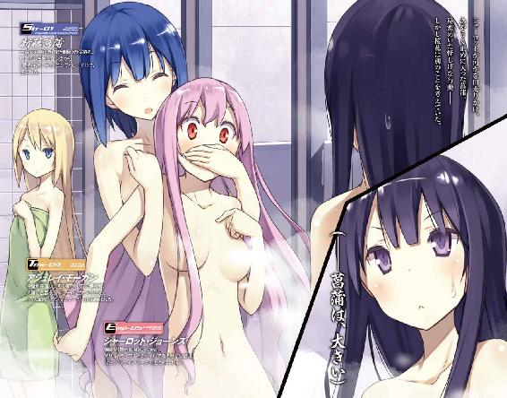
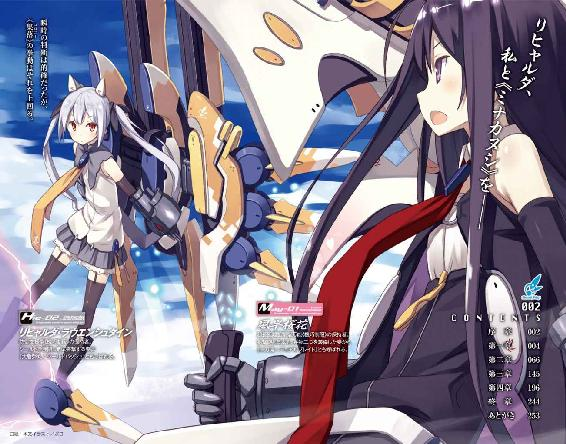
お台場駐屯基地の妖精
ストライク・プリンセス２
冬木冬樹

角川スニーカー文庫
本作品の全部または一部を無断で複製、転載、配信、送信したり、ホームページ上に転載することを禁止します。また、本作品の内容を無断で改変、改ざん等を行うことも禁止します。
本作品購入時にご承諾いただいた規約により、有償・無償にかかわらず本作品を第三者に譲渡することはできません。
本作品を示すサムネイルなどのイメージ画像は、再ダウンロード時に予告なく変更される場合があります。
本作品は縦書きでレイアウトされています。
また、ご覧になるリーディングシステムにより、表示の差が認められることがあります。
序章
コンクリート製のヒトガタ。
咲き乱れる桜の花。
自然に還されていく人工物。人工物へ変質するニンゲン。
その中で、カレはコンクリート製のヒトガタに胸を貫かれた、幼い少女を発見する。
少女の生命から考えるにそれは運のない姿で、けれど、何かをつかもうと、あるいは突き飛ばそうと腕を伸ばしているように見えるコンクリートの、その腕に貫かれている姿を客観的に見るにとても運の良い、奇跡的な致命傷だった。
どっちだろう、とカレは少女の目の前に座り込んで考え込む。
「──あ」
か細い呼吸。
どうやら少女にはまだ息があるようだった。
ますますわからない。本当にどっちなんだ。生きていて運が良いのか、苦しみが長引いて運が悪いのか。カレの価値基準からは、とても判断がつかないけれど、どのみち助かるわけもないので、やっぱり少女は運が悪いのかな、とカレは首をかしげた。
どんなカタチにせよ、少女も、ニンゲンたちも、絶滅するのは決定していた。
だからカレにとって少女の死はいつか絶対に訪れるもので、早いか遅いかだけの違いにしか過ぎなかったのだけれど──
「......しぬのは、いやだよ」
血の泡をこぼしながら少女がつぶやく。
カレは過敏に反応した。猫が尾を踏んづけられたように、ビクリと体が跳ねる。
それでもカレが逃げ出さなかったのは、カレの中に『逃げる』という選択肢がなかったからだ。
カレは絶対の蹂躙者。滅ぼしつくすまで退却は許されない。
ゆえにカレは、この瞬間まで少女をただ理由なくながめていただけだったけれど。
「どうして、死ぬのがイヤなの？」
カレは問いかけた。
──その質問こそ、すべての始まり。
約束された救いようのない結末を覆すため、一人と一体の運命がねじれた、十年前の災厄の記憶。
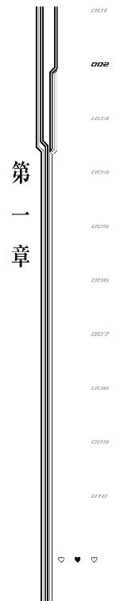
１
発端は、たぶんこの会話。
「ねぇねぇ桜花さん桜花さん、来週明けがなんの日か覚えてる？ おめでたい日、なんだけど」
「おめでたい？ ......海の日......は過ぎましたね。もうすぐ八月......夏......シャーロットからの質問......シャーロットの誕生日......でもなく......シャーロットがお台場に来た日......でもなく......シャーロットと初めて............関係の日ではありませんね」
「忘れちゃった？」
「はい、すいません。なんの日でしたっけ？」
「あ、忘れちゃったかあ......」
「私は記憶力がいいので、だいたいの物事は覚えているのですが......」
「そっかあ......」
それっきりシャーロットは何も言わなかったけれど、このやりとりが発端だったと桜花は考えている。
２
「桜花さんのばかー！ どうせわたしとは遊びだったんでしょ！」
「あ、遊びと言いますか、真剣と言いますか......そういう話なんですか!?」
修羅場です。
たぶんタイミングが悪かったんだと風早晴空は考える。
だって他に悪いものなんか見当たらない。七月の終わりかけた空はこんなにも青くって、桜の森に囲まれたお台場駐屯基地は季節感がなくてこんなにも美しい。電車に乗って山手線圏内まで行ってしまうともう味わえないような静謐な景色がここにはあるのだ。
そう、お台場駐屯基地は、桜の森に隔てられた陸の孤島だ。
ここには車から垂れ流される排ガスもないし、人混みのうるささもないし、電車や車などの環境音もない。
ただ、波の音と桜吹雪と、真夏の太陽と青空だけがある。
今はそれだけだ。
かつて、と言ってもつい二週間ほど前まで、この場所には《集落》という《異界人》たちの空母があったのだけれど、今はそれも《機巧士官》たちの活躍によって撃墜され、お台場の空は十年前のような何もない青さが広がっている。
まだ世界に《集落》は三体あるけれど、それでもちょっとだけ人類は空を取り戻したし、日本はもう《異界人》の脅威を払拭できた。
人の世界は少しだけ平和になった──はずなのに。
新たな争いの火種が空中にある。
しかも二つあって、音速で上空を交錯している。
おまけに翼の生えたヒトガタ。
そう、争いは、《機巧士官》同士で起こっていた。
「もう、桜花さんは、えっとー、そのー、や、優しいし......じゃなくて、かっこいい......じゃなくて......えーと、えーと......悪口思いつかないよばかー！」
争いの火種の一つは、シャーロット・ジョーンズという女の子だ。
ふわふわした桃色の髪の、小柄な子。
服装も柔らかそうな、ふわりとスカートが広がったもの。
巨大な機械製の翼──《機巧制服》にはアサルトライフルとミサイルポッドが搭載されており、それら二つは複雑で一見派手なだけに見える火線を描きながら、正確無比に冷徹に敵の逃げ場をつぶしていく。
広がる火線、髪と目、服装の色合い、それから行動のハジケ具合。
銃声と爆発音は絶え間なく響き、真夏の青空をなお明るく照らしていく。
まるで花火のようなシャーロットの猛攻。
さすが《機巧士官》。
人類が《異界人》に対抗するために見つけ出した、唯一の兵器である。
地上から見ていて晴空はつくづく思うのだが、アレは人間に向けられちゃいけない攻撃だ。逃げ場のつぶし方と射撃の正確性がすさまじすぎる。
でも悲しいことに、シャーロットの攻撃は、すべて仲間であるはずの《機巧士官》に向けられていた。
「ああもう！ なぜそんなに怒っているのですか!?」
めまぐるしい軌道で回避に徹するのは、風早桜花。
さらさらの黒髪に、細い体つき。
服装もタイトな、ミニスカートのワンピース。
《機巧制服》は右に細長い砲を装備し、左には長い日本刀を携えた超長距離と超至近距離の両方に対応できる、ピーキーにピーキーを足した代物だ。
おかげで中間距離には攻撃ができないらしく、シャーロットの放つアサルトライフルとミサイルには回避行動しかできていない。
それでも速度と軌道だけで戦場みたいな砲火をかわしていく手腕に、さすがと感心すべきなのか人間業じゃねえとおののくべきなのか、晴空は感想に困る。
ともあれ想像もつかないほどすごい。
アレが晴空自慢の、最近できた妹だった。
クラスメイトに『空飛んでるでしょ、あれ、うちの妹』と自慢するわけにもいかないので基本的には学校では明かしていないのだが、前に桜花が空を飛んで晴空を学校まで（正確には学校そばの学生寮まで）迎えに来たことがあるのでバレバレなのだった。
結構困っている。
何せ《機巧士官》は人類の希望、知名度・人気度はアイドルだとかスポーツ選手だとかそれらを足して倍にしたような代物で、やっていることは兵士だとか兵器なのにサインをねだられたり非公式で写真が売られていたりする存在なのだ。
その人気者である《機巧士官》同士が空中戦をやっている。
おかしい。
晴空が知る限りでは、今、彼女たちが行っているべきなのは対《集落》用のフォーメーション訓練であって、《機巧士官》同士の勝ち抜きバトルロワイヤルではないはずだ。
にもかかわらず、空には桜花とシャーロットがいて、地上には他三名の《機巧士官》が、死屍累々という感じで転がっている。
何があったのか地上にいる《機巧士官》にたずねようにも、アシュレイはうつぶせでぴくりとも動かないし、リヒャルダは尻を突き出した体勢で転がっているし、菖蒲は近場の桜に寄りかかって眠り姫のように目を閉じている。
死んでるんじゃなかろうか。
心配になった晴空は、とりあえずすぐそこにいたアシュレイを指先でつついてみる。
「ん......」
反応はあった。生きているらしい。
晴空は上空へと視線を戻す。
「怒ってないったら怒ってないよ！ わたしが怒ってると思う桜花さんが怒ってる可能性にわたしは賭けるね！」
「意味がわかりませんよ！ だいたい、あなた、目的を忘れていませんか!? これ、コンビネーション訓練ですからね!? 生き残りを懸けた《機巧士官》同士のルール無用バトルロワイヤルじゃないですからね!? 見なさいあの地上のありさま──って兄さんいつから見てたんですか!?」
「桜花さん、よそ見してたら危ないよ！ お兄さんばっかり見てたら爆発するんだからね！ リア充はミサイルで爆発するんだからね！」
「爆発させてるのはあなたですけどね！」
戦闘は速すぎて、爆発と火線、それに二人の描く軌跡が見えるばかりだ。
なので晴空が認識できるのは、必然的に声のみになる。
空が震えるほどの大爆発を起こし続けている二人なのだが、いい声しているのでよく通る。お陰で痴話ゲンカが地上までまる聞こえで、晴空は『自分は聞いてないふりして立ち去った方がいいのかな？』とか空気を読み始めてしまうありさまだった。
というのもシャーロットの口ぶりとか声の調子が、怒っているくせにやけに甘い。親猫に甘える仔猫というニュアンス。全部『にゃーん』と聞こえるようないじけっぷり。
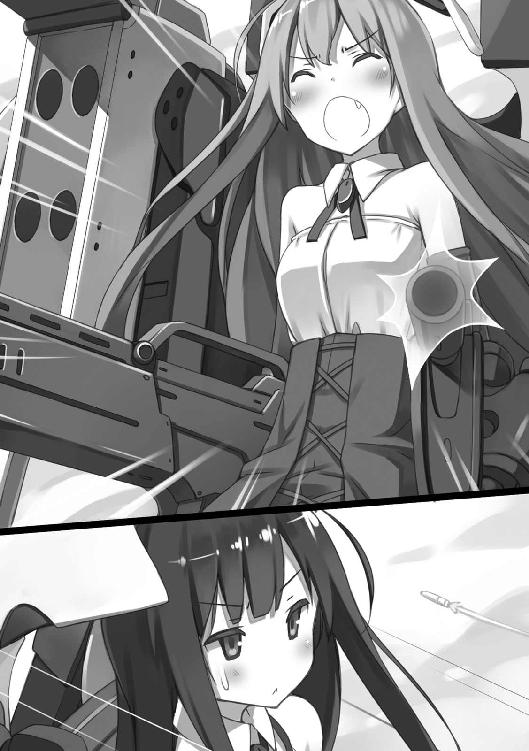
なので晴空としては『やめさせないと死人が出る！』というほどシリアスな気分になれず、せいぜい『ケガしないうちにやめるといいなあ』ぐらいの感想なので、見ている側としてはまったくハラハラしないのだった。
「さっきから言ってる通りわたしは全然まったく怒ってないけど、来週明けがなんの日か桜花さんが思い出すまで撃つのはやめない気分だよ！」
「怒ってるじゃないですか！ ......しかしシャーロット、もうあなたの好きにできる時間は終わりましたよ。私が本当に何か忘れているなら悪いなと思って甘んじて攻撃を受け続けてきましたが、兄さんが見ている以上、どんな戦いでも私に敗北は許されないのです。何せ私は世界最強の妹というキャッチフレーズで売り出す予定なのですから！」
「攻撃受けてないじゃん！ 避けてるじゃん！」
「お黙りなさい！ 反撃ですよ！」
かくして動き出す戦況。
せわしなく動き軌跡を残すのみだった二人の《機巧士官》が、空中でぴたりと静止しにらみあう。
彼我の距離は十メートルほど。
まるで斬り合いに挑む侍だ。戦いの素人である晴空から見ればまったく不可解な、しかし上空の二人にはきっとなんらかの意味がある数秒の沈黙が訪れる。
そして。
「来週明けがなんの日か忘れたなんて桜花さんって本当に──」
「先手必勝！」
「──まだセリフの途中だよ!?」
妹が無慈悲。
シャーロットのおどろきを無視して、桜花の《機巧制服》、その右側に搭載された長大な砲が放たれる。
そこから放たれる弾丸は瞬着だ。あまりの速度と狙いの正確性ゆえに、『引き金を引いたその瞬間にはもう命中している』ように見える、桜花必殺必中の一撃。
というか、桜花のメインウェポン、爆発する。
彼我の距離は十メートル。
桜花の起こす爆発は、最大で半径五十メートルを超える。
真っ白な輝きが桜花とシャーロットの間で炸裂した。
「って桜花さんこの距離、自爆──」
「負けなければ勝ちなんです！」
「捨て身!?」
薙ぎ払われる二人の《機巧士官》。
巻き起こる爆風に舞い上がる砂塵。
晴空は顔の前を両腕でかばったため、桜花とシャーロットがどうなったか最後まで見ることができなかった。
しかし砂塵が晴れた瞬間、反発しあうように、別々の方向にすっ飛んでいく桜花とシャーロットの姿が確認できた。
方向的に、桜花は東京湾に墜ちて、シャーロットはお台場を取り囲む桜の森のどこかに墜ちたのだろう。
《機巧制服》にも搭乗したままだったし、大きなケガもしてないと思う。
「......とりあえず、水の上で気絶したら危なそうだし、桜花から回収に行くか」
取り残された晴空はそう結論して東京湾側へ駆け出す。
もう、東京湾上空に《集落》もいないし、ここ二週間、《機巧士官》たちに異動命令も出撃命令も出ている様子がない。
実際に人類の存亡がかかった《異界人》進攻に比べれば、こんな小競り合いなどお遊びのようなもので、ほほえましさのあまりつい晴空も苦笑いする。
つまり、総合的に判断すれば、今日もまた、お台場駐屯基地は平和で。
上空で銃撃戦見せられて『平和』と感じるあたり、自分もすっかりこの駐屯基地になじんできたな、と晴空は思った。
３
結局、シャーロットが怒っている理由がわからない。
桜花はシャワーを浴びながら考え込む。
ここは『多目的ホール』内にある共同シャワールームだ。掃除は欠かしていなかったものの、久々の使用になるので蛇口のかたい感触に少々の懐かしさを覚える。
だってこの、ブースで区切られただけの簡素なシャワールーム、今となってはなかなか使う機会がなかったのだ。
というのも、《機巧士官》にとって出撃や訓練は単独で行うものなので、当然、全員で一度に入れるシャワールームを使用する必要がない。何せ各員の部屋に一つずつ風呂場があるのだから。
シャワールームを使っていた日々は、もうずっと昔に感じる。
《異界人》への対策がまだ充分に練られておらず、集団で場当たり的に挑んでいた未熟なころの思い出。
アシュレイが、シャーロットが、リヒャルダが、それから菖蒲が《機巧士官》になりたてで、まだ一緒に出撃していたころのお話。
そのころはこうやってシャワーを浴びながら、あそこがよかった、ここが悪かった、なんていうふうに真剣に《異界人》との戦闘内容を煮詰めていったものだった。
今ではもう、各々が自分の武装に合った《異界人》との戦い方の最適解を導き出しているので、戦術論が交わされることはない。
今日、全員で同時に訓練をしていた目的は、《異界人》の各個撃破から対《集落》の総力戦へと《機巧士官》の基本方針が変わったため、コンビネーションの練習をする予定だったのだけれど──
横一列に並んだシャワーブース。
一番遠くにいる者から、リヒャルダ、菖蒲、アシュレイ。
「リヒャルダ、最近何か様子がおかしいよ？」
「な、何言ってんのよ菖蒲。そんな、おかしく、お、お、おかしくないわよ？」
「......目が泳いでる。おかしい」
「アシュレイにまでおかしいと思われてるの!?」
「......『アシュレイにまで』とはどういうことなのか」
「だって、アシュレイこそ最近おかしいじゃない！」
「......おかしくない」
「ん？ 今度はアシュレイをいじればいいの？」
元気よく三人が会話している。
昔はみんなに、というか菖蒲にいじられるのはリヒャルダが担当だったけれど、最近のアシュレイはいい意味でスキができているので、たまに矛先がアシュレイに向く。
桜花は考える。アシュレイにスキができたのは、兄がお台場に住むようになってからに思う。
今度、何があったのか、手段を選ばず問い詰めねばならない。
アシュレイと決着をつける日は近いのかも、と桜花は拳を握りしめた。
──違う、そうじゃない。
今気にすべきは、隣のシャワーブースにいるシャーロットだ。
ちょっとおかしい。怒っているにしてはアシュレイを押しのけて隣のブースに来たし、さっきからちらちらと様子をうかがっているその顔も、あまり不機嫌には見えない。
しかし顔を向ければ慌ててそっぽを向いて、髪を洗う作業に戻る。
というか洗いすぎだった。いつまで髪を洗っているのだろう。あんなに髪ばかり洗っていたら逆に傷みそうな気がする。そろそろトリートメントに入った方がいいように思えてならない。
桜花は妙なところにハラハラしながら、髪を洗い続けるシャーロットをこっそり横目で観察する。
シャーロットは桜花の方を見てつぶやく。
「......美乳だぁ......」
急に胸を隠したくなったが、そうすると耳をそばだてていることがバレてしまうので、恥ずかしくなってはきたけれど、体についた泡を洗い流す。
なおも耳をそばだてていると、シャーロットの方からぶつぶつと声が聞こえてくる。
「何が違うの？ 食べ物？ お茶？ お茶、お茶かあ。でも緑茶は苦いしなあ。紅茶は色々味があって楽しいし。っていうか桜花さん緑茶でスコーン食べるのは信じられないよ......いやでも食べ合わせの問題があるのかも......」
自分の胸を見下ろしながらシャーロットがつぶやいている。
つぶやいているというか、小声とは言えない声量だった。
これなら聞こえてしまっても無理ないかな、と思い、桜花はシャーロットに声をかけることを決意した。
「何か言いましたか、シャーロット？」
「......えっ？ な、何も言ってないよ？ 何も言わないもんね。だってわたしは怒ってるからね。怒ってると人は無口になるんだよ桜花さん！ だからわたし、今、すごい無口！ この無口さは、東京湾の貝よりもすごいんだからね！」
「そうですか......」
自分は無口だ！ と力説されてしまっては黙るよりない。
果たして今の東京湾で貝はとれただろうか、と桜花は考えつつ、またシャーロットから視線を逸らし、それとない観察に戻る。
今度は多少気になることを言われてもしばらく我慢して様子を見よう、と決断。
するとシャーロット、またつぶやき出す。
「......お尻が小さい......」
「何か言いましたか!?」
我慢できなかった。
というかシャーロット、ブースを隔てる、胸から膝ぐらいまでの高さの壁に乗っかって、がっちりこちらを見ている。
無視できるはずがなかった。
「えっ？ その、あのぉ......な、何も言ってない！ 言ってないよ！ 今のわたしは不機嫌なんだからね！ そう、不機嫌なんだから話しかけたらダメなんだよ！ 今のわたしに話しかけると爆発するよ！ わたし、危険物！」
「話しかけた方が爆発するんですか!?」
どっちが危険物だかわかったもんじゃない。
「だいたい桜花さんはわたしのこと見過ぎだよ！ き、気になる？ わたしのこと、結構気になる感じ？」
「まあ......」
あからさまにじろじろ見られているし、訓練前から様子がおかしいし、気にならないわけがない。
桜花が首肯すると、シャーロットがぱあっと笑顔を浮かべる。
「そっかー。えへへ」
「......ところでシャーロット、今になっても思い出せないのですが、来週明けは結局、なんの日なんですか？」
桜花は記憶力がいい。
加えて、シャーロットは何かにつけて『記念日』と言いたがる子なので、シャーロットに関係する日はだいたい覚えているつもりだったのだが、来週に何があるのかは、まったく記憶になかった。
他の子に関係ある日だろうか、と脳内検索もしてみたけれど、まったく該当しない。
だから降参して、たずねてみたのだけれど。
「桜花さんのそういうところ、ダメだと思う！」
「だめ、と言われましても。これでも私はかなり物覚えがいい方なのですが」
「そうだよ！ 物覚えいいのに忘れてるんだもの！ なんていうか、なんていうか......もっと自分を大切にしなよ！」
「......はあ」
なぜか諭されてしまった。
「桜花さんの一番どうかと思うところだよそこは！ そりゃあ、好きな本の作者の名前とか、リヒャルダの誕生日とか、わたしの今日の予定とか、今朝食べたものとか、わたし忘れっぽくて桜花さんに頼ってばっかりだけど、なんていうか、もっと、もっと......人のこと以外も覚えてていいと思うの！」
「人のこと以外というと、兄さんのことはかなり覚えていますが」
「お兄さんも人じゃん！」
「違います。兄さんは『兄さん』という生き物です」
「えっ、いや、その、『人』っていうのは生物カテゴリ的な意味じゃなくて、『他人』と『自分』で言う『他人』の話なんだけどね？」
「兄さんは他人じゃありません！ 私の一部です！」
「あ、はい、ごめん......じゃなくて！ とにかく──」
わけのわからない方向で白熱し始める会話。
なぜか今さら自分にとっての兄の位置づけを説明させられる展開になり桜花はやや困惑してしまったのだが、白熱したかいあって、シャーロットが何かを口走りかける。
しかし。
「シャーロット、そこまでよ？」
急にシャーロットのブースに現れた菖蒲が、シャーロットを後ろから羽交い締めにして口を塞いでしまう。
けれどまだこの時、桜花が問いかければ、シャーロットは来週に何があるのか吐いたかもしれない。
けれど桜花は言葉に詰まってしまった。
シャーロットを背後から抱く菖蒲。
その胸元の圧倒的質量、まるでテンピュール枕のように形状を変える柔らかで巨大なふくらみに、思わず視線を奪われる。
桜花は自分に自信があった。
人の価値は大きさで決まるものではないという自負があった。
けれど圧倒的戦力を前に、ついつい気圧されてしまった。
──菖蒲は、大きい。
単純な事実が桜花の口を縫い付けている間に、菖蒲はシャーロットを抱いたまま、シャワーブースをあとにしてしまう。
続々出て行く他の《機巧士官》たち。
ともあれ進展はあった。
シャーロットが不機嫌になった原因は、桜花の記憶に欠落があるからで、どうやらシャーロットと、菖蒲にも、桜花に欠落している記憶に覚えがあるらしい。
しかし今は、そんなことよりも──
一人、シャワーブースに取り残されて、頭のてっぺんからシャワーを浴びながら、桜花はうつむく。
見下ろした先には、シャワーブースの床と排水溝。
視線を遮るものは、ない。
頭のてっぺんからつま先へと、シャワーのお湯が流れ落ちていく。
これを遮るほどのふくらみも、ない。
胸中に広がる、菖蒲に対する敗北感に、桜花はしばらく立ち尽くすしかできなかった。
４
「兄さん、胸の大きさばかりが女性の魅力ではないんですよ！」
「なんの話ですか!?」
部屋に帰ってきた桜花の第一声に思わず飛び退く。
晴空は自分の部屋にいた。
自分の部屋というか、自分と桜花の部屋になってしまった部屋というか。そもそも私室はもらったはずなのだが、なぜか桜花が居着いてしまい、結果的に風早家のルームと化しているという感じだ。
何もないだだっぴろい、真っ白な部屋。
存在する家具は、ベッドとパソコン、それを置くテーブルぐらいのものだ。
晴空の私物がないのは今まで学生寮暮らしで家具や私物をあまり持てなかったことに起因するのだが、桜花の私物がないのは趣味がないゆえだろうか。
服はある。クローゼットが壁に埋め込まれていて、その中に桜花のと合わせて収納されている。
この部屋にはトイレも風呂もあるのだが、壁全体が真っ白いうえに、綺麗な平面で継ぎ目があまり見えないので、ぱっと見の印象だと、ただの四角く白い寝室にしか見えない。
ちなみに兄妹で暮らすことになってはいるがベッドは一つきりなので、晴空は毎日床で寝ていた。
しかし床で寝ていても朝起きたら桜花が隣にいるので、今では桜花を床で寝かせるわけにもいかないし、とあきらめて二人でベッドを活用している。
あと、窓の外には桜。
桜花の部屋とは向きが違うはずなのだが、お台場は周囲のすべてを桜が囲んでいるので、窓がどっちを向いていようとだいたい桜の森が遠くの方に見える。
ただ、桜花の部屋からは見えなかった『多目的ホール』と呼ばれている建物が、晴空の部屋からは見えた。
ここから見える『多目的ホール』──というか、お台場駐屯基地の建物はすべて、ただの四角い灰色の箱だ。
かつて《集落》が東京湾上空にあったせいでゆったり建物を建てているヒマもなく、このような急ごしらえの豆腐ハウスになってしまっている。
今、東京湾上空に《集落》はないのでこれでゆったり『駐屯基地』と呼んでも名前負けしないような立派な建物を建てられる──と思いきや、ここはあくまで対《集落》の最前線基地でしかないので、《集落》がなくなってしまえばここに立派な建物を建てる必要性自体がなくなるのだった。
世界は十年前から、《集落》に対抗するためにかたちづくられている。
そして対《集落》、対《異界人》の最先端最高峰最強唯一の兵器であるはずの《機巧士官》をやっている妹が、部屋に入ってきたと同時にわけわからないことを言い出した。
世界はひょっとしたらヤバいんじゃないかという気がひしひししてくる晴空だった。
桜花はベッドに座っていた晴空に向けてずんずん近寄ってくる。
浴衣姿に大股での接近なので、裾がえらくめくれて大変なことになっていた。
本日の浴衣は白地に金魚の柄である。
帯はマジックテープ式のはずだ。
前に目の前で『ほらどうぞ』と外して見せてくれたことがある。
その時、当然浴衣も外れた。桜花が何を『どうぞ』とすすめたのかは記憶から除外してある。僕たちは兄妹です。えっちなのはいけません。
いらないことを思い出しているうちにすぐ目の前に来た桜花にがっしり肩を摑まれた。
顔がすぐそばまで迫ってくる。いいにおい。たぶん石鹼か何かなのだけれど、あまりボディソープやらシャンプーにこだわらない晴空には、『何かいいの使ってるんだろうな』ぐらいしかわからない。
「兄さん、私は思うんです。かたちが変わるからなんですか。質量が大きいからなんですか。トップとアンダーの差がなんですか。ああいうのは違うんです。たしかに、銃だって口径が大きい方が威力がありますが、口径が小さい銃には代わりに貫通力がありますし、携行性だってあるんです。取り回ししやすいんです。いじりやすいんです。だから私が大事だと思うのは、つまりそういうことなんですよ！」
「わかったから落ち着きなさい。あと、浴衣をちゃんと着なさい。前がすごいことになってるから」
はだけた浴衣を見て『大きい人をひがむほど小さくもないような』と思ってしまう晴空だった。
視線を逸らす。
頰を挟まれて強制的に前を向かせられた。
「私は誓いました。二度とアレを見ても敗北感を覚えまい、と。大きさじゃないんです。美しさなんです。というわけで兄さん、傷ついた私をなぐさめてください」
「そういう流れじゃなかったよね今!?」
妹が急展開だった。
「流れだなんてつまらないこと、気にしなくても大丈夫です。気持ちです。大事なのは、お互いの気持ちなのです。さあ、キスしましょう」
「俺の気持ちが無視されかけてますが！」
「......」
「言葉まで無視!?」
「すいません、ハネムーンについて考えていました」
「この一瞬でどこまで思考が飛躍するんだよ！」
「ほら、《機巧士官》ですからね。飛躍しないと戦えませんし」
そういう飛躍じゃないだろ、と言おうとしたが、否定もしきれなかった。
話を聞くに《機巧制服》は『想像した行為を達成するために物理法則を書き換えて奇跡を起こすガジェット』なのである。
つまり頭の中で飛べると信じなければ本当に空を飛べない。
なので思考までぶっとぶ必要はないと断じきれないのだった。
「さあ兄さん、兄さんが兄妹同士のスキンシップに否定的なのは知っていますが、キスぐらい兄妹でも普通にするんですよ。常識ですよ」
「いや、それは、ない」
桜花の頭の中でどうなろうと自由だが、そんな常識だけはありえなかった。
「それにしても桜花、おまえさ、あんだけ激しく戦ったあとなのに随分元気だよな」
あきれるぐらいである。
ケガがないのはいいのだが、体力がありすぎるのはよろしくない。
真っ当で常識的な兄妹関係を維持したい晴空としては、毎日部屋に帰ってくる妹には健やかに元気よくへとへとになっていてほしいのだった。
桜花は不満そうにぷうと頰をふくらますと、不機嫌そうにドスンと晴空の真横に腰掛ける。
「兄さんは受け流しの達人ですよね。私が一生懸命『そういう空気』を作ろうとがんばってもすぐに話題を逸らしてしまいます」
「おまえの情熱の傾け方は兄妹として不適切だ」
「不適切な兄妹関係？」
「よし深呼吸しろ。それで冷静になれるはずだ」
二週間で妹との付き合い方にも大分慣れてきた晴空だった。
背中をぽんぽんと叩いて深呼吸させれば、桜花は冷静になった様子でつぶやいた。
「今川焼き食べたいですね」
冷静なのかはわからなかったが、さっきまでの謎勢いは消えているのでよしとする。
「......ところでさっきはなんで《機巧士官》同士で戦いを？ 俺は集団戦法の訓練をするって聞いてたんだけど」
「それが、私にもわからないんです。シャーロットが何やら怒っていて、怒っている理由には菖蒲も心当たりがあるようで、記憶力のいい私にだけ何が何やらわからないんです」
「記憶力いいんだ？」
「今、兄さんが穿いているパンツの柄だって覚えていますよ」
「それは記憶力関係ないよな？ なんで知ってるんだ？ 怒らないから言ってみ？」
「ところで兄さん、真っ白なトランクスなんてどこで手に入れるんですか？」
「今度俺は掃除のついでに隠しカメラを捜索すべきなのかもしれないな......」
「おそろいの色にするために妹がしているかわいい努力になんてことを！」
「やっぱりおまえの情熱は方向性がおかしい！」
「情熱はおかしくないです！ 愛情が狂おしいんです！」
「わかった。話を戻したい。というか、この話は続けたくない。俺がおまえを詰問してるはずなのに、いつの間にか攻守が入れ替わっている」
ちょっとした質問をしただけなのに妹の愛の濃厚さと重さに押しつぶされそうだった。
そのうち愛につぶされて（社会的に）死にそうな気がする。
「あー......つまりその、なんだ。桜花の方もわけわからない事態に巻き込まれて困惑してる最中ってわけだ」
「桜花の『方も』ですか？ 兄さんも何か？」
「いや、うん。ちょっと困ったことになってて相談したかったんだけど──」
ちらり、晴空は窓の外を見る。
──何かがこちらをうかがっている気配。
そう、晴空は最近、たびたび視線を感じるのだ。
ありていに言って、ストーカーされていた。
だが、ストーカーの姿は見えない。
気配に気付いて晴空が目を向けると、ささっとどこかへ消えてしまう。
まあ、その消える際に、長い銀髪が二本、尾を引いているので、誰がストーカーしているかはまるわかりで、本当は気付いてほしいんじゃないかと思うぐらいなのだが......
しかし相手の目的・動機がわからないし、本人のところへ『やめてくれ』と言いに突撃するにはまだ少し抵抗があるしで、正直なところ、もてあましている。
「──実害はないし、桜花の方が片付いてまだ気になってたら、改めて相談させてもらおうかな」
「そうですか？ 兄さんの相談であれば、最優先で受け付けますが」
「いいっていいって」
「はあ？ ......まあ、兄さんがいいとおっしゃるのであれば、いいですけど」
普段ならばここまであっさり引き下がることもない桜花だ。
やっぱりシャーロットとのケンカ？ が精神をガリガリと削っているのだろう。どことなく疲れ果てているようにも見える。
しかし、今は長い休暇の最中だ。
戦い通しだった桜花たち《機巧士官》だが、二体もの《集落》を撃墜してからというもの、もう二週間も出撃がない。
訓練はしている様子があるものの、それも強制されてではなく、自主訓練、というふうに見える。
桜花たちも夏休みなのだろう。
しかし、この夏休みが終われば、彼女たちはどうなるのだろうか。
まだ《集落》がいる国へとかり出されるのだろうか。
......その時についていくか、それとも住み慣れた日本にとどまるか、決めかねていて避けてきたのだが、ここらではっきりと聞いておくべきかもしれない。
晴空はそう決断して、桜花に問いかける。
「なあ、桜花はいつまで休みなんだ？」
「休みというか、待機なので、突然の出撃コールがあれば出られるようにはしていますが。......そうですね。定まった予定としては、今週いっぱいまで何もない、という感じでしょうか」
「ああ、そうなんだ。そのあとは？」
「そのあとは、出撃ですよ？」
桜花がきょとんとしている。
説明が足りなかったか、と晴空は笑う。
「そうじゃなくて、出撃する国の話。日本にはもう《集落》ないだろ？ だからさ、どこかの駐屯基地に異動するのかな、って」
「あ、いえ、日本に残ります」
「日本からよその国まで行くのか？ まあ、《機巧士官》の速度だったら地球の裏側までひとっ飛びだろうけど──」
「そうではなくて......機密扱いだったので兄さんにも言えなかった情報があるのですが、たしかに私に力を与える兄さんに情報を与えないというのは、本部の判断ミスですよね」
うんうんうなずく桜花。
──イヤな予感がする。
晴空は自分の顔がこわばっていくのを感じた。
機密扱い。日本からの出撃。今週いっぱい休み。......想像がつく。きっとよくない事態が起こっている。それにしては桜花はじめ《機巧士官》の女の子たちには緊張感がなくって、まったくもって『いつも通り』という風情だったけれど──
当たり前だ。
「実は残ったあと三体の《集落》、そのすべてが日本に接近中なのです」
──《機巧士官》にとってはいつものこと。
むしろ出撃がなく、見渡す空に《集落》がないことの方が異常事態。
「その《集落》たちが私たちの警戒区域に入るのが今週末ぐらいとのことなので、それまで待機中だったんですが──どうしました兄さん？ 顔色が悪いですよ？ 何か困ったことでもありましたか？」
桜花は不思議そうな顔をしていた。
──たしかに、この話題に関しては、自分の方がおかしい。
だって十年前からこの世界には、《集落》が我が物顔で鎮座していて。
世界にはまだ三体も《集落》が残っていて。
──人類は未だ、《異界人》の脅威から脱却していないのだから。
５
「というわけで、《集落》が来る前に心配事を片付けなければなりません。大変ですよこれは、何せ、《集落》と違ってシャーロットの攻略法がわからないのですから」
物事の大変さのランク付けが、《機巧士官》と一般人とでだいぶ違うように晴空には思えてならない。
桜花は部屋を出て行った。
シャーロットにまつわる問題を片付けに行くのだろう。
がんばれよと晴空は桜花を見送り、扉が閉まったのを確認して大きなため息をつく。
ベッドに大の字に寝転がって天井を見上げる。
さて──ストーカーについて少々考えよう。
晴空が視線を向けると決まって見える、尾を引いてなびく二つの銀色の線──ようするに、銀髪ツインテール。
そうなるとお台場駐屯基地に心当たりは一人しかいないのだけれど、動機の方が本当にまったくさっぱりなので、問い詰めようにも『そんなことするわけないでしょ！』とシラを切られれば攻めきれないのである。
さっき桜花に言った通り、つけられているだけで実害はないからいいのだが、心配なのはむしろ自分のことよりも、ストーカーをしている側のことだ。
彼女は《機巧士官》である。
週末には出撃するはずだ。
しかも相手は《集落》。
桜花の様子を見ていると楽勝ムードが漂っているのだが、晴空のような一般市民から見れば十年間人類をさいなんでいた天敵が相手で、杞憂があっては実力を発揮するのに邪魔になるだろう。
だから話があるならストーカーなんかせずに、直接、文句でもなんでもいいから言ってくれればいいのに──
ガラガラガラ。
窓が開く音がしたのは、晴空が二度目のため息をつこうとしたタイミングだった。
そちらに視線を向ければ、開いた窓から真夏の熱気とともに入ってくる人物が一人。
銀髪ツインテール。
小柄な体軀。
体が細いせいでややぶかぶかに見えるセーラー服姿。
どう見ても、晴空をストーカーしているその人。
リヒャルダ・ラウエンシュタインだった。
「よいしょ、よいしょ......」
機巧士官寮の部屋はすべて一階にあって、窓の高さはそこまででもないのだけれど、リヒャルダは小柄なので、えらく苦労して窓から入って来ている。
というかなぜ窓から入ってくるのだろう。何を思って、あんなに一生懸命に窓枠をよじのぼっているのだろう。
意味のわからない行動だったが、精一杯手足を伸ばして窓枠を乗り越え、途中でバランスを崩しながらも窓枠にしがみついてバランスをとり、懸命に室内へ入ってくる姿は、頰袋いっぱいに食物を詰め込むハムスターのような、見る者をなごませる力があった。
「あっ」
「あっ」
お尻から入ってきたリヒャルダは、最後の最後でつるりとすべった。
ベチン、と痛そうな音を立てて尻から室内に落ちる。
つい心配になって、晴空は起き上がった。
「だ、大丈夫......？」
「何が!? あ、あたしが、だ、大丈夫じゃなさそうに見えるっていうの!? どこが!?」
行動が。お尻が。
涙目なあたりが。
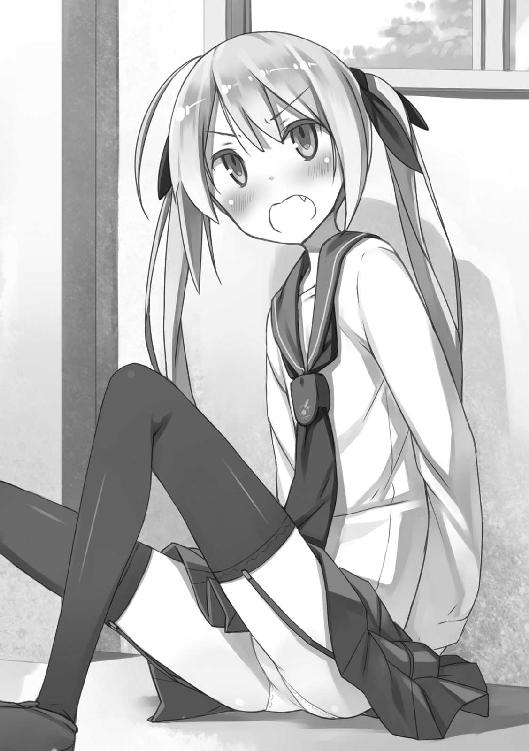
しかし冷静に突っ込んだら泣き出しそうな、子供じみた妙な迫力があるので、晴空は言葉に詰まる。
その間に体勢を立て直したリヒャルダは、片腕を腰に手を当てたポーズでびしぃ！ と晴空を指さし、言った。
「こんなところで会うなんて偶然ね！」
「あ、はい......」
対応に困ったので深く考えないことにする晴空だった。
ただ、エアコンを使っているので、窓は閉めてほしいなあと思った。
なぜか流れる沈黙。
空気に耐えきれずリヒャルダは言う。
「さ、最近どうよ!?」
「最近!? 最近は......えっとぉ......ふ、普通かな？」
「普通なのね！ そう、普通はいいわね！ 普通だものね！」
「......なんだこの会話！」
つい口に出てしまうほど意味がわからないやりとりだった。
「違う！ 違うの！ こんなこと言いたいんじゃないの！ ちょっとアンタどうしてくれんのよ！ あたしの頭真っ白じゃない！」
「深呼吸すればいいと思うよ」
桜花の暴走はだいたい深呼吸で治る。
晴空のすすめに従い、リヒャルダは何度か深呼吸する。
「落ち着いたわ」
「そう、それならよかった」
「うん、まだその時期じゃなかったわね。うん......別に話す勇気がないとかそんなんじゃないの。タイミング、そう、すべてはタイミングが悪かったのよ......」
「あ、はい。また今度......ってここまで来たんなら言いたいこと言ってよ！」
気になってたまらない。
晴空は去って行こうとするリヒャルダに追いすがる。
セーラー服の首元のヒラヒラをつかんで止めようとするのだが、リヒャルダ逃げる。
仕方がないので腹部にすがりつく晴空。
「きゃー！ きゃー！ きゃー！ 何すんのよこの、この、」
「だってずっとストーカーしてただろ!? 何か話があるんじゃないのかよ！ だったら今言った方がいいって！」
「た、タイミングが悪いって言ってんでしょ!? 別に話そうかどうしようか迷ってるわけじゃないんだから！ 勢いで出てきたけど勇気なかったとかじゃないから！」
「本当素直だなリヒャルダは！」
「素直じゃないわよバカ！ なんていうか、あたしは、あたしは......」
リヒャルダの足が止まる。
不審に思いながら、晴空はそっとリヒャルダの胴から離れる。
リヒャルダは、逃げなかった。
「......ずっと、言いたかったことがあるの」
振り返るリヒャルダは思い詰めた表情だった。
「本当はもっと早くに言わなきゃいけなかったこと。だけど、あたしにはできなかったの。だって、あたしの言葉が、アンタと桜花の幸せを壊すことになるから」
「俺と──桜花の？」
「うん。......だからあたしは素直なんかじゃない。言いたいこと、本当に全部、思った通りに言えていたら、きっとこんなことにはならなかったもの」
「その『言いたいこと』っていうのは──」
晴空の言葉は途中で止まる。
だって、こちらを見上げるリヒャルダの表情は、瞳がうるんでいて、切なそうで、たまにうつむいて、何かにすがるように、両手でぎゅっとスカートの裾をつかんでいる。
震えている。
女の子が、目の前で涙を浮かべて、震えている。
だから晴空はどうしたらいいかわからない。
「実は、あたしね、アンタに言わなきゃならないことがあって......」
「言わなきゃならない、こと？」
「うん。あのね、その......お、お、桜花と、別れて、ほしいな、って......」
「ヘァッ!?」
光の巨人みたいな声が出た。
別れてほしいとはなんだ。部屋割りか。食事の時の席順か。そもそもくっついているものなんて、部屋とベッドと普段の生活ぐらいしか思いつかない。心当たりありすぎた。
しかし、肩を震わせうつむきながら、指をもじもじとすりあわせるリヒャルダの様子を見ていると、思いつく限りのどれも違うような気がする。
このリヒャルダの様子といったら、まるで愛を告白する乙女のそれだ。
と、そこまで考えて晴空の頭にガチリとはまる結論が出た。なるほど、彼女は《機巧士官》。桜花同様、世間一般とは違う常識の持ち主。『兄と妹』という関係性を『家族』ではなくもっと違う恋愛的な何かと思っている可能性がある。
おまけに《機巧士官》内での桜花の人気は晴空もなんとなく知るところ。
だから桜花を解放してほしい的な意味合いなのだと晴空は結論づける。
一瞬ドキリとはしたけれど、これが恋愛事の相談であれば、付き合いの浅い異性である自分よりも、付き合いの長い同性である桜花が対象なんだなと冷静に判断できた。冷静ですよ。
だからそこからの晴空は紳士的な対応ができた。
「別れるも何も、きっと全部リヒャルダの勘違いだよ」
「勘違い？」
「そうそう。......そう、ほら、久々の再会だから舞い上がっているだけで、桜花には桜花の歩む道があるし、俺には俺の歩む道があるんだと、そう思うんだ」
つい主語を避けたあいまいな返しになるのは、恋愛がらみの感情について明確に言葉にするのが恥ずかしかったのと、上目遣いでこちらを見上げるリヒャルダのかわいらしさにあたふたしてしまったのが理由だった。
晴空の言葉にリヒャルダは安堵した表情を見せる。
「よかった。......あたしね、勇気が本当になくって、いっつもいっつも、大事なことが言えないの。今回だって、桜花には絶対に言えなくって、でも、アンタにも言えなくって......本音が言えないで、後悔してるの。でも、よかった。あたしは今度こそきっと──」
安心感のあまりか、涙をこぼすリヒャルダ。
晴空はその涙をぬぐって、頭をなでる。
抱きしめるような距離だったけれど、遠慮より先に体が動いた。
それは『兄魂』とでも呼ぶべき、たぶん昔、幼かった桜花にしていたであろう兄という生物としての基本理念に従った行動で、深い意図はなかった。
強いて理由を挙げるならば、『なんとなく』の行動。
しかし。
「兄さん！ シャーロットも菖蒲も捕まらないんですけど！」
その場面に帰ってくる桜花。
ドアを開け一歩踏み込んで、それから桜花は硬直する。表情に感情らしきものが浮かんでいない。それは、理解できないものを目撃した人間の顔だった。
ゆっくり首をかしげる桜花。
コンマ一秒までつぶさに、晴空とリヒャルダは桜花の様子を見てしまう。
誰も動けなかった。
ただ、桜花だけが、まばたきを繰り返していた。
「......ええと、兄さん、リヒャルダ、どういう状況で？」
「どういう状況っていうか、ど、どういう状況だろう......」
助けを求めるように晴空がリヒャルダを見てしまったのも、無理はない。
リヒャルダはしばし呆然としていたが、数秒たって、ようやく自分の状況に気付いたらしい。
状況を理解して、リヒャルダはまず、晴空の腕を振り払った。
次に、顔を真っ赤にしながら、片腕を腰に当て、もう片方の手で桜花を指さす。
「別に何もないから！ 何もないんだからね！ た、たまたま通りがかっただけだし！ そ、そういうことだから！」
それじゃ、と窓に向かってダッシュ。
来た時同様、もたもたと彼女にとっては高い位置にある窓枠に足をひっかけて、外へと帰っていった。
あ、土足だったのか、と晴空はやけに冷静に、リヒャルダの小さな足を見ながら思う。
「兄さん、どういう状況ですか？」
「あ、しまった！ 逃げたのか！」
リヒャルダがいなくなったことで桜花の矛先が自分一人に集中してしまう事実にようやく気付く晴空だった。
桜花はきっと怒る。
自分がリヒャルダを泣かせたと思って、怒る──そう晴空は考えた。
しかし説明のしようもない。
『桜花には絶対に言えないし』とこぼしていたリヒャルダの気持ちというものがある。こと恋愛系の思い悩みは、好きな相手本人には絶対に漏らしてほしくないものだという気持ちは、晴空にもわかった。
洗いざらい言えないし、今のエピソードをまとめて要点のみ抜いて語るには晴空だってまだまだ混乱していた。
だから、自分がリヒャルダの涙をぬぐった時の、衝動だけ語ろうと思った。
「なあ桜花、勘違いしないで聞いてほしいんだけど──」
「はい」
「今、桜花には俺が、リヒャルダを泣かせていたように見えたかもしれない。でもそれは、そんな話じゃなくって......ああいや、ある意味俺が泣かせたのかもしれないけれど、なんていうのかな、その......なんとなくなりゆきだったんだ！」
「ほう」
桜花の目が細められる。
アカンやつだこれ。
「どうやら《集落》が来るまでに片付けるべき問題があるようですね」
桜花の中で、何かのスイッチが入ったようだった。
晴空は思わず祈る。
けれど空には《集落》が浮かぶ世の中だ。祈る対象なんか思いつきもしなかった。
６
すごく曖昧な言い訳しかできなかったが、桜花にはどうにか許してもらえた。
そもそも何を許されるのか、許されるようなことを本当にしていたのか、許しとはなんなのか、人類はどこに向かっているのか──そんなことを考えてしまうぐらいに長い長い言い訳をしたので、さすがの桜花も根負けしたのかもしれない。
ただし一つだけ約束を交わすことになった。
「次から他の子に会う時には、まず私を通してくださいね」
マネージャー制度の誕生であった。
いやしかし、と晴空は考える。そもそも今までアイドルとか世界的スポーツ選手とかハリウッドスターとかそういうランク付けだった《機巧士官》にマネージャーの一人もいなかった事態が異常なのである。
たしかに《機巧士官》が住まう場所、ことお台場駐屯基地に限った話で言えば（他の国の事情まで晴空は知らない）、そもそも桜の森に囲まれた出島という立地上侵入は困難だし、お台場国鉄（旧ゆりかもめ）で来ようにも電子・人力の二重のチェックをくぐり抜けなければホームに入ることすらできない。
加えて、最近まで東京湾上空で《集落》がにらみを利かせていたとなれば警備は盤石である。
よって《機巧士官》は一般市民との触れ合いを滅多にもつことができず、一般市民の中で《機巧士官》は偶像化され、《機巧士官》の中で一般常識というやつは歪曲されて、現在晴空が常識知らずな妹に困る毎日を送る土壌が生成されているのだった。
しかし桜花がシャーロットと空中大爆発し、リヒャルダが突然乱入してきて涙し、その涙をぬぐっているシーンを桜花に見られ、桜花が《機巧士官》のマネージャー役に収まったその日のうちに、もう一つ事件が起こった。
今度はシャーロットに呼び出されたのである。
メールアドレスは二体目の《集落》が片付いた日のバーベキューパーティーで携帯電話を奪われ全員のを登録していたのでメールが来ること自体には不思議も不都合もないのだが、内容にちょっとだけ困る一文が添えてあった。
『桜花さんに内緒で会いたいんだけど、どうかな？』
マネージャー制度ができたその日にとんだ試練である。
晴空は悩んだ。
悩みながら、桜花に内緒でシャーロットが指定した場所まで行った。
『行くのかよ！』と第三者からツッコまれそうな行動だったが、理由がある。
だって約束の時間は迫っているし、断ろうか行こうかを悩んでいるのであるから返事のメールも出せないし、断りもしないでシャーロットを延々待たせ続けるのも悪い。
つまりメールが来た時点で詰んでいて、晴空は桜花に心の中で謝罪しながら、シャーロットの指定した場所へ行った。
《機巧士官》の間で『桜の樹海』と呼ばれる場所だ。
お台場駐屯基地は無数の桜が林立する、桜の森に囲まれている。
その中でも特に大きな、自然界にはありえないほどの桜の木（かつて大観覧車と呼ばれていた建造物が、《異界人》によって変質させられたもの）の根元付近、そこに広がる花畑のあたりを『桜の樹海』と呼んでいるのだ。
時刻はすでに夜七時をまわっているのだが、夏の七時はまだうすぼんやりと明るい。
沈んだ太陽の残滓なのか、人工物がないゆえに星明かりが届くのか。
皮肉な話だが、《異界人》が襲来し、人工建造物を片っ端から樹木に変質させ、数多の工場や交通機関などを麻痺させてから、空は美しく、星明かりは強くなっている。
お台場駐屯基地には最小限の数しか街灯がない。
それらは建物周辺と駅から駐屯基地への道にあり、桜の森を照らしてはいない。
暗い森の中、けれどしっかりした足取りで晴空は桜の樹海へと向かった。
手近な樹の陰から、顔だけ出してのぞきこむ。
そこには、シャーロットのみならず、リヒャルダと菖蒲、アシュレイもいた。
奇しくも『今度他の子に会う時には私を通してくださいね』と言われたその日に全員と同時に会うというとんでもない裏切りである。
晴空は苦悩し罪の意識にさいなまれるとともに、桜花の運命的な前フリ発言に苦笑いするしかなかった。
「あ、お兄さん！ なんでそんなとこからのぞいてるの？ プレーリードッグごっこ？」
そんな珍妙な遊びはしていないので、晴空は四人のもとへ出る。
四人ともパジャマ姿だ。
ぶんぶんと元気に腕を振ってこちらを出迎えるシャーロットは、ドレスみたいな桃色のパジャマを着て、肩からショールをかけている。
晴空などは真夜中であろうが、服装が半袖ショートパンツであろうが、正直エアコンなしの場所には出たくなかったぐらいに暑く感じているのだが、女の子は基礎体温が低いのだろうか。毛糸のショールというのは季節感がないこと甚だしい。
そういえば桜花も日中は長袖ブレザーを好んで着用しているし、ひょっとしたら《機巧士官》は何か事情があって寒がりなのかもしれない。
不意に右側に気配。
「......早く」
視線を転じれば、いつまでも接近してこない晴空を見て焦れたのか、アシュレイが迎えに来ていた。
袖をひっぱる彼女を見ているとリードをくわえる犬を連想する。失礼な話かもしれないが、そういう想像をしてしまうのは晴空だけが原因とも言い切れない。
だってパジャマに耳と尻尾が生えている。
シャーロットのものよりも幾分季節感のある半袖パーカーとショートパンツのパジャマには、フードに犬耳、お尻の部分に犬の尻尾が縫い付けられていて、夏という季節のイメージには合うが普段のクールなアシュレイのイメージからは想像つかなかった。
「......何？」
「い、いや」
かわいいよとはっきり言うには、まだまだ晴空は修業不足だった。照れる。
袖を引っ張られるまま《機巧士官》たちが待つ巨大桜の幹の側へ。
となりあって立つシャーロットと菖蒲。
逃げ道を塞ぐように袖をつかんだままのアシュレイ。
桜の陰でプレーリードッグごっこをしているリヒャルダ。
目が合うとすごい勢いで逸らされた。
部屋に来て泣いてしまったことを引きずっているのかもしれない。
あんまりじろじろ見るのも失礼かなと思い、晴空はリヒャルダから視線を外して、なんとなく菖蒲の方へ向けた。
じろじろ見てしまう。
服装は何一つおかしくない。
ドレスのようなふわふわでもなければ、犬耳も生えていない。
薄い藤色の、前側をボタンで留めるタイプの、なんの変哲もないパジャマ姿。強いて服装におかしなところをあげようとするならば、この二十度台後半ぐらいの気温がありそうな熱帯夜に長袖長ズボンというぐらいだろう。
でもボタンで留めるタイプなのがよろしくない。
菖蒲は身長やウエストに比して胸が大きいのだろう。パジャマの大きな、頼りないボタンでは内側からの圧力に負けかけていて、隙間から肌色がちらついている。
晴空はついボタンを応援したくなった。がんばれ、負けるな。いやむしろ負けろ。二律背反する己の意思。交錯する理性と獣性。己の中の善と悪がぶつかり混じり合い新たな世界が見えそうだった。どういうことなのかは自分でもわからない。
「どうしたの？」
首をかしげる菖蒲。なんでもないと笑って、晴空は慌てて何か話題を探すことにした。
目が合うのは、プレーリードッグごっこをしているリヒャルダだ。
「やあ、その、昼はどうも......」
「ひ、ひ、ひ、ひ、ひ、ひ」
話しかけただけなのに過呼吸で死にそうだった。
「落ち着いて」
晴空は暴徒化した妹をあやすような優しい声で語りかける。
妹が暴走した時、妹が暴走した時、それから妹が暴走した時などに使用する、相手を落ち着かせるための、少し低めに抑えた晴空とっておきの良い声である。
全国のお兄ちゃんは妹の産声を聞くと同時にこんな技術を身につけねばならないのかと初めてこの声を使った日は愕然としたものだったが、今では少し鼻息荒い人に話かける時には自然とこの声になってしまうぐらいに身につけていた。つまりもうベテランの域。
ベテランお兄ちゃんボイスのかいあってか、リヒャルダは深呼吸して落ち着きを取り戻す。
「昼は、会って、ないけど!?」
記憶喪失かな？
実は晴空も記憶喪失だ。
十年前の法則更新日、つまり人類が初めて《異界人》を目撃しその攻撃を受けた日以前の記憶がすっぱり飛んでいる。
人類にとって衝撃的な出来事だったせいか、このように記憶喪失になった子供は少なくない。防衛機制というやつだ。目の前で親がコンクリブロックに変質させられたという衝撃から心を守るために、人は無意識に記憶を閉ざす。
それでも晴空のように、法則更新日以前の記憶まで綺麗に失うパターンは珍しい。というか、晴空は自分しかこのタイプの記憶喪失になった同世代を知らない。
ちなみに晴空の記憶喪失、医学で解明できていない。
ここまで綺麗にすっぱりと、いつまでも思い出せないほどに記憶を失っているわりに脳は正常なので、これも《異界人》の攻撃の一種かもしれない、とか怖いことを医者からは言われていたりする。
それはともあれ、自分も含め同世代にたくさん記憶喪失者を見てきた晴空である。
プレーリードッグごっこ続行中のリヒャルダの発言が記憶喪失などではなく、『昼には会わなかったことにしたいだけ』というのは少し考えればわかった。
少し考えてしまったのは、自分が記憶喪失なだけに万が一を疑ってしまったという理由だ。結構本気で心配したのである。自分に記憶がないと気付くのはつらいので。
それにしてもさっきからかたくなに首から下を見せないので、リヒャルダはひょっとしたらとてつもなく恥ずかしい格好をしてるんじゃないかと疑ってしまう......
「ああ、うん、会ってない。リヒャルダとは全然会ってないよね！」
雑念を振り払いつつリヒャルダに調子を合わせる晴空。
話を合わせたらリヒャルダ以外の三人に怪しむ目を向けられてしまった。
どうしてこうなった。
話題を逸らさねばなるまい。
「そ、そういえば、どんな用事？」
メールをよこしたシャーロットに問いかける。
シャーロットは神妙な顔をして語る。
「桜花さんには絶対言わないって約束してくれる？」
「うん、約束はしたいんだけど、問い詰められたら答えない自信がないんだよな......」
「そういう時は機転を利かせて噓をつこうよ！」
「機転か......俺、あんまり噓とか得意じゃないんだけど」
「大丈夫！ 桜花さん、わりとどんな噓でも信じてくれるよ！」
「そうなのか......？ カンも記憶力もよくて噓が通じないイメージなんだけど」
「わたし、桜花さんにいいとこ見せたくて、たまに一人でこっそり料理するんだけど、そんな時にケガしても、『訓練してた』って言えばだいたい信じてもらえるし！」
噂にしか聞いたことがないのだが、シャーロットの料理は爆発するらしい。
というか《機巧制服》を着ている時にできたケガなどはだいたい気合い（心震動エネルギー）で治ってしまうはずなので、桜花は事実に気付いていてもそれ以上つっこみたくないだけなんじゃないだろうか。
そんなわけで桜花に噓をつく展開になるのは一抹の不安があるのだけれど、ここまで来て話を聞かずに帰るのも無駄にリスクを増やすだけだ。
「わかったよ。桜花には言わない。約束する」
「約束だからね！ 噓ついたらミサイルのーます！」
「そんな大きいの入らないよ！」
「実はね」
シャーロットがかまってくれない。
「桜花さんの誕生日が近いんだよ」
「誕生日？」
ちょっとだけひっかかりを覚える。
桜花というのは春をイメージさせる名前だ。桜花が生まれたころには夏に桜が咲いているという異常事態は起こっていなかったはずだし、両親もそんなシャーロットの服装みたいに季節感のない名前はつけないと思うのだが......
ちなみに晴空の誕生日もだいたい夏頃である。
というのも、晴空には記憶もなければ記録もない。
よって記憶喪失でふらふらしていたところを発見された日時、つまり法則更新日の少しあとを誕生日というふうに定められ、今では十年前に法則更新日のあった夏頃に歳を重ねるようになっている。
なので最悪、『今高校二年生をやってるけど、本当は高校一年生の年齢だったんだよ』ということもありうるのだが。
桜花は記憶を喪っていない風だったし、そんな曖昧な誕生日設定ではないと思う。
「しかし誕生日だったのか......桜花の普段を見ていると、俺には自分から報告してくれると思うんだけどなあ」
何かにつけてご褒美をねだられている記憶がある。
この二週間、特に何もない日々でそうだったのだから、誕生日なんていうビッグイベントがあったらますますおねだり攻勢は激化するような気がするのだが。
「そこが桜花さんのよくないところでね！ 桜花さんったら、自分にまつわる記念日を全然覚えてないんだよ！ 人のはすっごくよく覚えてるのに！」
まったく桜花さんったら自分を大事にしないんだから！ とシャーロットご立腹。
なるほど、朝にシャーロットが桜花につっかかっていた理由はこれだったのか、と納得する晴空である。
「それにしたって誕生日なんて忘れるものかな？ だって、毎年祝ってるんだろ？」
「祝ってないよ」
「は？」
「毎年は祝ってないよ。というか、わたしとリヒャルダが自分の誕生日わかんないから、気をつかってくれてるみたいで」
シャーロットは寂しそうに語る。
「二人も記憶喪失なのか？」
「喪失っていうか......普通に小さかったから覚えてないだけだよ？ わたしはしばらく施設で育って、《機巧士官》適性を見出されてからは訓練訓練だったし、リヒャルダも似たようなものじゃないかな？ 誕生日を祝う文化のない施設だったからねー。書類を取り寄せたら後付けの誕生日あるかもしれないけど、その日を祝うのもちょっとね」
「あたしは、別に、誕生日が祝いたい日じゃないってだけ」
桜の陰からリヒャルダがつぶやく。
何かゆずれないこだわり、記憶がそこにはあるのかもしれないけれど──
「......今回は珍しく、桜花の誕生日を祝うことにしたのか」
「そうそう。ほら、いいことじゃない、家族が見つかるのって。普通、家族って会おうと思っても会えないものでしょ？ だからせっかくだし、祝ってみようっていう話に、みんなでなったんだよね？」
全員の顔を見るシャーロット。
アシュレイが無表情でうなずき、菖蒲がなぜか苦笑いを浮かべ、リヒャルダは顔を逸らした。
各々の反応に、各々が『家族』とか『誕生日』と聞いて連想するエピソードがあるのだろうなと晴空は思った。
この時代の家族関係は十人十色だ。
そしてこの時代、『普通に幸せな家族』というのはそうそうない。
だから家族と再会したことを祝ってくれる仲間がいる桜花は、きっと幸福に育ったのだろうな、と晴空は感動した。
「というわけでお兄さんにも協力をお願いしようかと思って呼んだんだよ！ 桜花さんがちゃんと覚えてるようなら普通にお祝いしようと思ったんだけど、桜花さん忘れてるみたいだし、サプライズパーティーにするよ！ だから内緒ね！」
「お、おう......がんばるよ」
「というわけでこれから毎日、夜八時ぐらいにここに集合して作戦練ったり準備したりしよう！ 開催は週明けだから、これからの夜はすっごい激務だよ！」
「が、がんばる、よ......？」
実は晴空、朝、昼も結構激務だ。
今日は少し体調が優れなかったので休んだが、夏休みだというのに最近は毎日のように学校に通っている。
片道一時間半かけて、わざわざだ。
実は晴空の通う高校で『記念祭』というものをやることになっている。
人類が初めて《集落》を墜としたおめでたさに乗って何か馬鹿騒ぎしようぜ！ という特に政府公認だったりはしない、例年より豪華な文化祭を九月に行おうとしているので、その準備に追われているのだ。
桜花などは『記念祭』までにすべての《集落》を撃墜して来る気まんまんっぽいので、晴空としても手を抜かずにがんばっている。
今日休んでしまったので、明日からは遅くまで残って埋め合わせをしようというところだったのだが、そうもいかなさそうだ。
「ね、ねぇ！」
晴空が覚悟をかためていると、ずい、とリヒャルダが一歩踏み出す。
ようやく見えた服装は大きいＴシャツ一枚というもので、なるほど夜に表に出るにはやや刺激的な格好ではある。かたくなにプレーリードッグごっこをしたい気持ちはちょっとだけわからなくもない。
リヒャルダはふらふらと足を踏み出して、晴空に近寄ってくる。
「本当にやるの？ 何か、ないの？ 予定とか、そういう......」
「そりゃあ、予定はないわけじゃないけど、夜なら空いてるし......それに、桜花のためだったら、やらないわけにはいかないじゃないか？」
「でも、でも、アンタは、桜花と──」
リヒャルダ、ちらりとこの場に集う《機巧士官》たちを見る。
三人はそろって『どうしたんだろう』という表情だ。
リヒャルダは、晴空に向けて伸ばしかけていた手を力なく降ろす。
「......なんでもないわ。......なんでも」
「そうか？」
思い詰めた様子が気にはなったが──
「じゃあ早速、詳細な企画を練ろう！ おー！」
「週明けにやるのにまだ企画がないのか!?」
シャーロットがあんまりなことを言い出すもので、晴空の意識はそちらに奪われる。
だから晴空は気付かない。
「──あたしには、やっぱり」
リヒャルダがつぶやいていた言葉も。
彼女の真意も。
《集落》がなぜ日本に集い始めているのかも。
週明けを前に《集落》が来るけれど、その敵が本来であれば人類には太刀打ちできないほどの天敵であった事実にも。
未来が明るいと信じる少女たちに釣られて、自分までも楽観的になりすぎていることにも、気付かないまま、晴空は運命の週末を迎える。
１
「スケジュール的には、今日、バルト海《集落》を撃墜して、明後日、インド洋《集落》撃墜、その翌日に地中海《集落》を撃墜して、人類を救う予定です」
その話を聞いた晴空の気分的には、『八月三十一日に夏休みの宿題を全部片付ける』と言っている人を見ているようなものだった。
桜花の誕生日祝いをしよう、という話になった翌日の昼。
ハンガーと呼ばれる場所での、桜花との会話だ。
外から見れば『宇宙ロケットでも格納しているのか』というサイズの四角い灰色の箱型の建物。
中に入れば、人類最強最先端の兵器である《機巧士官》が発着するとは思えないほどに何もないがらんどう。
建物入口上部に大型モニターがあり、そのモニターからコードがつながった一台のパソコンがあり、入口の奥へ向けてなだらかに高くなっていく坂があり、その坂の頂にある鉄製のソファとでも言うべきような場所に、《機巧士官》がいるだけだ。
ハンガー、つまり兵器の保管庫として必要不可欠と思われるような、修理・メンテナンス用具や、大がかりな機械などは一切見当たらない。
それもそのはずで、《機巧制服》は修理できない。というよりも、彼女たちの傷は気合いと根性でどうにかなってしまう代物なのだ。
正確には『心震動エネルギー』と呼ばれる『心の振れ幅から生み出される波動』とでもいうようなものが、彼女たちのケガなどを修復するし、攻撃力・防御力・機動力を生み出し彼女たちを戦いの空に駆り出す。
エネルギーを生み出しているのは《機巧士官》たちの心だが、その心の力を物理現象を起こせるように変換するのが、《機巧士官》の胸に必ず埋め込まれており、晴空の胸にもある《機巧》という代物だ。
この《機巧》は《異界人》たちの弱点である《核》を改造したものだ。
つまり《機巧士官》たちが不思議な力を使えるのは人類にとってまだまだ未知の物体である《核》のお陰であり、この《核》、すなわち《機巧》がある限り、《異界人》同様《機巧士官》も死ぬことはない。
ただし、この《機巧》を破壊されると生命活動は停止する。
つい二週間ほど前、桜花の《機巧》が破壊されて大変なことになりかけたばかりだ。
その《機巧》を破壊した相手が《集落》だったので、今回の三連戦は決して楽な戦いでないことは明白なのだけれど......
とっくにハンガー内部でスタンバイしている《機巧士官》たちに、緊張は見られない。
桜花、アシュレイ、シャーロットなんかは余裕そうな顔をしている。
菖蒲とリヒャルダは、余裕とまではいかないものの、覚悟は決めた、という顔だ。
誰も恐怖や緊張に身をすくませている者はいない。
「......出撃前にこんなこと聞くのもなんだと思うけれど、可能なのか、そのスケジュールは？」
「さて？ 可能不可能以前に、この作戦を提案した本部からすれば『やるしかない』という判断でしょうね。私もそう思いますよ。ここで一網打尽にすべきです。いつか倒すんですから、連続だろうと同時だろうと変わりませんよ」
「でも五人だけっていうのは──あ、それとも、他の駐屯基地から応援が来るとか？」
「ひどい。こんな時に他の女の子のことを考えるなんて」
「俺にはおまえの耳の方がひどいように思えるけどな！ どうしてそういう変換をしてしまうんだ！」
「冗談は抜きにして、来ませんよ。カリブ海《集落》もそうでしたが、《集落》は移動前に大量の《異界人》をばらまいて去って行くようなのです。むしろ、私たちが今まで他の駐屯基地に異動にならずに遊んでいられたのは、彼女たちが《異界人》を引き受けていてくれたからなんですよ。つまり、私たちの甘受した安息の二週間が、彼女たちの『応援』なんです」
「......そんな大事な休みなら、そう言ってくれたら」
「言ったら兄さんは気楽に楽しめないでしょう？」
言葉に詰まった。
桜花は笑う。
「だから私たちは飛ぶのです。他の駐屯基地のみんなが作ってくれた休みに鋭気を回復し、彼女たちのがんばりに応えるためにも《集落》を墜とすのですよ」
「そっか」
「では、そろそろ出ようと思います。兄さん、私に何か言うことはありませんか？ ほら、これから戦いに向かう妹に何かこう、やる気を出させるような一言を」
「何もないかな......」
「えぇぇぇぇ!?」
桜花の絶叫がハンガーに響き渡る。
周囲で談笑していた《機巧士官》たち（この状況で談笑できる精神力がすごすぎる）も何事かと晴空と桜花の方へ視線を向けた。
「兄さん、それちょっとどうかと思いますよ!? だって兄さんが応援しないと《集落》墜とせないじゃないですか！ それなのに『何もない』って、それはあんまりにもあんまりです！」
「でも、自信あるんだろ？」
「ありますよ！」
「勝って帰ってくるんだろ？」
「当然ですよ！」
「連戦でも楽勝なんだろ？」
「当たり前じゃないですか！」
「どう応援しろっていうんだよそんなの。だから、俺から言うことは何もないよ。──まあでも、そうだな。一個だけあるとしたら......」
「なんですか!?」
「行ってらっしゃい。気をつけて帰ってこいよ」
桜花は目をまんまるにする。
それからため息をついた。
「兄さんにはがっかりです。それじゃあまるで、普通の兄妹みたいじゃないですか」
「まるでも何も普通の兄妹のつもりでいるんだけど......」
「ハードル高すぎですよ。私はいったい、何をしたら兄さんをおどろかせることができるんですか。どうしたら兄さんを夢中にさせられるんですか。あんまりにも普通すぎて肩の力が抜けますよ」
「とは言ってもなあ......かっこいいセリフなんて思いつかないし」
「じゃあ、わかりました。兄さんに何か甘いセリフを言わせてみせます。兄さんが何か甘いセリフを言いたくなるようにさせてみせます。私のかわいさ、つまり強さで！ 風早桜花、出ます！」
言いたいことだけ言い残して桜花が空に去って行く。
五人同時出撃は、入口でもみ合いにならないように、順番にハンガーを出て行くようにしているらしい。
桜花に続いてアシュレイが。
アシュレイに続いてシャーロットが。
シャーロットに続いてリヒャルダが。
リヒャルダに続いて菖蒲が。
全員が順番にハンガーを出て行き、爆風の中に晴空は取り残される。
風がやんでから、モニターを見上げた。
そこには、《機巧士官》たちの視線を借りた映像が映り込んでいる。
雲一つない夏の青空。
けれど空のはるかはるか向こうに、まだ小さな陰が見えた。
２
視線の先には嚙み合った歯車が見えた。
直径にして五十メートルはあろうかという歯車が、複数嚙み合い形成するキューブ。
歯車の色は真っ赤で、粘性があるらしく、ゆっくりとまわるたびに、歯車の凹凸部分からぐちゃりぐちゃりと糸がひいている。
桜花は交戦距離ギリギリまで近付いた。
そこで一旦停止。
目を凝らして歯車が嚙み合いキューブのかたちをとっている、バルト海《集落》、《タカミムスビ》を観察する。
人間の脚が見えた。
歯車の凹凸、それを形成するのは、まるで皮膚を剝いだかのように真っ赤に染まり、嚙み合うたびに粘性の赤い糸をひく人間の脚のような物体だった。
桜花は周囲に目を向ける。
アシュレイ、シャーロット。
リヒャルダ、菖蒲。
菖蒲と目が合うと、桜花はうなずいた。
数メートル、菖蒲が前に出る。
そして、戦いの口火を切る第一撃を放った。
菖蒲の武装は巨大な電磁加速砲だ。身の丈の倍はある巨大なそれから、エネルギー弾を撃ち出す。
他に装備がないので汎用性には欠けるが、その一撃は複数の《異界人》を貫通し薙ぎ払う強力なレーザーだ。
それが今、《タカミムスビ》に向けて撃ち出される。
青い軌跡を描いて空を裂くレーザー。
《タカミムスビ》は回避動作をとらない。
命中。
菖蒲の放ったレーザーは《タカミムスビ》の体を貫通。
ただの薄っぺらい歯車がキューブのシルエットをかたちづくっているだけと見えた《タカミムスビ》だが、ちゃんと中身があるらしい。
キューブの内部には不気味に輝くオーロラ色の空間と、《異界人》の生命の源である赤黒い拳大の物体──《核》が見えた。
「よし行くよ！」
シャーロットが、丸裸になった《タカミムスビ》の《核》に向けてミサイルとアサルトライフルを放つ。
翼の左右から放たれる複数の火線。複雑な軌道を描き白煙の尾を引きながら飛んでいくミサイルはともかく、通常の突撃銃であれば、菖蒲がレーザーを放った位置、つまり直線距離にして百メートルほどというのは、有効射程にはほど遠い。
しかしシャーロットのアサルトライフルの弾は初速を維持したまま真っ直ぐに《核》へと吸い込まれていく。
狙いの正確性がシャーロットの大きな武器だ。
──だが、《タカミムスビ》に空けられた風穴が閉じていく。
再生能力だ。
もとより《異界人》も《集落》も《核》を破壊しなければ完全には破壊できないシロモノ。かつて人類はこの《核》を破壊する術を持たなかったがゆえに、《異界人》に手も足も出ず、《異界人》は天敵だった。
それにしても《タカミムスビ》の再生能力は異常だった。まるで体全体が重く粘っこい液体でできているかのように、穴が空いた部分に周囲のパーツが寄っていく。
その再生速度はミサイルとアサルトライフルが届くよりも速く、このままでは弾丸の大部分が弾かれてしまうだろう。
「......支援する」
すでにアシュレイが動いていた。
彼女の武装は大量の兵器だ。
マスケット銃のような骨董品から誘導ミサイルのような最新兵器、拳銃のような、大量の敵に使う『兵器』というよりも、個人対個人で用いるような『武器』まで、実に多種多様な攻撃手段が、翼の上部に浮いている。
無数の弾丸が、今にも閉じようとする《タカミムスビ》の体にたたき込まれる。
一発一発の威力はさすがに菖蒲の電磁加速砲ほどではないが、大量の爆発物と絶え間なく注ぎ込まれる銃弾の雨が、《タカミムスビ》の再生速度を遅らせる。
その間に、シャーロットの放った弾丸が《核》に届いた。
通常、《核》というものは脆い。
もちろん通常兵器では傷一つつけられないシロモノではあるが、《機巧士官》が用いる心震動エネルギーを用いた兵器にとって、《核》というものは『当たれば壊せる』類のものだった。
しかし《タカミムスビ》の《核》は、その剛性において通常の《異界人》の比ではなかった。
シャーロットの正確無比な攻撃を受けてなお半分が吹き飛ぶ程度。
破壊できれば破壊したシャーロットが胸に宿している《機巧》へと、無数の光の粒になって鹵獲されるはずなのだが、《タカミムスビ》の《核》はその場にとどまり続けている。
つまりは、まだ破壊されていない。
閉じていく《タカミムスビ》の体。
アシュレイはなおも攻撃を叩き込み続けているが、再生を完全には止めきれない。
菖蒲の電磁加速砲も次弾装塡が終わっておらず、まだ放てない。
シャーロットは回避行動の準備に入っている。賢い選択だった。アシュレイの物量でおさえきれない再生に、シャーロットが加勢したところで焼け石に水だ。
だから桜花は狙いを定める。
右肩に装備しているものは狙撃銃だ。爆発を起こし多くの敵を薙ぎ払うことができるようにはなっているものの、通常の用途は『遠くの敵に狙いを定めて撃ち抜く』ための武装である。
放ってしまえば瞬間着弾。
だから桜花は今にも完全に閉じようとしている《タカミムスビ》の風穴、そのわずかな隙間に向けて正確に狙いを定めて──
「突っ込むわよ！」
その射線上、閉じていく《タカミムスビ》の風穴に、突撃していくリヒャルダを見た。
「無茶な......！」
突然の、そして意外な行動ではあったが、桜花の対応は速かった。
狙いを定めることをやめて、桜花も接近戦専用武装である刀を抜き、先行するリヒャルダのあとを追う。
迎撃距離に入ってしまったのだろう、《タカミムスビ》がリヒャルダに向けて攻撃を開始する。
《タカミムスビ》を形成する歯車が、火花を散らしつつ高速回転を始める。
その回転によりねばっこい赤い粒が弾丸の速度で四方八方に飛び散る。
本当に『迎撃用』システムだ。スプリンクラーのように隙間なくランダムに放たれる《タカミムスビ》の攻撃は、間合いに入った者に回避も反撃も許さない濃密な弾幕となる。
しかしリヒャルダには通じない。
リヒャルダの武装はショットガンとシールドだ。
どの《機巧士官》も《異界人》の攻撃によって変質させられることを防ぐため、《異界人》の攻撃を純粋な質量に変換するシールドは持っている。
しかしリヒャルダのシールドはもっと巨大で攻撃的なものだ。自分の周囲二十メートルを球形に守る白い力場。その空間に触れた物体・エネルギーを任意で消滅させるという攻性防御。
もちろん出力限界はある。
しかし彼女は《機巧士官》。
「......こうなった以上、あたしが、みんなを守らないと」
静かな、しかし強いつぶやきにはどんな想いが秘められているのか、その声を聞いた桜花はまだ知らない。
だけれどもモチベーションの高まりはわかる。
そしてモチベーション次第でいくらでも強くなれるのが《機巧士官》だ。
閉じていく《タカミムスビ》の風穴にリヒャルダが突撃した。
大きく盾を展開し、弾丸のように突撃していくシールドバッシュ。巨大な一つのエネルギーと化したリヒャルダは、強引に《タカミムスビ》の風穴を押し広げ、中へと突っ込んだ。
しかしそれも一瞬。
リヒャルダが《タカミムスビ》内部に入り込んだ直後、一緒に突撃をしようと刀をかまえ飛行していた桜花の目の前で、《タカミムスビ》の風穴は完全に閉じる。
「リヒャ──」
《集落》の内部に取り込まれる──それがどんなことになるか、さすがの桜花も知らない。今までに感じたことのない種類の焦燥感が桜花の心臓をさいなんでいく。
結論から言えば。
心配も、焦燥も、必要なかった。
大量の歯車が嚙み合い、キューブのシルエットを形成している《タカミムスビ》。
そのシルエットが内側から押し広げられるように、歪に、丸く膨らんでいく。
ぐちゃり、と歯車の一部分が弾けた。
中からのぞくのは白い力場だ。
表面積にして一万五千平方メートルを超える《タカミムスビ》が中から食い破られていく。あまりに巨大なシールドの力場。
それを見て桜花は疑問に思う。
──リヒャルダが、何かおかしい。
シャーロットや菖蒲の様子がおかしいのはわかっているのだが、それとは何か違うおかしさがリヒャルダにはある。
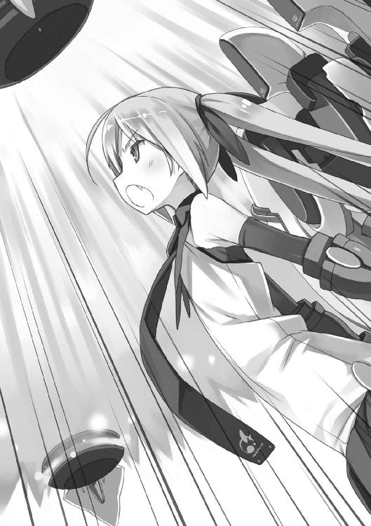
さもなくば説明がつかないほどの、普段を大きく超える力量。
何がリヒャルダをそこまで駆り立てているのか。
経緯はわからなかったけれど、結果が残る。
ついに内側から破裂する《タカミムスビ》。
ボンッと歯車が弾け飛び、赤黒い粘ついた液体が、周囲一帯に雨のように降り注ぐ。
雲一つない夏の青空に、血の雨。
その中心で、リヒャルダは、太陽を見上げていた。
小さくリヒャルダの口元が動くのを桜花は見る。
しかし声なき声で、何を言っているのかはわからない。
ただ、リヒャルダが震える拳を小さく握りしめたのはわかった。
動作だけ見れば勝利に沸いたガッツポーズ。
けれど表情は決して明るくない。
桜花は油断せず《タカミムスビ》のいた場所、その周囲を見る。
今までの《集落》は一度倒したと思って油断したところを突いてきた。それで一度痛い目を見ているのだから、油断はできない。
けれど、リヒャルダの《機巧》へ向けて赤い光の粒が──《核》が鹵獲されているのを見て、警戒態勢をとく。
勝利した。
途中、不可解なほど無茶なこともしたが、総じて見れば相手に反撃も許さないほどの圧倒的な勝利を、したのだ。
桜花の中でこの事実はたしかな自信になる。
《集落》はあと二体。
このペースでいければ、あと三日ほどで世界は救われる。
周囲の《機巧士官》──リヒャルダだけはあいかわらず、何かを思い詰めているような表情なのだが──も同じように明るい顔をしている。
未来は明るい。
これで兄の夏休みに合わせて色々なことができる──
そう思って、桜花は急に、あるとんでもない事実に気付いた。
「......私、今回、何もしてないんですが！」
ある意味で、人類滅亡よりもゆゆしき事態だった。
３
帰ってきた桜花が逃げるようにどこかへ消えてしまった。
ハンガーでぽつねんと立ち尽くす晴空。
たぶん今回、活躍していないのを気にしていたようだし、合わせる顔がないとか思っているのかもしれないと妹の行動を推理する。
どうにも桜花は強さとか活躍とかに並々ならぬこだわりがあるようだし、今回の圧勝はよかった反面、悪い点もあったのかもしれない。勝負に勝って試合に負けたようなものなのかもしれない。
ケガがなく、戦いが楽で無事に帰ってこられるのならばいいことだらけだと晴空は思うのだけれど、桜花はたまにいったい何と戦っているのかわからない時がある。
女の子って難しい。
「だからね、なんかこう、うまく言えないんだけど、桜花さんが喜ぶようなビッグバンなイベントをやりたいんだよ！」
桜花がいないのをこれ幸いと、ハンガーでは四人の《機巧士官》たちが、桜花の誕生日祝いをどうするかを話し合っている。
ちなみに晴空は車座で座る四人を一歩離れた位置から見ているわけなのだが......
「違う、違うんだよ！ せっかくの記念日なんだから、なんかそういう小さいのじゃなくって、大きいのをやりたいんだよ！」
「だから『大きいの』って何よ!? シャーロット、アンタ自分で考えつかないからてきとうなこと言ってんじゃないでしょうね!?」
「違うよリヒャルダ！ イメージはあるんだよ！ まとまらないだけで！ でもリヒャルダの言うことが違うのはわかるよ！」
「そういうのが一番困るって言ってんのよ！」
「終わったらお茶にしようね？」
「............終わるの、これ」
シャーロットが芸術家みたいなことを言って、リヒャルダが『具体的に！』と詰め寄って、菖蒲がそんな二人をすごく楽しそうに見ていて、アシュレイがつまらなさそうにしている。
昨日からこんな調子。
祝いたい気持ちばかりが先行して話がまったくまとまっていない印象である。当日に慌てて『なんでもいいからとにかくやろう』という流れになりそうな気がして怖い。
女の子って難しい。というかシャーロットが難しい。
「お兄さん何かアイディアないの!?」
難しい子から話をふられてしまった。
気配を消していたのだが、百戦錬磨の《機巧士官》相手に素人の気配遮断なんか意味なかったらしい。
仕方がないので意見の一つも言いたいのだが、何を言っても『違う気がする』とすっぱりいかれそうな予感。悩ましい。
「女の子の誕生日とか祝ったことないから思い浮かばないんだよね」
「こういう時は自分がされて嬉しいことをしたらいいんだよ！」
「そう言うシャーロットは？」
「わたしがされて嬉しいこと？ ......そうだなあ、おっきいケーキの中から桜花さんが出てきたらびっくりするよ！」
「それは誰だってびっくりするし、うちの妹はたぶんそんなことするキャラじゃないんだけれど、そもそも『嬉しい』と『びっくり』って違うんじゃないかな」
「ううん、そっかあ......実はわたしね、ちっちゃいころから訓練ばっかりだったから、何したら嬉しいとか考えるの苦手なんだよ」
「じゃあなぜ仕切ろうと思ったのか......」
「情熱があふれちゃったんだよ！」
「あふれちゃったのかー」
シャーロットと話しているとなぜか優しい気持ちになっていく晴空だった。
幼い子供と話しているような気持ちになるのだろうと自己分析。
とにかく、このままシャーロットに任せていてはいつまでも議論が終わらないだろう。
昨日もこんな調子だったので『あ、これは時間かかるな』と思い、あと《集落》が来るという話もあったので、今日は高校でやっている『記念祭』の準備を休んで駐屯基地にいたのだが、どうやら休んで正解だったようだ。
自分がどうにかしなければ、という強い使命感が晴空の中に芽生える。
「アシュレイはどう思う？」
「......なぜ、わたしに。わたし、そういうのは、不向き」
もごもごと自信なさそうにアシュレイは対応した。
本当に苦手なのだろう。それでもさっさと退出しないあたりに、以前よりも態度が軟化している様子がうかがえる。
「じゃあ、アシュレイがされて嬉しいことは？」
アシュレイ、じっと晴空を見る。
無表情な子にじっと見上げられるというのはなぜかたじろいでしまう。
「......黙秘権」
「裁判じゃないんだから」
「............とてもじゃないけど、言いたくない。......あ、言えないようなことという意味では、ない。本当に、違う。勘違いしないでほしい」
「念を押しすぎて逆に怪しく聞こえるけど、わかったよ」
「......本当に、違う、から。信じて」
「わかった、信じる、信じるから」
どうにもアシュレイに弱いなあ、と晴空は自己分析する。
遠慮があるとかいう話ではなく、下手につついたら泣いてしまいそうな、不思議な威圧感があるのだ。
というわけで話しかけやすい順番に、次の人へ話をふることにする。
「菖蒲は？」
「私？ 私は、お料理担当だけど？」
「いや、自分がされたら嬉しいこととか」
「世界平和かしら？」
「小学生の七夕の短冊みたいな......」
「とは言っても、お料理してるの楽しいのよね？ それ以外何もいらないというか、お料理が趣味というか、でも誕生日の主賓にお料理させるわけにもいかないでしょう？」
「そりゃあ、なあ」
有効な意見を出せないことを自覚していたから黙っていた、ということか。
矛先を最後の一人に変えようかと晴空は考える。
最後の一人、リヒャルダ。
話しかけにくいのは、昨日の昼間、部屋で泣かれたことをまだ引きずっているからだ。
どうしようかな、話しかけようかな、でもやめておこうかな、そんな迷い。
「なんでこの流れであたしに聞かないのよ！」
迷っていたらリヒャルダに怒られた。
たしかに一人だけ無視するようなかたちになるのも失礼な話だったなと思い、晴空はリヒャルダに向き直る。
「ごめんごめん。なんか話しかけにくくって......」
「アシュレイよりあたしの方が話しかけにくいっていうのは納得できないんだけど！」
「............わたし、別に、話しかけにくくは、ない」
アシュレイの小さな抗議の声だったが、小さすぎたのでスルーされる。
「というかさっきから一番まともな意見を言ってるのあたしじゃない！」
「でもリヒャルダの意見はハジケてないんだよ！」
シャーロットが口を挟む。
「人の誕生日ではじけてどうすんのよ！」
正論だった。
人の誕生日ははじける場面ではない。当たり前すぎて誰しもが失念していたような真理をあらためて発見したような気分だ。晴空はちょっと感動する。
「たしかになあ。普通でいいんだよな、普通で」
「普通って何よ！」
「えっ!? 俺も怒られるの!?」
「怒ってないわよ！ 普通の誕生日が何かって聞いてるだけじゃない！」
しかし声の調子とか色々が、完全に怒っているようにしか見えない。
というか顔が真っ赤である。
......ひょっとしたら、昨日の出来事を引きずっているのは自分だけではないのかも、と晴空は思う。
リヒャルダも昨日の出来事をひきずっていて、それでも『なかったこと』にしようとしているから、がんばって普通に話をしようとしているのだろう。
ならば自分も普通にしないといけない。
「普通の誕生日かあ......そうだな......ケーキにロウソク立てて、誕生日のやつはロウソク吹き消して、ケーキはお祝いされてる間に全部食べられてなくなるのが普通かな......」
晴空は男子寮で育っている。
十年前の法則更新日で両親をうしなった子供の多くは、学校が経営することになった寄宿舎で人生の大半を過ごすことになる。
学校経営の寄宿舎であるから、当然、男女は別れており、晴空は長い期間（学校は共学だったが）男社会で育った。
だから、『食べ物は油断すると奪われる』『部屋は非常に汚い』『話の内容に下ネタが多い』などの常識を持っていた。
よって誕生日ケーキを人に食べられるなどというのは『油断する自分が悪い』という類の笑い話なのだが、《機巧士官》たちは哀れむような顔をした。
「お兄さん、かわいそう......」
「食糧難かしら？」
「......わたしのケーキ、あげてもいい」
「ま、まあ、この時代だものね。アンタだってそりゃあ、辛い生活してきたんでしょうけど、その......が、がんばんなさいよ。あたしも応援してあげるから」
「あれぇ？」
反応が思ったのと違って晴空は首をかしげる。
笑いはとれないにしても、同情を誘う話題ではなかったはずなのだが。
「そうだよね！」シャーロットが語る。「ただ食べ物がある、ただ祝ってくれる人がいる......そういうのが、とっても幸せなことなんだよ！」
「そうね。私も腕によりをかけて、おいしいケーキを作るからね？」
菖蒲が腕まくりする。
「......わたしも、何か用意する」
アシュレイが静かにうなずき、
「あたしはシャーロットを抑えておくわ」
リヒャルダが決意を秘めた瞳をした。
それからは晴空が出る幕もない。四人の間でみるみる決まっていく誕生日パーティーの献立。どうやら桜花の誕生日会は豪華な食事会でささやかな祝辞を述べよう、という方向でかたまったらしかった。
こうして話はまとまり、四人の間に今まで以上の連帯感が生まれる。
自分がまとめないといつまでも話が空回りし続けるだけだからどうにかしないと、という使命感を抱いていた晴空としては、この結果は成功に他ならないのだが......
「......なんか違う」
結果は合っているのに経過が不可解で、首をかしげるばかりだった。
あと、この日以来、みんながちょっと晴空に、特に食べ物関係で優しくなった。
４
「兄さん、明日はオフ日なのでちょっと街へ出ましょうか」
「えっ」
その日の夜、自室での会話だった。
はっきり言ってすごい困る。
だって今日の誕生日会の話し合いで、まさに明日、《集落》が来ない一瞬のスキをついてシャーロットたち四人が駐屯基地の外まで買い物に行くから桜花を駐屯基地内に引き留めるという役割を仰せつけられたばかりなのである。
明日は桜花を駐屯基地にいさせなければならない。
ちなみに普段、料理などに使う材料は、専門の業者が三日ごとに運んでくれる。
週の頭に必要な分の材料を紙に書いて（この見立ては菖蒲がやっているらしい）駅と駐屯基地の中間地点あたりにあるポストに入れておくと、業者がそれを見て材料を置いて行くという、《機巧士官》と業者が接触しないシステムである。
洋服、小物をはじめとした衣類から日用品の類もこのシステムで取り寄せているようで、《機巧士官》たちがお台場の外で買い物をする必要性はまずない。
しかし今回、初めての誕生日パーティー（あんまりやってないとかじゃなく、誕生日パーティーという催し自体がなかったようだ）である。
そこで《機巧士官》たちは街で買い物をして材料をそろえよう、と思い立った。
記念日なので特別なことがやりたかったようだ。
最初、外に詳しい人間があまりにもいないので晴空を連れて行く流れになったのだが、晴空がいないと桜花が捜し回りそう、という意見で満場一致して、かろうじて外の世界を知っている菖蒲の案内のもと、女の子四人だけの出陣となった。
晴空の気分は幼い子供をお使いに行かせるお父さんだった。
とにかく明日はどうにかして桜花をお台場駐屯基地に引き留めないといけない。
外に出てニアミスを避けるというような心臓に悪い真似、したくない。
だから、言うだけ言ってさっさと寝てしまおうと横になる妹の、肩を揺らして眠りをさまたげる。
「なんですか兄さん......脱げばいいんですか......」
「肩を揺すっただけでどうしてそうなる！」
「口では言いにくいでしょう？」
「動作でも要求しにくいわ！」
「じゃあ何か、何気なくできるサインを決めておきましょうか......そうですね、いついかなる時も、まばたきをしたら『脱げ』ということで」
「おまえは俺をドライアイにしたいのか......？」
「どんなことになっても、私が兄さんの目になりますよ」
「感動話みたいにするのをやめて」
「それで、脱がせたいのでなければどんなお話で？」
桜花が上体を起こす。
離れて寝ようとしても朝起きたら隣にいるので、あきらめてこの距離で寝ることにはいい加減慣れてきたけれど、ベッドにとなりあって座って、至近距離で顔を寄せ合うというのは、未だに少しドキッとするものがある。
「いや、明日はちょっとゆっくりした方がいいんじゃないかなって。明後日にはもう次の《集落》との戦いだし、明明後日には最後の《集落》と戦うんだろ？ だったら外出なんてそのあといくらでもできるし、何も慌てなくたって」
「兄さん、落ち着いてください」
「慌ててたように見えたか、俺」
誕生日パーティーのことを隠しているので、何か透けたかもしれないと晴空はびくりとする。
桜花は神妙な表情を浮かべる。
「実は私、ずっと悩んでいることがありましてね......」
「ああ、シャーロットの様子がおかしいんだろ？ でもそれはきっと、時間が解決してくれるんじゃないかな......」
ネタバラシができないので、あいまいなくせに確信的な物言いになってしまう。
ここで『実は誕生日パーティーのために色々やってるから動きが怪しく見えるんだよ』と言えたら気が楽なのだけれど我慢。
「いえ、そうではなく、シャーロットのことは、まあ、あの子も思春期なので、そういう時期もあるだろうと理解することにしましたが......」
「......そうなのか」
「そうではなく、今日、私はまったく活躍できなかったでしょう？ そこでですよ、挽回というわけではありませんが、ここらで兄さんと買い物に出て、見せつけてさしあげようかと。そうしたら兄さんもきっと、私を手放しで褒めるはずですから」
「見せつける？ 何を？」
「私の経済力です」
「お金より大事なものはたくさんあるよ！」
悲しくて叫んでしまう。
しかし桜花、何やら考えがあるようで『聞いてください』と言う。
「金銭というのはつまり、労働の成果なのです。《機巧士官》のお給料は出来高制ではありませんが、《集落》連続撃破でさすがにボーナスをもらえることになったのです。つまりお金は強さの証なのです。ということで、今日、兄さんに活躍を見せることができず、兄さんの心に一点の曇りが生まれたかもしれませんが、私はそれをどうにかすべく、今までの戦果をお見せしようと、そういうわけなのです」
そう語る桜花は、今日の《集落》戦で何もできなかったことを、殊の外気にしている様子だった。
晴空はため息をつく。
戦い、勝つこと以外で自分の価値を示せないと思い込んでいる妹に、どんな言葉をかけてやろうかな、と少し考えた。
「考えはわかったけどさ、やっぱりそういうのはいいよ。経済力なんか見せつけなくたって、俺は桜花ががんばってきたこと忘れないし、一回活躍できなかったぐらいなんだっていうんだ。そんな、毎回毎回活躍できるわけじゃないだろ。......戦いなんだからさ」
「あと、お金で解決できるのは楽でいいなと思ったんですが」
「その発言で俺の中のおまえの株が初めて下がりそうになったんだが！」
「今まで下がっていなかったんですか!? こんなに『脱ぐ』『脱ぐ』言っているのに!?」
「『脱ぐ』発言が自分の株を下げていると感じていたんなら、どうして繰り返すんだ！」
「いえ、聞いてくださいよ」
「なんだよ」
「今まで『脱ぐ』とは言っていたものの、兄さんが止めるのもあって、それらはだいたい脱ぐ脱ぐ詐欺に終わっていました。しかし気付いたのです。『嫌がっているポーズはとっているものの、本当は脱がせたいのではないか』と」
「......」
絶句である。
開いた口がふさがらないのに言葉が出てこない。
「私はあまり外の世界のことを知らないで育ちましたから、男の人には体面とかプライドとか世間体があって、兄さんが今まで私が脱ぐのを止めていたのも、そういったものが理由なのかな、と先ほど、唐突に気付いたのです。お風呂場での出来事でした」
「気付いた経緯を一応聞こうか」
「姿見に映る私の裸身が美しかったんです。見たくないはずありませんよ、あんな美しいもの」
「......さて、話し込んで悪かったな。そろそろ眠ろうか」
「どうして聞かなかったことにするんですか!? 私は真面目なのに！」
かける言葉もないからだった。
桜花の裸身が美しいのは、じっくり観察したことこそないが、否定する要素が見つからない事実ではある。
しかし自分で言っちゃう桜花は、男心を理解していない。
さりとてここで男心を桜花に説くわけにもいかない。その先にはきっと、桜花が実際に脱ぎ出すという分の悪い展開が待っているだろうという未来を、晴空は二週間の共同生活の経験によって明確に予想できてしまうのだ。
「もう、みんなしてなんですか、私と話すのを避けるように......いいですよーだ。明日はみんな出かけるみたいですし、続きは明日、ゆっくり話し合いましょう。一日中駐屯基地にいるなら、それこそ時間はたっぷりありますしね」
聞き逃せない不吉なつぶやきを残して、桜花がぼすんと横になる。
明日はやっぱり外に行こう。
晴空は意見をひるがえした。
ニアミスする可能性もあるだろうし、そもそも《機巧士官》を衆人環視のある外の世界に連れ出すこと自体がかなりリスキーでもあるのだが、そのリスクも、一日中ずっと同じ空間に二人きりでいることに比べたらマシだろう。
......世界が救われたあと、《機巧士官》という役割を終えた桜花と、兄妹二人で暮らすことになったらどうしようかなと考える晴空。
それぐらい世界の救済は間近に迫っていて、その救済の予定になんの心配も抱かせないほどに、《機巧士官》は強かった。
５
翌昼、妹に怪しい格好をさせて外に連れ出した。
コーディネイトした自分でもどうかと思う仕上がりに、晴空は思わず笑う。
季節は真夏。
お台場国鉄（旧ゆりかもめ）に乗って都心部に出れば、人混みと太陽光で体感温度は三十六度を超える。
息苦しいほどの暑さの中、奇妙にぽっかりと自分たちの周囲だけ空間の空いた交差点を、桜花と晴空は進んで行く。
すべて桜花の服装が原因だ。
長袖のブレザーはいつものこととして、さらに頭にはニット帽、口元までを覆うマフラー、そして極めつけになぜか両手にはミトンの手袋という完全防寒装備。
不審人物以外の何者でもなかった。
晴空はごめんよ、と心の中で桜花に詫びる。
何せこの服装を指示したのは晴空なのだった。
だって《機巧士官》は目立つ。
最近《集落》墜としまくり、ニュースになりまくり、非公式撮影写真出回りまくりの状況下、まともに顔を出して人通りの多いビジネス街を歩こうというのは無理のある話なのだった。
だから晴空なりに妹を変装させてみたのだけれど、人を変装させるにはセンスが必要だということを、今現在、思い知っている次第である。
「......兄さん、一言いいでしょうか」
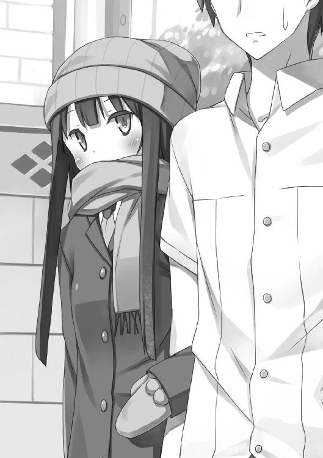
駅前の交差点を渡り終えて学校へ向かっていく。
晴空はうらみがましい、あるいは暑さでゆだっているような桜花の口調におそるおそる振り返る。
桜花の背後には、今出てきたばかりの駅が見えた。
晴空の通う学校は昼時であれば週末だろうがなんだろうが混み合うビジネス街にあり、駅前の混雑はそれこそ特売用ピーナッツかよと思うぐらいにぎゅうぎゅう詰めだ。
だからその交通の便を大きく担っている駅もさぞや大きいのかと思えば、そんなことはない。
実際、十年前までは大きな駅ビルがあった。
しかし現在、その駅ビルは《異界人》の攻撃のせいで大きな杉の木と化しており、花粉症の人間からの怨嗟を一手に集めている。
今、駅として利用されているのは、幾分急造感が否めない、券売機と改札、あとは自動販売機ぐらいしかないような小さい建物で、かつての駅から百メートルほど離れた場所にある。
ちょうど山手線駅で言えば新橋～渋谷間あたりまでが《異界人》の襲撃を受けた地域であり、十年前に何かの奇跡で日本を襲撃した《集落》の一体が墜ちなければ、最前線はお台場駐屯基地ではなく恵比寿や秋葉原あたりになっていただろう。
......そうだ、人類は《機巧士官》という兵器を開発する以前に、すでに一体、《集落》を撃墜している。
にもかかわらず『どう墜としたのか』『その撃墜例から導き出される有効な戦術とは』といったことがあまりにも取り沙汰されなさすぎる現状は、一体目の《集落》撃墜について不明な点が多すぎるからだ。
当時、現場を目撃していただろう人物は、大半がコンクリートブロックに変質させられているか、記憶を喪っている。
監視カメラなどの映像も変質により閲覧適わず、記憶がある人間の持ち寄る情報も『本当に同じ《集落》撃墜についての話なのか』と疑ってしまうほど、それぞれがバラバラな証言であり、使い物にならない。
最初の《集落》が撃墜された時の、はっきりしていて信憑性のある記憶なり記録なりが残っているならば、《機巧士官》だけに《集落》撃墜を任せなくてもよくなるはずなのだが、現実は非情である。
「兄さん」
「あ、はい。話ですよね、どうぞ」
駅を振り返りながら思いにふけってしまっていた。
別な言い方をすれば現実逃避である。
だって妹から立ち上るオーラが尋常じゃない。湯気かと思う。あるいは本当に湯気なのかもしれない。長袖ブレザーで汗一つ浮かべない桜花とは言え、ニット帽とマフラーはやりすぎだったかもしれない。かもしれないっていうか、明らかにやりすぎだ。
怒っているのか暑くて意識がもうろうとしているのか、桜花の視線が怖すぎる。
しかし桜花はまだ話を続けない。
駅からしばらく歩き、歩道橋をのぼる。
桜花は歩道橋を渡る間、ずっと黙っていた。狭い歩道橋なのだ。桜花は小柄な方だが、二人横に並んで歩いては正面から来る人の邪魔になるし、学校は夏休み、世間は日曜日というような休日とは言え、昼時のビジネス街は人通りが多い。
歩道橋を下りて、横に並ぶ。
学校前のなだらかな坂をのぼりはじめたタイミングで、ようやく桜花が二の句を継いだ。
「兄さん、このままだと兄さんの学校に着きますよね」
「そうだな。いや、考えたんだけど......」
考えた、というのは、桜花と（危険なので）二人きりにならないで済む環境にいることができて、あと本来これが一番重要なのだが、桜花の誕生日パーティーの準備をしているシャーロットたちとニアミスしない場所についてだ。
お台場駐屯基地は論外すぎたので外出するのは間違いなかったのだが、晴空もこの時代の学生のご多分に漏れず、だいたい繁華街と学校と学生寮を行ったり来たりする毎日しか送っていなかった。
もちろん、この時代だってマメなやつは女の子を連れて行って喜んでもらえるような場所を心得ているのだろうが、晴空が繁華街で行くところと言えば、カラオケとか、映画館とか、そういう男女関係なく行くような普通の場所しかなかったのだ。
よって晴空は結論する。
「......桜花を連れて行くのに普通の場所しか思いつかないんなら、俺にとって一番『普通』な、毎日過ごしてるような場所に連れて行こうかな、ってさ。ほら、《機巧士官》のみんなは『普通の』学校生活はしてないんだろ？ だから、喜ぶかなって」
「どうして最初に行き先を告げないんですか」
「いやほんと、そのことについてはうっかりしていたというか、どう変装させてバレそうになったらどう誤魔化そうかで頭がいっぱいだったというか」
「連れて行くのに行き先を告げないなんて、まるで私みたいですね」
そういえばお台場駐屯基地に連れて行かれる際に、なかなか行き先を教えてもらえなかったことを思い出す。
あの時の桜花も今の自分みたいに頭がいっぱいいっぱいだったのかと思うと、微笑ましい気持ちになる晴空だった。
「というわけで行き先は学校だ。今は『記念祭』の準備でみんな忙しいから、俺のジャージにでも着替えればみんな気にしないと思うけど、一応、《機巧士官》だってバレないように桜花の方からも配慮してほしい」
「少し疑問なのですが、バレるとどうなります？」
「たぶん《機巧制服》で一掃したくなるぐらいの数の人間が桜花に向けて押し寄せる」
「なるほど、理解しました」
それで理解できちゃうあたりに、桜花が普段から戦いしかしていない様子が透けて悲しくなる。
が、理解してくれたならそれでいいや、と晴空は神妙な顔つきでなおも言い含める。
「だからバレないように振る舞ってほしい。バレそうになったら俺に任せてくれ。色々考えてきてはいる」
「わかりました。......しかし話を聞くに、兄さん、私は感動しています」
「感動？」
正体がバレた時にもみくちゃにされるぞ、的な話しかしていないのだが、どこに感動する要素があっただろうか。
「そこまでのリスクを払ってなお、私を学校に連れて行こうとしてくれているのですね」
「リスク......まあ、リスクは払ってるかな」
それでも、繁華街に放ったりするよりは、バレる確率、シャーロットたちとニアミスする確率、ともに低めの、結構リスクマネジメントをがんばれている判断なのだが......
たしかにお台場駐屯基地でただ過ごすより、リスクが高い行動なのは否定しない。
桜花は目を輝かせて祈るように天を仰ぐ。
「ああ、学校......たしかに、興味はありました。数多の漫画で舞台に選ばれている学校ですものね。きっと色々な素敵イベントがあるに違いありません。今まで学校に通っていないことなど大して気にもしていませんでしたが、いざ行くとなるとやってみたいことがたくさん思い浮かびます」
「ははは......あんまりはしゃぎすぎるなよ」
本当に。
桜花がはしゃぐたびに正体発覚の確率がはねあがるので気が気じゃない。
「最初、マフラーとニット帽と手袋を装備させられた時は、初めてのデートなのになんて格好をさせるんでしょう、これからシベリアにでも行く気なんでしょうか、イヌイット体験でしょうか、などと思ったものですが......」
「変装については、もう少しどうにかできたような気がするので本当にごめん」
「兄さんのジャージに着替えてこっそり学校見学！ あ、ジャージは参加特典としていただけるんですよね？」
「欲しいのか!?」
「男の人だって、好きな女子の体操着を盗んだりするのでしょう？」
「盗まない盗まない！ さも常識であるかのように妙なことを口走るな！」
「兄さんのワイシャツは何着かいただいていますが、ジャージは初めてです」
「最近俺の服が減っている原因がわかったので、帰ったら話し合うことがたくさんありそうだな」
「たしかに、兄さんの衣類の何割をシェアしてもらうかについて、比率はしっかり決めておいた方がいいかもしれないですね」
「『割』!? おまえは俺の服を数十パーセント単位で奪っていく気か!?」
「端数は物理的に切り捨てますので、長袖が半袖に、半袖がタンクトップになったりするかもしれませんが......」
「タンクトップのワイシャツとか学校に着て行きたくねーよ！」
今着ている制服だけはなんとしても死守しなければ、と晴空は体を抱いた。
桜花が《機巧士官》だとバレることの危険性について説いていたつもりが、自分の衣類が危険な目に遭っている事実が発覚してしまう事態に陥っている。
桜花と出会ってから人生が予想外すぎる。
このまま進んで行ったら見慣れた学校はなくって、代わりに変形した学校が怪獣と戦っている異常事態まで想像した。
しかし学校は普通にあった。よかった。世界はそこまで壊れていないらしい。
すでに多くの学生が学校内で準備を始めているようで、校門の向こうに見える校庭で数多くの生徒が資材や布などを持って行ったり来たりしているし、校門側が空いた『コ』の字型校舎からも、なんとなく喧噪が聞こえる。
「桜花、校門あたりの目立たない場所にいてくれ。俺は急いでジャージ取ってくるから。知らない人に何かを聞かれても、てきとうにあしらえよ？ 絶対について行くなよ？」
「兄さん見てくださいよこの校門！ 低い！ 対空防御はどうなっているんですか!? 高射砲はどこに!?」
「おまえがはしゃいでいるのが痛いほど伝わってきて、兄さんはとても不安なんだけれど、頼むから大人しくしててくださいお願いします」
「はしゃいでません。私は冷静です。ただほら、学校という建物の防衛力をプロの見地から判断しただけで......あ、兄さん！ 向こうに見えるのが『下駄箱』ですね!? ラブレターとか画鋲を入れるスペースですよね！」
「おまえ、前に一回学生寮には来ただろ！ 下駄箱ぐらい見ただろ！ 日本語的に『下駄』の『箱』だってわかるだろ！」
「い、いえ、だって前は空から来ましたし......最初はどうおどろかそうかばかり考えていて、周りが見えていなかったと言いますか」
もじもじする桜花。
普段は冷静で頼りがいのある妹なのだが、オフ日だからかやけに年相応な態度である。
仕方ないなあと思いつつも、やや不安。
「本当に頼むぞ？ ちょっとでいいんだ。ジャージに着替えて中に入ったら、みんな『記念祭』準備で騒がしいから、多少はしゃいでも大丈夫だから、それまでは、どうか大人しくしててくれよ？」
念を押せば、桜花は学校内のどこかに視線を向けたまま、壊れた人形みたいにコクコクうなずいた。
こんなに信頼のおけない首肯は初めて見る。
幼い妹に一人で留守番をさせるのはこんな気持ちだろうかと思いつつ、晴空は校門から校舎内に入っていく。
猛ダッシュである。
一刻も早くジャージを回収して、一秒でも早く桜花のもとに帰りたい。今の桜花はまるで幼児だ。興味がある物を見つけたらふらふら吸い寄せられかねないし、学校という空間は桜花にとって魅力的なおもちゃ箱のようなものだった。
だから可能な限り最速で、晴空は学校内を駆けていく。
校庭を突っ切って下駄箱で乱暴に上履きに履き替え、階段をのぼって自分のクラスへ。
あいさつをしようと片手を挙げた友人の目の前を疾風の如く通り抜け、教室後ろのロッカーからジャージの入った巾着袋を取り出して先ほどのぼった階段を二段飛ばしで駆け下りる。
外履きに替えるのももどかしく上履きのまま校門の外へ出て、せいぜい二、三分ほどだが放置してしまった妹を捜す。
桜花の姿は消えていた。
「......ジーザス」
使ったことのない言葉が喉奥から漏れてきた。
しばし呆然としてしまうが、立ち尽くしてもいられない。
妹を捜さなければ。
桜花に限って誘拐などの危険性はないはずだが、さっきのはしゃぎようを見ているとどこかのクラスにふらふら入って、うっかり正体をばらしそうではある。
頭の中で情報を整理。
たしか一年Ａ組のメイド喫茶と三年Ｃ組の和風喫茶が即戦力となるかわいいウエイトレスを節操なく探しており、この二クラスのスカウト担当が来ると『マンハンターだ！ 女子を隠せ！』と厳戒態勢に入っていた。
桜花が拉致された可能性は高い。
そもそも現代の文化祭は商売実習の側面も兼ねている。
都心部の大人が減ったために高校生でも優秀な人材は企業にスカウトされる時代だ。文化祭などの『実際の金銭を取り扱う経営・商売の実習』では多くの生徒が大なり小なり力を入れており、有能そうな人材はクラスを問わずに引き抜かれる人材戦国時代。
夏場なのにマフラーとニット帽で顔を隠した、明らかにどこのクラスにも所属していなさそうな女の子が校門前にいたら拉致される確率は決して低くなかったはずなのだ。
夏場にあんな格好してるような奇人には誰も近付かないだろうとタカをくくっていた。
桜花には言い聞かせたから簡単に人のあとについて行かないだろうと安心していた。
「桜花を取り戻さなければ......」
決意を新たに晴空は校舎内に戻っていく。
とりあえず一年生のクラスから、順番に全部を猛ダッシュで回っていく予定だ。
こうして晴空の戦いは始まる。
願わくば桜花が《機巧士官》だとバレる前に発見したい。
最後に飛んで逃げるしかなくなるようなオチだけは避けたいところだった。
６
「......って一瞬でバレてるじゃねーか！」
晴空の通う高校の校庭には、朝礼の時などに校長が乗る台がある。
他にも体育祭の時に選手宣誓に使ったり、なんらかの部活動がいい成績をおさめたりすると部長が代表して乗る、三十年選手とも四十年選手とも言われている、古い、木製の台だ。
土のグラウンドの上にあるその木製の台は、古いこともあり、そこかしこに入ったヒビの間に砂が詰まっている。
この高校は朝礼の時にかなり静かに校長先生のお話に耳をかたむけるのだが、それは校長先生の話がためになるからでもなく、生徒が礼儀正しいからでもなく、校長が乗っている台が今この瞬間にも壊れるんじゃないかとみんなが不安がっているからなのだった。
そんな歴史ある、いつ壊れるかわからない木製の台に、桜花が乗せられていた。
マフラーもニット帽も手袋もとられている。
桜花の横にいる女子は、放送委員だったか。
機材を準備し、マイクチェックを始める放送委員。
なんだなんだと『記念祭』準備で忙しくグラウンドを走り回っていた生徒たちも、教室内で準備をしていた生徒たちも、あるいは足を止め、あるいは窓を開けてグラウンドをながめた。
次第に広がっていくざわめき。
最初、ざわめきは戸惑いの色が強かった。
『あれ誰？』『なんか見たことあるような』『アイドルか何か？』『なんで長袖？ 日焼け対策？』『おいどこのクラスだ調べろ』
どこかで見たことはある。
かわいい。
でもどこで見たか思い出せない。
つぶやきはそんな調子だった。
誰かが気付く。
『《機巧士官》じゃないかアレ』
ざわめきの種類が変わった。
『あ、アレ、アレだ！』『テレビで見たことある！』『アイドルか何か？』『え？ 昨日ニュースで《集落》墜としたって言ってなかったっけ？』『なんでうちの学校に？ 慰問か何か？』『なんでうちの学校が慰問されるの？ うちの学校何があるの？』
まだ『風早桜花』という名前は出てきていない。
《機巧士官》は人気者だが、世間に出回っている映像資料が乏しいこともあり、《機巧士官》は知っていても《機巧士官》一人一人の顔と名前が一致するほどの者は一部の好事家ぐらいなのである。
ともあれ目的も名前もわからないでは盛り上がりようもない。
まだまだ場は混乱している。
だから晴空はこの時、さっさと走って桜花をさらって学校から出て行こうかと考えた。
しかし考えたのがいけなかった。『これに話せばいいんですか？』『そうそう』みたいな会話がマイク越しに聞こえたあと、桜花が発言する。
「どうもみなさん、風早桜花と申します」
《機巧士官》の顔と名前を頭の中で一致させられる者は少ないが、名前を聞けばそれが《機巧士官》であることは確実に全員の知るところとなる。
また、《集落》撃墜直後で、ニュースなどで大きく取り上げられていたため、普段は興味ない人でも《機巧士官》の名前がわかる状況だった。
桜花の自己紹介で静まり返る場。集まる注目。全員が動きを止めて広がる静寂。
無意識の連帯感の中、空気には妙な緊張感があった。その緊張感は、指一本動かすのもためらわれるほどの重圧となって晴空を縛り付ける。
晴空は前に出る機会をこうして逸した。
桜花が言葉を続ける。
「実は兄とはぐれてしまったので、兄を捜しています。......本当は校門の前で待っているように言われたので、私としては兄の言う通りにしていたつもりなのですが、なぜか気付いたら校舎の中におりました」
案の定ふらふらと学校内にさまよって来てしまったらしい。
周囲からちょっとだけ笑い声があがる。
桜花は恥ずかしそうに咳払い。
「それで、偶然にも声をかけてくださった放送委員の方に素性と事情を話しましたところ、校内放送で呼び出していただけるということになりまして......校内放送をしていただく交換条件として、『記念祭』準備をがんばるみなさんの激励をしてほしい、ということだそうです。それにしても校内放送とは目立つものですね。少し恥ずかしいです」
それ校内放送じゃねーから！
妹が悪い女（放送委員）に騙されている。
「ええと、激励というのは何をすればいいのかわからないのですが──え？ 歌？ そういうのはないんですが......飛んでみせる？ いえ、私用での《機巧制服》搭乗は禁止されているので」
前に思いっきり私用で《機巧制服》を使っていた気がするし、空中引き回しの刑に処された記憶がある晴空だったが、そのあたりあとで話し合うことにして、今は飛び出すタイミングをうかがうことに集中する。
なおも桜花へ何かを言わせようとする放送委員の耳打ちは続いている。
「はあ、約束？ どんな？ ......なるほど。それなら、兄から予定を聞いて以来そのつもりなので大丈夫です。......あ、はい。そうですね、失念していました。終わったらきちんと兄の名前もみなさんに言いますね」
耳打ちなのにマイクオフにしないで会話するものだから八割ぐらい筒抜けである。
とにかく何を約束させられるのか不安でたまらない。
晴空は人波をかき分けながら、ゆったり、飛びかかれる距離まで近付いていく。
気持ちは焦っていた。桜花が何を約束させられるかわかったもんじゃない。悪い契約に妹が捕まる前にどうにかしたいので、約束を口に出す前に飛びかかりたかった。気分はほとんど珍獣ハンターである。
「これが激励になるかわかりませんが、約束します」
晴空はダッシュする。
しかし間に合わない。
「戦いが終わったら、仲間も連れて『記念祭』の見学に来ますので、その時はどうぞよろしくお願いいたします」
ぺこりと頭をさげる桜花。
晴空は足を止める。......よかった、変な約束させられないで。これで妙な契約でも結ばせていようものだったら、放送委員を拉致してお説教までありえた。
まあ、激励ぐらいならいち学生としてありがたいし、もともと全部の《集落》を墜としたら全員で『記念祭』に来るとは言っていたのだ。
コソコソ隠しながら連れ込むよりも、学校側も知っている公式イベントにしてしまった方が、《機巧士官》たちも遠慮なく『記念祭』を楽しめるだろうし、騒ぎも結果的には小さくて済むだろう。
まったく、一時はどうなるかと思ったが、終わってみればさほど大したことにならずに済んでよかった。
あとは名前を呼ばれたあとで桜花を迎えに壇上まで行けばいいかなと晴空は考える。みんなに見られて多少恥ずかしい気はするが、そのぐらいなら必要経費というやつだ。
だから晴空は大人しく足を止めて、桜花が自分の名前を呼ぶのを待とうとするのだが。
「え？ 水着を着る？ なんで？」
またしても放送委員から耳打ちされた桜花のつぶやきに、再びダッシュを始めた。
「はあ、『記念祭』は全員水着で行うんですか？ 開催は九月なんですよね？ 寒くないんですか？ なんの意味があるんですか？ ............なるほど、たしかにリオのカーニバルなんかは水着のような格好で行いますし、真冬にふんどし一丁で行われるお祭りもありますね。祭りに『なぜ』を聞いてはならないと。おっしゃる通りです。伝統ですものね」
『記念祭』の開催は、今回が第一回なんですが。
伝統も何もない催しなのに、妹が『伝統』という言葉でごり押しされかけている。
ちなみに晴空の知る『記念祭』の知識の中に、『全員水着で参加すること』なんていう決まりはなくって、放送委員がなんらかの目的、たぶん趣味で桜花に水着を着せようとしていることは明白だった。
誰か止めろよ。
いや、誰も止めようとするわけがない。
自分しか桜花を守れない！
晴空は足を速める。
「マイクに向かって水着を着てくることを約束すればいいんですか？ いえ、でもそういうドレスコードならわざわざ約束しなくとも......え？ しきたり？ 普通の学校では当然のように思えることでもいちいち宣言するもの？ はあ、そうなんですか。本来生徒会長がやる役目なんですね。それはどうもわざわざやらせていただいて......」
「そんなしきたりはありえない！」
たどりついた。
木製の台によじのぼって、放送委員と桜花の間に割り込む。
それから桜花の肩をつかんで、晴空は叫んだ。
「怪しめよ！」
「あ、兄さん」
「『あ、兄さん』じゃない！ あれほど校門前から動くなって言ったろ!? ちょっとだけだから待っててって言ったろ!? どうしてたった数分大人しくしてられなかったんだ!?」
「いえね、どこかの窓からヒラヒラした輝く物体が舞い落ちるのが見えたんです。その時、考えるより先に撃墜したくなって」
「学校に《異界人》はいない！ おまえらが水際で食い止めてくれてるだろ!? もっと自分の仕事ぶりに自信を持てよ！」
「はあ、しかし動いてしまいまして。途方に暮れていたところを、こちらの放送委員の方が......いい方ですよ。道に迷っていた私の相談に、親身になって乗ってくださいまして。そればかりか、お台場駐屯基地のことまで根掘り葉掘り」
「ただ取材されただけじゃねーか！ とにかく逃げるぞ！ このままだと強制的に水着参加させられることになるから！」
「でも伝統としきたりが......」
「初開催の学園祭に伝統もしきたりもねーよ！ 普段は頭回るのにどうして一般常識についてだと思考を止めるんだおまえは！」
「でも兄さん、一般常識的に考えて、初めて会ったばっかりの相手にいきなり『次に会う時は水着を着てきてほしい』と言うなんて、それがただの趣味だとしたら、普通の人間の所業とは思えませんよ」
「ごめん、それについては俺が悪かった。ここにいるみんなは、今ちょっと普通じゃないんだ。祭りの準備でテンションが高いんだ。だからよくないことになる前に帰ろう。一刻も早く」
とにかくおさまりがつかないので、晴空は桜花の手を引いて壇上から駆け降りる。
このまま校庭を走って突っ切り学校外まで脱出しようとするのだが、問題が起こった。
『つかまえろー！』とマイクに向けて叫ぶ放送委員。
普通であれば『何を言ってるんだ君は』となるが、祭りの準備で妙にテンションが高い生徒たちは、生存者をかぎ分けたゾンビのように桜花と晴空に向けて進軍を開始する。
その物量たるや、三歩も進まないうちに進路がすっかりふさがれるほどだった。
「......一掃してえ」
同じ学舎に通う同胞たちを見て晴空が漏らした感想がそれだった。
ここで桜花が『やりますか』と請け合ったら引き金を引かせていた気すらする。
しかし今日の桜花は妙に常識的だった。
「兄さん、人は銃で撃たれると死ぬんですよ」
「知ってるよ！」
「それにしても学校に来てからの兄さんは妙に元気というか、乱暴ですね。普段からそのぐらいでも、私は全然かまわないのですが」
誰しもホームでは元気になり、アウェーでは縮こまるものなのだった。
駐屯基地をホームと言うには、まだまだ経験値が足りない。
それにしても身動きがとれないことはなはだしい。
『あれ』だけは避けたかった。
桜花が学校やその周辺施設に顔を出すたびに『そう』していたら、なんかもうお約束とかルーチンワークになってしまって、次からも毎回『そう』しなければいけないような運命力が働く気がしてイヤだった。
しかし周囲は人に囲まれ身動きがとれない始末。
一掃しようにも相手は人間。人間は、銃で撃たれたり、爆発されたりすると、死ぬのである。人殺しはよくない。
というわけで晴空は『最後の手段』を桜花に指示する。
「桜花、飛んで逃げよう」
「ですが兄さん、私用で《機巧制服》に搭乗するのは禁じられているので、やってしまうと相応の罰則があるのです」
「さっきも思ったけど、前、夜に俺を学生寮から連れ出した時があったよな？ 私用で」
「その話は都合が悪いので無視しますが、というわけで兄さん、何か罰則というデメリットを負うに値するメリットが欲しいのですが。たとえば何かご褒美とか」
「おかしいなあ......俺、おまえのために脱出を提案してるんだけどなあ......」
流れがおかしい。
しかし迫る学友たちの魔の手。このＢ級ゾンビホラーみたいな状況から抜け出すには、空を飛ぶというウルトラＣは必要不可欠。
晴空は決断する。
「わかった。わかったから、飛んでくれ」
「ハネムーンにハワイまで？」
「逃げるのにお台場までで！」
ちょっと不満そうに唇をとがらせながら、桜花が搭乗を開始する。
胸から飛び出す歯車製の心臓。
体の周囲をなぞるように、その心臓──《機巧》が巡っている。
手甲がつき、足甲がつく。
服装がタイトなワンピースに変化する。
背中には大きな機械製の翼と長大な兵器がついて、最後に頭部には動物の耳のような、アンテナが装着された。
《機巧制服》。
それは人類が《異界人》という天敵に立ち向かうために、適合する少女たちの心臓を取り出し、《機巧》を移植するという大手術を経てようやく身につけるに至った最先端にして最強、最高峰の兵器。
その兵器で今、ただの一般人から逃げるためだけに、風を起こし空を舞う。
瞬時に上空五十メートルほどに飛び上がる。
埒外の急加速。通常であれば、訓練していない晴空など発生したＧにより内臓系統に異常をきたしているであろう急制動。
地上も同じで、人間大の物体とはいえ、これだけ唐突に飛び上がればその時に発生する烈風により目も当てられない大惨事が発生しているべきだった。
しかし地上には多少強い風が吹いた程度で、抱きかかえられている晴空にはなんら負担はかからない。
つくづくトンデモ兵器だなあと思いながら、晴空は遠ざかる地上をながめる。
視線を向けたその瞬間だけは学友たちがこちらを見上げているのがかろうじてわかったが、あっという間に遠ざかってしまい、もうすっかり見えなくなる。
真っ昼間の街。
人通りの上空を駆け抜ける。
「......ニュースになりそうだなあ」
晴空は胃が痛かった。
それよりも、だ。
「......その、なんだ。俺のせいかどうかは不明だけど、バタバタさせて悪かった。明日、明後日と《集落》との連戦があるから、士気の回復──というか、ちょっとでも元気づけたり楽しませたりしたかったんだけど」
桜花と二人きりになるのは自分の身が危険だと思った──というのはもちろん、九割ぐらい冗談でしかなくて。
買い物をしているシャーロットたちとのニアミスを避けるという目的も、行動の後押しぐらいにしかならなくて。
前に食事の席で桜花が『外の世界』の話に興味をもっていたのを晴空は覚えていたから、あまり活躍できなくて元気がなかったようだし、連れて行って、元気づけてやりたかったのだ。
でも、結果だけ見れば大失敗だろう。
バタバタして、オタオタして、結局空を飛んで逃げる羽目になっている。
悪いことをしてしまったなと思う晴空に、桜花は笑いかけた。
「大丈夫ですよ。兄さんが気遣ってくれただけで、私は元気になりましたから」
「......それはかなり、俺に気遣った感じの感想だよな」
「兄さんは空に来るとネガティブになりますね」
「そうかもな。空はまぶしくって、どうにも暗くなる気がする。建物とか木陰とかさ、隠れる場所がないのは不安だよ」
「隠れる場所もないですけど、隠す相手もいないんですから、別にいいでしょう、暗くならなくたって。空は私のものです。私は兄さんを歓迎しますよ」
晴空は笑った。
桜花が首をかしげる。
「何かおかしかったですか？」
「いや──」
今の笑みは隠したかったけれど、抱き合うように桜花に支えられているので、表情を隠すことはできない。
別に、桜花の発言がおかしくて笑ったわけではない。
頼もしかった。
まるで自分が空の主であるかのような途方もない大言壮語のくせして、とんでもない説得力だったから、つい、笑ってしまったのだ。
「──頼りになる妹だよ、本当に」
表情を隠せなかったので、晴空は心情を吐露する。
「そうですよ。私は頼りがいがあって、頼られるのが好きなんです」
「頼られてばっかりだと折れそうにならないか？」
「そういう時は、兄さんがいるでしょう？」
迷いなく言われて、
「......ああ、そうだな。そうだった」
つい請け負ってしまった。
「だから兄さん、私の空では隠し事もネガティブもいらないですよ。正直に、真っ直ぐでいてください」
「ああ」
空の上では妹に抱きついていないと真っ逆さまという情けないありさまだが、地上に帰ったら、せいぜい頼れるお兄ちゃんになろう、と晴空は思った。
「というわけで昨日の話の続きですが」
「昨日の話？」
「兄さんも本音では私の裸が見たいんでしょう？」
「......」
地上に帰ったら、まずはお説教かな、と晴空は思った。
７
シャーロットたちが帰ってきたのは、夕方になってのことだった。
慌てて食事の用意を始める菖蒲とアシュレイ。
それを見送って桜花と話をし出すシャーロット。
夕食前の時間、晴空は手持ちぶさただ。
最近までは連日のように『記念祭』の準備で夜遅くまで学校に残っていたこともあり、夕食前のわずかな時間をどう過ごしていいか晴空はまだルーチンを構築できていない。
そろそろ晴空が食事当番を担当する日も来そうな感じではあるが、その前に《集落》が全部撃墜されたら、彼女たちはどうなるのかな、と少し考えてしまう。
彼女たちも学校に通うようになるのだろうか？
現代では学校に通うのはイコール寮生活をすると言ってもいいぐらい、寮のない学校というのは珍しいし、学校も近場の寮で生活していることを前提としたスケジュールを言い渡してくる時代だ。
だから《機巧士官》とは言え、学校に通うようになったら、その学校の寮で生活するようになるのだろうか。
そうなったらこの世間知らずな子たちを社会に叩き出す羽目になるのだろうか......
そこはかとない不安が晴空の心をさいなむ。
そんな時だった。
「ちょっと時間ある？」
リヒャルダに呼び出され、晴空はハンガーに行くことになる。
出撃のない日、しかも夕食前のハンガーは桜の樹海なみの内緒話スポットだ。
まず誰も訪れないこの場所に呼び出したということは、前の話の続きだろうか、と晴空は直感する。
......そういえば、リヒャルダには『桜花と離れてほしい』みたいに言われていた。
しかし話の流れのせいもあって桜花と今日一日二人きりで過ごすことになってしまっていた。
ハンガー入口にほど近い場所で、晴空はリヒャルダと向かい合う。
「呼び出して悪かったわね」
人がいないがらんどうのハンガー内では、声がよく響いた。
入口から差し込む夕日がリヒャルダの全身を赤く照らしている。小柄な体、セーラー服、ツインテールの銀髪、何より真っ白な頰まで、赤い。
視線は泳いでいて、腕を組んでいて、顔にはどこか焦りというべきか、追い詰められているような、妙な雰囲気が見える。
なぜ、そんな表情をしているのだろう。
残り二体の《集落》が迫っているとは言え、昨日の戦闘結果を見ても展望は明るくて、しかも昨日、一番活躍したのは、目の前のリヒャルダなのに──
「......何か暗い顔してたけど、考え事？」
呼びかけられてハッとなる。
「いや、考え事っていうか──さっきは、ちょっと、みんなのこと考えてた」
「みんなっていうのは......あたしたちのこと？」
「そう。ほら、もうすぐ全部の《集落》が撃墜されるじゃないか。それでさ、全部終わったら、《機巧士官》のみんなはどうなるんだろう、って」
「......全部、無事に終わったらね」
「こんな世間知らずな子たちを外の世界に放って本当に大丈夫かな、って」
「アンタ、随分言うようになったわね！」
実は今日、シャーロットたちが《機巧士官》だけで買い物をしているというのも、かなりハラハラしていたのだ。
桜花の世間知らずぶりを目の当たりにしてしまったので、昼に駐屯基地に帰ってきてからずっとそわそわしていた。
桜花と何か話したような気がするのだが、最初にお説教をしたあたりでシャーロットたち大丈夫かしらと思ってしまったため、それ以降に桜花と何を話したか曖昧なぐらいだ。
「でも無事に帰って来てくれてよかったよ。最悪、昼に都心部の空で会うかなと思ってたぐらいだし」
「都心部の空!? 桜花飛んだの!? 街で!?」
「あ、いや、ちょっとだけだよ。駅からは電車で帰ってきたし」
「何があったのよ......あたしたちだって、飛ぶのはさすがに控えたのに」
「やっぱり空を飛んで逃げるしかなくなるような事態には陥ってたのか......」
「ハッ!? ちが、違うのよ!? ただちょっと現金での買い物になれてなくって、ファーストフード店で食い逃げと間違われそうになったっていうか」
「料金先払いのファーストフードで食い逃げと間違われそうになるって、それ一体何をしたのか気になるんだけど」
「とにかく、菖蒲が日本円を持ってたから大丈夫だったの！ あ、あ、あたしたちのことはいいでしょ!? 問題なかったわよ！ 買いたい物も無事に買ったわよ！ あたしは、食べ物と間違えて石鹼買ったぐらいしか失敗してないんだから！」
「ああ......繁華街の方にあるよね、おいしそうな石鹼置いてる店......」
話を総合するに、昼に晴空がいた学校と、シャーロットたちがいた場所とは駅一つ分ぐらいしか距離がなかったことになる。
しかも都心部の『駅一つ分』はだいたい徒歩で二十分とかそのぐらいなので、よくもまあ会わなかったもんだと晴空は感心した。
「それより、話よ！」
「あ、はい」
リヒャルダがダイナミックに話題転換をしたので、晴空も付き合うことに。
咳払いをして、リヒャルダは表情を真剣なものにする。
「......前にあたし、色々気になること言ったじゃない。桜花と別れてほしいとか」
「うん。そのことで、軽率な行動があったから、謝らないといけないなって......」
「もういいのよ。もう、終わったから。......終わったっていうか、始まっちゃったから」
力ない笑みを浮かべるリヒャルダ。
晴空は真剣に考えた。前のリヒャルダもなんのために自分に桜花と別れてほしいと言ったのか、そこの明言は避けていたのだが、雰囲気でわかる。絶対に恋愛絡みだ。
桜花に焦がれているからこそ、近くに兄がべったりと貼り付いている状況は不安で、リヒャルダは兄である自分に『別れてほしい』と言ったのだ──そう晴空は考えている。
それが、終わった。あるいは、始まった。
リヒャルダの力が抜けたような、燃え尽きたような、諦めたような顔から判断するに。
「桜花と他の誰かがつきあい始めたってこと？」
「はい？」
「あれ？」
すごい的外れなことを言ってしまったかのような空気だった。
戸惑いながら晴空は説明。
「いや、だって、リヒャルダが桜花と恋人として付き合いたいから、そばにいる俺に『別れてほしい』って言ったんだろ？」
「桜花と付き合う!? 桜花のことが好き!? な、な、な、何言ってんのアンタ!?」
「あれ、でもそういう話じゃ......」
「バッカじゃないの!? え、っていうか......ま、待って。あたしの理解を超越しすぎててどう説明したらいいか......えっと、アンタは、その......バカなんじゃないの!?」
バカだったのか......
自分では珍しく空気を読んで推理できた、これで乙女心が少しはわかるようになった、と自画自賛大絶賛の予想だったのだが、とんでもなく的外れだったらしい。
「っていうか桜花は女！ あたしも女なんだけど！」
「性別は重要？」
「重要に決まってるでしょ!? えっ、それとも一般的には違うの!?」
「いや、大部分は重要視してるし、俺もかなり重要視してるけど、《機巧士官》は女社会ぽいし、そういう恋愛もあるのかなって」
「あたしは違うわよバカ！」
わざわざ『あたしは』と限定するあたりに、違わない人もいる内情がうかがえた。
「それにしても、恋愛じゃないならどうして俺に『桜花と別れてほしい』なんて？」
「それは──それは、その......ああ、もう！ 言うって決めてたのに！ はっきり言わなかったから勘違いもこの事態も招いたのに！ あたしは、本当に、本当に......勇気が、なくって、大惨事を、みすみす引き起こして、本当に......」
リヒャルダは笑う。
笑いながら、ぼろぼろと泣く。
その表出する感情の不一致に、晴空はリヒャルダが自分を追い詰めていたんだなということを思い知った。
恋愛相談ではなかったけれど。
桜花と別れてほしいと語るリヒャルダは、かなり真剣で、かなり『桜花と晴空が別れてくれること』に賭けていたのだ。
目的はわからないけれど、ずいぶんなストレスを強いる申し出だったらしい。
「ごめんな」
晴空はリヒャルダの頭を撫でる。
小柄なので、まるで子供をあやしているかのような気分になる。
いや──まるで、ではなく。ような、でもなく。リヒャルダはその身に人類の存亡というものを託された《機巧士官》ではあるけれど、実際は晴空より年下の、体相応の儚い心を持った、女の子にすぎないのだ。
「言いにくいかもしれないけど、話して少しでも楽になるなら話してみてほしい」
「でも、あたしは、あたしがはっきり、さっさと言わなかったせいで、みんなを危険にさらしてるのに......あたしが言い出せなかったことで、みんなを死なせちゃうかもしれないのに──あたしの臆病さが桜花を殺すかもしれないのに、それでもアンタは、あたしを許せるの？ あたしには、泣く資格なんかないのに、泣いてるあたしの弱さを、アンタは」
リヒャルダは目元をごしごしこすって、涙を止めようとしている。
泣く資格なんかない──その言葉の真意はよくわからないけれど......
「臆病なのは仕方ないよ。行動できないのも仕方ない。だって普通はそうだろ」
「あたしは、『普通』じゃない......《機巧士官》なのに。桜花は、桜花だったら、もっと強くて、冷静に、」
「自分より強い人と比べたって仕方ないじゃないか。そんなこと言ったらさ、《機巧士官》ですらない大多数の人間は、《異界人》が侵攻してきたって何もできないんだ。リヒャルダはそういう人たちを『弱い』って糾弾するのか？」
「しない、けど。......それはただ《機巧制服》がないだけじゃない」
「《機巧制服》も力だろ？ 勇気だって、一種の力だよ。......だから自分を責めないで、とりあえず、言ってみてよ」
「......」
リヒャルダは強く目をこすった。
それから大きく息を吸い込んで、充血して真っ赤になった瞳で晴空を見上げる。
「......言う。わかった、言うわよ。......でも、一つだけ約束して」
「何？」
「あたしがこれから言うことで、アンタも、自分を責めちゃダメよ。......あたしに勇気がなかったせいで、あんたは情報を持ってなかった。『情報』だって力なんだから、それがなかった自分を責めたら、ダメよ。......アンタ、気にしそうだし」
リヒャルダがなんらかの『情報』を今まで口にできなかった理由の一つが、『気にしそうだし』という一言に集約されている気がした。
つまり頼りがいがなくて悩みそうな男と見られていたというわけだ。
もっとしっかりしなくちゃなあ、と思いつつ、晴空は話をうながす。
リヒャルダが今まで語れなかった情報。
桜花と別れて欲しいという言葉の真意。それは──
「アンタと桜花が近くにいると、《集落》を呼び寄せるみたいなの」
──それは、その情報を聞いて自分を責めるなというのは、あまりにも酷な。
「その話を本部から最初に聞かされたのは、桜花が二体目の《集落》を撃墜した時だったわ。......最初は半信半疑だったわよ。だって、あたし以外にはその情報が与えられてないんだもの。けれど、一週間経って、本当にすべての《集落》がお台場に集まりだしてるって聞いて、怖くなった」
桜花が二体目の《集落》を撃墜したのは、今からだともう、二週間と数日前になる。
そんな時から、リヒャルダは抱え込んでいたのだ。
最初は、『二人が一緒にいると《集落》が来る』なんていう言葉を信じられなかったから。
「そのころから、あたしは言わなきゃいけないと思って、アンタにつきまとった。......でも、言えなかった。《集落》三体なんて手に余ると思ってたし、連続で相手をしたら死人だって出るかもしれないと思いながら、言えなかったの。......桜花から、家族を奪いたくなかった。だって、あたしたちにとって家族は、もう手に入らないものだから」
施設で育った。
自分の本当の誕生日を知らない。
......シャーロットの口からそんな話を幾度か聞いた気がする。
だから引き裂きたくなかったのだ。
『勇気がない』というのは、そういうことだ。
『十年ぶりに再会した家族を引き裂く勇気がない』。
その勇気はきっと、大盾を展開し《集落》に突撃していく勇気とは、また別物なのだ。
「でも、《集落》も怖かった。仲間を失うのが怖かった。......だから、あたしはずっと迷い続けて、ずっと言えなくって──ついに言ったけど、誕生日パーティーをやる流れになってて、それなのに桜花からアンタを引き離すのはできなくって──だから、思い直すことにしたの。『何があってもあたしがみんなを守ればいい』って」
それが、昨日《集落》を撃墜した時の、リヒャルダの強さの理由。心を支えたものだったのだ。
晴空は絶句する。
《集落》という脅威接近に対する恐怖。
仲間の家族を引き裂かねばならない重圧。
その二つにつぶされそうになりながら、一人きりですべてを抱え込んでいたリヒャルダの強さに、言葉を失った。
先ほどリヒャルダは桜花を強いと言っていたが、リヒャルダだって充分に強い。
悩むだけならば誰だってできるが、自分の決断が人の命を左右するという時に、悩み続けることは誰しもにできることではない。
投げ出す方がよっぽど楽な状況で、リヒャルダはずっと、どちらにしようか悩み続けて、仲間の家族を引き裂くよりも、《集落》を撃墜する道を選んだ。
──しかし、疑問が残る。
「なんで、リヒャルダだけに『俺と桜花が近くにいると《集落》が寄ってくる』っていう情報が渡されたんだ？ 真っ先に俺と桜花に言うべきだろうし、よしんば桜花には秘密にしておきたくっても、桜花以外に伝えない理由が思い浮かばないんだけど」
「それは──」
リヒャルダが再びうつむく。
しかしそれも一瞬だ。
「──そうね。たぶん、というか、絶対に、あたしの経験が理由よ。本部があたしの地中海での経緯を知ったうえで、桜花とアンタの仲を引き裂くためには、あたし一人に情報を伝えるのが適切だと判断したんだと思う」
「経験？」
「あたしは、初陣でバカな真似をしたの」
苦々しくリヒャルダは語る。
「《集落》に挑んで、先輩を一人失った。──だから連戦連勝のお台場駐屯基地で、あたしだけが知ってるのよ、《集落》がおそろしいっていう、当たり前のくせに、誰しもが忘れてる事実を」
それは最初の失敗の記憶。
思い出したくもない、豪雪の中の初陣。
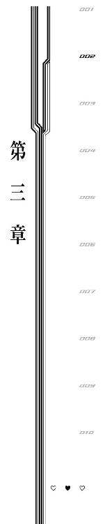
１
「飛んで撃って敵を倒すっていうのは、わかりやすくっていいよね。楽だし」
リヒャルダの先輩にあたるその人は常々そんなことを言っていた。
わかりやすくていい。
楽でいい。
そのセリフが、心構えが、軽薄な笑顔が、リヒャルダは気にくわなかった。
だって《機巧士官》は人類の救い手なのだ。長い間確立されていなかった、『人類が《異界人》に対抗するための唯一の手段』なのだ。
その当時、まだ性差による心震動エネルギー保有量の違いは立証されておらず、全国で『男の《機巧士官》』も生み出そうという動きがあった。
そも、軍隊や自衛隊のお偉方には男性が多い。少なくともリヒャルダのいた場所ではそうだった。
言葉や制度は男女平等を謳っているが、一部の男性将校などは『世界を救うのが女子供である事実』を快く思っていなかった。
《機巧士官》が国連の所属ではなくまだ各国の軍部所属だったころ、たびたび訪れる将校により、イヤミを言われるというようなことがあった。
だからリヒャルダは、強く、頼られるような人物になりたかった。
世界を救えるのに、先輩《機巧士官》たちは......リヒャルダはまだ初陣前である......命懸けでがんばっているのに、今の扱いは気にくわない。
イヤミの一つも言えないぐらいに、完璧な《機巧士官》を目指していた。
だから、この先輩の『わかりやすくていい』とか『楽でいい』というテキトーな態度が気にくわず、衝突を繰り返していた。
この駐屯基地のエースがそんなんだからバカにされるんです。だいたい、先輩には世界を救える人材である自覚が足りないんじゃないですか──
怒るリヒャルダを、先輩はいつだってのらりくらりとかわす。
「まあまあ。リヒャルダは真面目なんだけど代わりに怒りっぽくて嫌だよねえ。あと噓つきだよね」
「噓!? あたしは真剣なんですけど！」
「いや、だってさ、口で色々言うけど、本当は私のこと大好きでしょ？」
先輩は笑う。
その笑顔が大嫌いだった。
しかし軽薄な態度とは裏腹に、撃墜数は圧巻だ。
当時、まだ完全には《異界人》のアルゴリズムが解明されておらず、対小型《異界人》戦でも撃墜される危険性があった時代。
今でこそ《機巧士官》は小型《異界人》の群れ程度ならば単騎で出撃するようになっているが、当時は小型《異界人》にすら複数で挑むのが基本だった。
にもかかわらずその撃墜数は大小合わせて二百を超える。
まさに撃墜王と呼ぶべき実績。
不真面目で、軽薄。
けれど実力はある。
──いつか勝ってやろう、と思った。
だからリヒャルダは訓練を繰り返す。
《機巧士官》になるには様々なチェック項目があり、最初に適性を身体検査により調査される。この適性値が高くないと、そもそも《機巧》を胸に宿すことすらかなわない。
《機巧》を胸に移植したあと、実際に《機巧制服》に搭乗できるようになるまで期間が空く。それは《機巧》とどれほど適合し、この世界の法則からどれだけ早く逸脱できるかの才能によって期間が変わる。
リヒャルダは、《機巧》移植から《機巧制服》に搭乗できるようになるまで五年かかった。
平均が三年と言われているので、これは、かなり長い。
リヒャルダには才能がなかった。
そもそも胸に《機巧》を宿せる人間が少なく、鹵獲した《機巧》＝《異界人》の《核》自体もそこまでの数ではないため、《機巧士官》になれるだけですごい才能ではあるのだが、リヒャルダは『《機巧士官》なら当たり前の才能』では満足できない。
だって、軽薄な先輩の鼻っ柱を折るという目標ができてしまった。
だから。
「初陣は私とコープだよ。よろしくねー、リヒャルダ」
初めての戦闘で先輩と組むことになって、リヒャルダは嬉しかった。
「お、リヒャルダ嬉しそうだねえ。そんなに私と一緒に飛びたかった？」
「......べ、別に、そんなんじゃないです。ただ──えっと、とにかく、嬉しくなんか、全然ないですから！ ないんですからね！」
「ほんとは嬉しいくせにねー」
先輩は笑う。
「本当に、嬉しくなんか──」
「まーまー。......リヒャルダのがんばりは知ってるからさ。頼りにしてるよ」
「......か、勝手に頼りにしないでくださいませんか？」
リヒャルダは頰の内側を嚙んで、表情を殺す。
喜びを隠しきれない。
......そうだ、鼻っ柱を叩き折りたいだけではない。
超えるべき壁と設定して訓練をしていくうちに知っていく偉大さ。尋常ならざる撃墜数に、洗練された戦闘内容。
チームメイトからの信頼の厚さ。
軽薄な言動の裏に隠された真剣さ。
飛んで撃って敵を倒すのがわかりやすくていい──その言葉の裏にある訓練に裏打ちされた自信。
何より、《異界人》との戦いの前にも軽薄な──余裕と自信たっぷりの笑みを浮かべていられるその心の強さは、憧れてしまうに充分な、《機巧士官》としても特別な、一握りの人間しか持っていないような才能だった。
戦いの空に出て初めてわかる。
今から人類の天敵へ挑む──それがどれだけ怖いことなのか。
そして、ともすれば恐怖で一歩も動けなくなりそうな自分の横でこの先輩がニヤニヤと笑っている事実が、どれだけ心を奮い立たせてくれるのか。
対抗心と憧れ。
追い抜いてやるという気持ちと、並んで飛べる嬉しさ。
この時、リヒャルダの心震動エネルギーは間違いなくかつてないほどに高まっていた。
高揚感と喜びが心の力を高めていく。
頼りにしている──たとえ言葉の綾であったとしても、先輩からの期待というのは、今にも全速力で飛び回ってしまいそうなほど、嬉しくて心を震わせる。
......けれど、リヒャルダは『一緒に飛べて嬉しい』という気持ちを、必死に押し隠し、無視しようとした。
恥ずかしかった。
今までさんざん口げんかして、そのたびに受け流されて、それでも懲りずにつっかかっていっていた相手が隣にいて『嬉しいです』なんて、当時のリヒャルダの価値観では、とても素直に認めることができなかった。
だから。
「初陣で先輩を追い抜いてやります」
対抗心だけを、表に出した。
先輩はやっぱり笑う。
「そりゃあ無理ってもんだよ。だってさあ、私の撃墜数はちょっとすごいよ？ それに、これからも増え続けるしねえ。だからリヒャルダは永遠に私に追いつくことはないのであった。まる」
「か、数が無理なら、質で追いついてみせます！ たとえば、たとえば──《集落》を墜とすとか」
「《集落》を墜とす、ねえ。アレ墜とせるもんなの？ 動いてないから無視しとけってお達しだけど」
「墜とせるって信じないでどうするんですか!? 信じることで不可能を可能にするのがあたしたち《機巧士官》なんですよ！」
「ふうん。......ま、私的には？ なんか退くに退けないでどんどん自分を追い込んでいくリヒャルダを見てるのも楽しいけど？ 先輩としてこのまま放置もできないし？ あと本当に質でも私を超えられそうか度胸試しも面白そうだし？」
と、先輩はとびっきりのイタズラを思いついたかのようにニンマリと笑って。
「じゃあさ、《集落》に挑んでみない？」
──破滅への扉を、開いた。
「い、いいですよ。や、やってやりますです」
「怖いならやめてもいいけど？」
「や、やるって言ってますけど!? こ、怖くなんか、ない、です......」
「自信なさそうだけど？」
「怖くなんかないです！」
リヒャルダが意地になっているのを見て、先輩は笑う。
「ま、本当に挑むんじゃなくってさ、そばまで行って、勝てそうな気がしたら後日また行ってみよーって感じで。偵察兼度胸試しって感じ？ あとは──私たちの敵をせっかくだし間近で見ようかっていうね。ほんとは私も見てみたかったんだよ近くで。よーし行こっかー。ついといでー」
方針を決めて飛んでいく先輩。
リヒャルダも引き離されないように、必死に追いすがる。
──いつものように、雪が降っていた。
雪はここ数年やんでいない。法則更新日から地中海《集落》周辺の空は分厚い雲に覆われ、豪雪地帯と化している。
刃のような風。
弾丸のような雪。
けれど寒さも痛さもない。
これが《機巧制服》の力。
常識を塗り替える異界の常識──異常識の装備。
初めての《機巧制服》をまとっての実戦に、リヒャルダは高揚していた。
高揚は実力以上の力を発揮させる。
けれど、それ以上に、実力以上に自分に力があると錯覚させる。
《異界人》とまだ一度も戦ったことがなければなおさらだ。
だから、《集落》と対峙したリヒャルダは、その不気味さに吞まれることはなかった。
巨大な巨大な眼球。
まぶたの代わりに眼球の周囲に浮かぶ、巨大な刃。
瞳孔にあたる部分には、戦車、自動車、飛行機、船などの様々な乗り物が刺さっており、その歪さは乗り物製の棘を持った巨大な剣山という感じだ。
「うあー、ヤバイねこれ」
先輩は一目で《集落》の危険性を察知した。
それは本当に恐怖して『敵うはずがない』と思ってしまったのか。
それとも、撃墜できる算段があったけれど、初陣のリヒャルダを引き連れて挑むには危険すぎるという冷静な判断だったのか。
今となってはもうわからない。
ただ、リヒャルダの目には、先輩が《集落》を見て恐れているように見えた。
自分はまったく恐れていない《集落》を、いつか鼻っ柱を叩き折ってやりたい先輩が、恐れているように、見えたのだ。
──対抗心があっただけに、喜びが大きかった。
「あたしは、勝てそうに見えますけど」
精神の強さにおいて先輩に勝利したのだと、この時のリヒャルダは感じていた。
──心の中にたしかにあった憧れの気持ちを素直に認められていれば、こんなことは言わなかっただろうに。
「先輩がやらないなら、あたし一人でもやってやります」
「......いやー、やめた方がいいんじゃないかな」
「怖いんですか、先輩？」
意趣返し。
くだらない、子供じみた優越感。
錯覚。
見栄。
実際にまだ子供だったリヒャルダは、年齢相応の慢心をする。
代わりに、先輩は大人だった。
「怖いね。怖いから、私はやめときたい」
......素直にそう言われると、リヒャルダの中で昂ぶっていた優越感が霧散する。
憧れの先輩にそんな弱気なことを言ってほしくなかったという気持ち。
それから、憧れの先輩にそんなことを言わせてしまった罪の意識。
冷静になると先ほどまでの自分の言動が恥ずかしくなってくる。
「ま、まあ......先輩がそう言うんなら、やめておいてあげますけど」
だからそれだけでお茶を濁して、リヒャルダと先輩は本来の配置へと戻ろうとする。
──しかし、《集落》が、二人を見逃さなかった。
ぎょろり。
瞳孔に突き刺さった無数の乗り物、その船の舳先が、戦車砲が、飛行機の先端が、乗用車のヘッドライトが、新幹線のノーズが、一斉にリヒャルダと先輩を見た。
リヒャルダは敏感に《集落》が自分たちを見た気配を察知した。
反応はとても速かった。
──否、速すぎた。
「......!?」
優越感が霧散して、《集落》の不気味さをリヒャルダはようやく理解する。
──アレは、敵に回してはいけない絶対的脅威。
それどころか、存在を認知されることすらおぞましい異常存在。
ただ見られているだけなのに、つま先から頭のてっぺんまでに、まるで大量の虫が這っているかのような気持ち悪さが駆け抜ける。
人類にとって生理的に受け付けない存在。それが《集落》なのだとリヒャルダは知る。
だから、その時にリヒャルダが咄嗟にとった反応を過剰すぎると言ってはならない。
──銃弾を放った。
リヒャルダの武装である散弾銃が《集落》の眼球部分に吸い込まれていく。
それは《集落》という存在を相手取っているにしては、あまりにも弱々しい初撃。
しかし紛れもなく、《集落》への敵対行動。
防衛本能か、《集落》は応戦する。
さまざまな乗り物の先端から放たれるオーロラ色の光線。
周囲に降り続く雪すらも、不気味なプリズムの輝きを放つ。
世界は異界に変質した。
リヒャルダは己を守るために防壁を展開させる。
──あるいは、その防壁は《集落》の放った光線をすべて受け切れたのかもしれない。
リヒャルダの戦闘能力は実際、未知数だった。
その『未知数』を先輩がどう判断したのか、本当のところはわからない。
もう、わからない。
ただしこの瞬間、何かが少しずつズレていて、何かが絶望的なまでに嚙み合った。
リヒャルダをかばうように、前に出る先輩。
ただの人間や物体には変質をもたらす《異界人》の光線も、《機巧士官》の張る障壁の前ではまっとうな質量に変換される。
ただしその質量は、悲劇的に増幅して先輩を押しつぶした。
ボロボロに崩れていく先輩の《機巧制服》。
海に墜ちていく体。
様子をうかがうように静止する《集落》。
リヒャルダは、ただ、《集落》をながめていた。
状況が理解できずにながめるしかできなかった。
状況を理解して、恐怖で目が離せなくなった。
──頼りにしてるよ。
言葉が脳裏によみがえる。
海面でばちゃばちゃと水が跳ねる音。
先輩はまだ意識がある。
今からでも、助ければきっと、間に合う。
でも。
リヒャルダは、怖くて、一ミリも動けなかった。
──頼りにしてるよ。
ようやくチームメイトになれたのに。訓練の成果を見せつけるなら今なのに。
動けない。
恐怖ですくんでしまっている体に、一生懸命に『動け』と命令を送る。
あるいは、願う。
そうだ、《機巧制服》は信じて願うことで不可能を可能にする異界の武装。
──だったら、この体に勇気を。
願って、願って、ようやくリヒャルダは、視線を海面に向けることができた。
それだけだった。
願いの成果として、リヒャルダは、ゆっくりと力を失い、海中へ沈んでいく先輩の姿を、まるで悪意ある何者かに頭を押さえつけられているかのように、じっとながめ続けることだけができた。
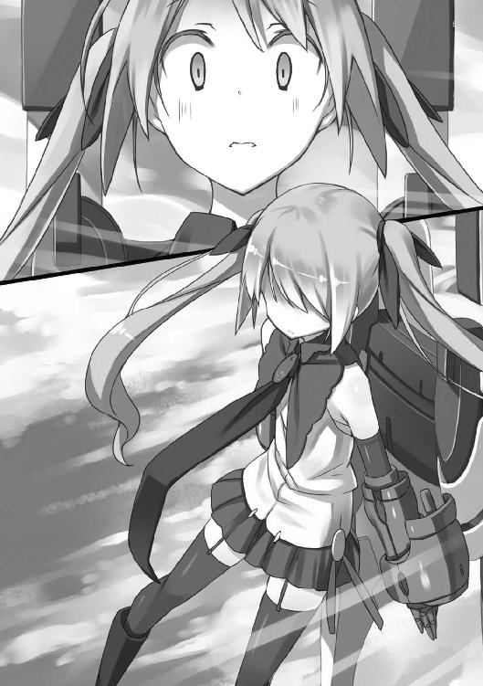
それが、胸に焼き付いた悪夢のような初陣の記憶のすべて。
ある《機巧士官》の慢心と弱さが、ある《機巧士官》を二度と飛べない体にしてしまったという、夢も希望もない、とっくに終わった出来事だった。
２
「話を聞いて、一つ疑問に思ったのですが......」
「俺はおまえの登場タイミングが一番疑問かな......」
桜花がいつの間にか隣にいた。
話を終えたリヒャルダもびっくりしている。
そのおどろきようは、先ほどまで泣いていたこともあり、充血した目を見開いて、酸素不足の金魚のように口をぱくぱくさせ、心臓が止まりそうになったのか胸を押さえているというものだった。
哀れになるぐらい驚愕しているリヒャルダの様子を見て、晴空は思わず冷静になってしまう。
しかし桜花、人をおどろかせておいて怒ったような表情を浮かべる。
「というかこんな、入口のところで話していたらイヤでも聞こえますよ。シャーロットとまたケンカ......ケンカ？ になったので兄さんを捜しがてら逃げていたら、またリヒャルダを兄さんが泣かせてるんですから。扉の陰で盗み聞きぐらいしたって当然でしょう」
「結局盗み聞きなんじゃねーか」
「というかリヒャルダはどうしてその話を私にしてくれなかったんですか。私と兄さんが一緒にいたら《集落》が来る──なんていう話、《機巧士官》であり当事者でもある私にするのが筋だと思うんですけど」
桜花は自分に都合の悪い流れになると話題を転換する癖がある。
びっくりしていたリヒャルダだが、聞かれてしまったものはしょうがないとあきらめたのだろう。大きく肩を落としてため息をつくと、観念したように弱々しい声で語る。
「桜花に言ったら、『別にかまいませんが』とか言い出しそうだからよ」
「それは、かまわないですから、かまいませんと言いますよ」
「かまいなさいよ！ 《集落》が三体同時に接近って、冷静に考えたら相当な脅威なんだからね!?」
「何を常識的なことを当たり前みたいに......」
横で話を聞いていて、日本語の難しさが身に染みる晴空だった。
常識的というのはつまり当たり前ということで、当たり前のことを当たり前に言うのは当たり前であって、何もあきれられるようなことではないはずなのだが......とか考えていてゲシュタルト崩壊しそうになる。
晴空がプチ混乱している横で、桜花はやれやれと肩をすくめる。
「いいですかリヒャルダ。そういう当たり前の話は、《機巧士官》には似合いませんよ。別に《集落》ぐらい何体来ようがどうにかなるでしょう？ ──そう思っていなければ、勝つことなんてできないと思いますよ」
「桜花の言うことは、《機巧士官》として正しいと思うわ。......だけど、あたしはそこまで強くないから、色々考えちゃうのよ」
「強くない？ 昨日、バルト海《集落》を相手にあれだけの戦果を挙げておいて？」
「それは結果論じゃない。あたしは、たまたま昨日、《集落》を撃墜するだけの心震動エネルギーを生み出すことができた。......でも、まったく違う結果になってた可能性だってあるの。あたしは──こんなこと言ったら、また『常識的なことを』ってあきれられるんだろうけど──あたしは、失敗する可能性が怖いのよ」
失敗が怖いのは本当に当たり前のことだ。
それが対《集落》戦における失敗......ようするに、仲間や一般人を巻き込む可能性がある失敗だとすれば、その恐怖もひとしおのはずだ。
だからリヒャルダの恐怖は普通の無力な人間である晴空からすれば、共感も納得もできるものだった。
けれど桜花は首をかしげる。
「やはり強いでしょう、リヒャルダは」
「......どこがよ。アンタみたいに怖いものなしでもないし、アシュレイみたいに強い感情もないあたしの、どこが」
「だって悩んだ末に戦ったんでしょう？ 私には真似できません」
リヒャルダがあっけにとられた顔をしている。
桜花はちょっとだけ考え込むように顔を伏せて、それから真意を語る。
「私が大事なのは兄さんだけです。十年前に離れた兄さんを守るためだけに戦ってきましたし、再会だけを目的に生きてきました。人類救済、《集落》撃墜、全部が全部ついでに過ぎません。兄さんという大きな目標のオマケについてくるものです」
「あたしは、そこまで真っ直ぐになれない」
「ですがリヒャルダ、思いませんか？ あなたから見た私の『真っ直ぐさ』は、思考放棄でもあるのですよ」
「どういう意味よ」
「だって、人類の命運とか、《機巧士官》としての使命とか、仲間のこととか、全部をまともに考えていたら、重すぎて飛べませんよ。......気付いていますかリヒャルダ。あなたが強いと言った、私とアシュレイ。この二人の共通点に」
「共通点？」
桜花とアシュレイ。
見た目も性格も、あまり似ているようには思えないのだけれど。
「私もアシュレイも、考えることをやめてるんです」
「......」
「私は兄さん以外をどうでもいいと切り捨てています。アシュレイは──少し前までのアシュレイは、怒りと復讐心でどうにか心を奮い立たせて戦っていました。結果的に私たちは強かった。でも、私たちはきっと、脆かった」
たしかに桜花もアシュレイも、攻勢に出ている時には強い。
しかしひとたび守勢に回ったならば、それを自力でしのぎきることができない。
桜花は実際、油断を突かれて攻撃の手を緩めたその一瞬で、何度もやられている。
「《機巧制服》の兵器は、心のありようです」
桜花は自分の右側を見る。
まるでそこに、愛銃があるかのように。
「私は遠くから広い範囲を狙い撃つことができる銃を持っていますし、近寄ってきた相手へ振り回す刀を持っています。アシュレイなんかすさまじいですよね。ハリネズミみたいに全方位に武器を向けている。......シャーロットは堅実な装備をしていますし、武装だけ見るなら、菖蒲が一番顕著に《異界人》を嫌っているように見えます。一撃必殺の兵器を一門だけですからね。少しでも早くに敵を倒してしまいたい意思の表れでしょう」
桜花は少し笑う。
そして、リヒャルダを見た。
「盾を持っているのはあなただけですよ、リヒャルダ」
「......」
「きっと、あなたが一番真面目に《機巧士官》という使命に生きているんです。悩んで、守るべきものを天秤にかけて、最後の最後には自分が全員の前に立つことを選んだ」
「それは、やぶれかぶれっていうか」
「やぶれかぶれで《集落》は撃墜できません。それは私が一番良く知っています。......思い出してください。あなたの心を震わせる何かが、昨日、バルト海《集落》を撃墜した時のあなたの中にはあったはずですよ」
桜花は子供をさとすように優しい声で語り聞かせた。
リヒャルダは目を閉じている。
そして、
「あたしは、あたしはただ──そう。あたしはもう、一緒にいる誰かを失いたくない。それだけを考えてたら、体が動いてたの」
リヒャルダが胸のあたりをぎゅっと握りしめる。
桜花は笑って、リヒャルダの頭を、ちょっと乱暴に撫でた。
「何すんのよ!?」
当然怒るリヒャルダ。
しかし桜花はかまわず頭を撫で続ける。
「あなたは本当に......アシュレイみたいに無口でもないくせに、大事なことだけは言わない子ですよね。さっきの話だって初めて聞きましたよ。もう二年近くも付き合いがあるっていうのに──って、まだそんなものでしたっけ」
「アシュレイとは五年以上でしょ」
いじけたような声だった。
桜花は笑う。
「......ひょっとしてヤキモチですか？」
「誰が！ あと桜花、アンタ、あたしを子供扱いするのはやめなさいよ！ シャーロットと同い年！ 身長だってアシュレイとだったらそんなに......そんなに......一、いや、二、え、えっと......、さ、三センチぐらいしか変わらないじゃない！ っていうか桜花！ アンタ盗み聞きのくせになんでそんな堂々としてんのよ！ 信じらんない！」
「何も自分に恥じるところがなければ、堂々とするのは当たり前でしょう？」
「盗み聞きしておいて!?」
おどろくリヒャルダだった。
晴空的に見ても、桜花の一番どうかと思うところが今の一言に集約されている気がして苦笑い。
というか、最初はリヒャルダと二人きりで話をされていたというシチュエーションだったのに、桜花が来てからまったく出る幕がなくって晴空は脱力する。
十年という期間を空けて妹と再会した手前、『一緒に過ごした年月は重要だ』とは言わないようにはしているけれど、目の前でこうも入り込めない雰囲気を出されると、ともに過ごした年月の強さは推して知るべしという感じだった。
「そういえば夕食ができたんですよ」
思い出したというように桜花が言う。
「それでちょうどいいからシャーロットから逃げて兄さんを捜しに来たんですが、早く行かないと菖蒲が怒るのでお夕食にしましょうか。菖蒲が怒ると怖いですよ。電磁加速砲が火を噴きますよ。跡形も残りませんよ。完全犯罪ですよ」
「本人のいないところでいたずらに評判を落とす行為はやめなさい」
「しかし兄さん、菖蒲だけは、菖蒲だけには、間違っても兄さんから好意が向けられるような事態はあってはならないんです......」
何かを思い出すような顔をしながら、桜花は自分の胸元を見る。
晴空の脳裏に、以前、胸関係の話をされたような記憶がよぎった。......そうか、あの時の狼狽は菖蒲と比べてのものだったのかと納得すると同時に、普段の様子を見ていても菖蒲にそこまでの戦闘力があるとは思えないなあと首をかしげる。
ひょっとして着やせするタイプなのだろうか。
「兄さんが他の女のことを考えてる顔をしてる！」
「えっ、それどんな顔!?」
自分の表情なのに想像もつかなかった。
「今度から頭の中で他の女の子のことを考えたら、脳内の女の子の顔が全部私にすり替わるように催眠術をかけておきましょうね。恋のマジックです」
「それは呪いっていうんだ！」
そんな風に兄妹で漫才みたいなことをしていたら、リヒャルダがため息をついた。
「ホンット、アンタたちは──無理矢理に引き裂かなくてよかったと思うわ。......ちょっと、見てて悔しくなるぐらい」
何がどう、誰にどう、どこをどう、悔しくなるのか。
リヒャルダはさっさと歩き出す。
だから詳しいところはわからなかったけれど──
思い詰めたような険がとれて、朗らかな顔で笑っていた。
だからきっと、悪い悔しさじゃないんだろうと晴空も笑った。
３
「......っていうかこのままだと《集落》にトドメさしてない《機巧士官》、お台場にはわたしと菖蒲だけになるよ！」
夕食をとっていたら急にシャーロットが立ち上がった。
《機巧士官》と晴空が食事をとるのは、『多目的ホール』という建物の内部にある、食堂というスペースだ。
しかし一般的な──学校などにある、三クラスほど収容できて、食券を買って並び、おばちゃんからトレイの上に料理を受け取るような──食堂とは趣を異にする。
お台場における食堂は、十年前に都心部ではほぼ死滅状態となってしまった、一般家庭の食卓だ。
入口を開けてまず見えるのは、食事の載せられた六人掛けの木製テーブルと、六脚の椅子だ。
これに《機巧士官》とおまけの一人が座っている。
席順はある程度定まっており、今日は入口近くから菖蒲とアシュレイ、シャーロットとリヒャルダ、桜花と晴空、という風になっている。
この席順は誰が食事当番をしているかというのと関係して決まる。
テーブルのすぐ横、入口から見て左側にはカウンター付きキッチンがあり、食事当番の二名がこのキッチンに近い位置に座る決まりになっている。
ちなみに今日の当番は菖蒲とシャーロットなので、おそらく初めてお邪魔した時と同じだろうと晴空は曖昧な記憶から判断する。
基本的に食事当番は『菖蒲と誰か』というふうになっており、菖蒲だけは食事当番に惑わされることなく、毎回一番入口側のキッチン側座席にいる。
キッチンの中には冷蔵庫とガスコンロ、それから食器棚。
冷蔵庫の扉に貼ってある『自分の飲み物には名前を』の貼り紙の横に、新しく『プリンにはプリンを、ゼリーにはゼリーを、エクレアには血の制裁を』という紙が貼ってある。
これはシャーロットが人のおやつを勝手に食べた時に追加されたものだ。文字通り『食べてしまったらきちんと返しましょう。ただしエクレアだけは許さない絶対に』という意味の貼り紙で、お台場駐屯基地で人のエクレアを食べた者には死の制裁が待っている。
ちなみに本日の食事の内容は、筑前煮とトースト、それにボルシチ。
和、洋、露の渾然一体となった世界創世紀なみのカオスである。
あとは各人に好みのお茶。
この献立には理由があって、《集落》を全部墜とし終えたら桜花の誕生日パーティーをやる予定なのだが、その時に使う材料をあらかじめ確保してしまった。
そのため余りの材料でこしらえることができたのが、この三品なのである。
この献立を見て、作り手である菖蒲・シャーロット以外は一様に『もっと他にも選択肢あっただろうに』という顔をしたことは言うまでもない。
晴空は箸でボルシチにサワークリームを溶かしながら、ビーツをトーストの上に載せて食べているところだった。
そんな折にシャーロットが立ち上がったので、パンをくわえたまま視線を向けることになる。
なお、晴空だけでなく、全員がまさに口に食べ物を入れているタイミングだったので、みんなだいたい同じようにシャーロットを見ている。
タイミングの悪い子だった。
「......わたしと菖蒲だけになるんだよ！」
シャーロットが隣の菖蒲をロックオンした。
菖蒲は口に運びかけた筑前煮の鶏肉を、ちょっと迷ったすえにトーストの上におそるおそる置いたあと、困った顔でシャーロットを見上げて、言った。
「おかわり？」
「違うよ！ だから、わたしと菖蒲だけが《集落》墜としてなくなるんだってば！」
バンバンとテーブルを叩くシャーロット。
晴空の目の前の緑茶が危険な勢いで波立つ。
その乱暴な行動に、菖蒲は穏やかな表情をちょっとだけ険しくする。
「こらこら、食事中のテーブルを叩かないの」
「あ、うん、ごめん......じゃなくって、どうするの菖蒲！ あと二体だよ！ 桜花さんは一体半倒してるし、アシュレイも一体半倒してるし、リヒャルダだって昨日一体撃墜したし、残り二体だったらわたしと菖蒲も何かしないとダメだと思う！」
『一体半』ってなんだろう。
そういえばカリブ海《集落》は一度倒れたあとに復活したのだった。一回目の撃墜をアシュレイが行い、二回目の撃墜を桜花が行ったので、シャーロット的には桜花とアシュレイに半分ずつとカウントされているのだろうか。あれ、一体増えてない？
とにかくシャーロットは危機感を覚えていて、その危機感を菖蒲と共有したいらしい。
しかし菖蒲はぼんやりしたものだった。
「でもねシャーロット？ 別に撃墜数は記録されるけれど競っているわけじゃないんだから、そんなに気にしなくてもいいと思うよ？」
「チッガーウヨ！」
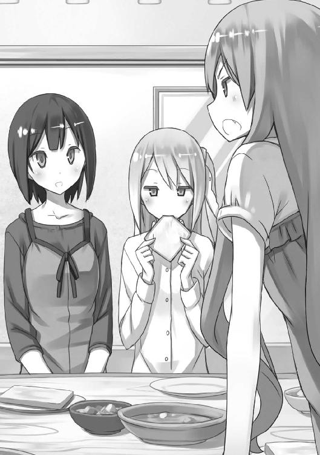
「カタコトだよ？ 外国の方？」
「外国の方だよ！ イギリスの方から来たってゆったじゃん！ ......そうじゃなくて、撃墜数とかじゃなくて！ 仲間はずれみたいでイヤなの！」
「仲間はずれ？」
「そうだよ！ お台場に《機巧士官》は五人！ そのうち《集落》墜としたのは三人！ つまりわたしと菖蒲はもう少数派なんだよ！」
「あら、そうねえ」
おばあちゃんと孫の会話を聞いているような錯覚に陥る。
菖蒲はどうにものんびりしており、シャーロットはハキハキしているというか常に慌て気味という感じだ。
普段の会話だけ聞いていると、《機巧制服》の武装について、『菖蒲が一撃必殺系でシャーロットが正確確実系なのは間違ってるんじゃないか』とか考えてしまう。
「でもシャーロット？ 《集落》の撃墜は簡単にできることじゃないと思うのね？ 命懸けの戦いの中でとどめをゆずってもらいたいわけでもないでしょう？」
「もちろんだよ！ だから突然リヒャルダが《集落》を撃墜できた理由をわたしは考えたね！ すっごい考えたよ！ たぶん人生で一番頭使ったよ！」
「それで、何かわかったの？」
「わかったよ！」
「あら、そうなの？」
「リヒャルダが強くなった理由、それは──トイレに行きたかったんだよ！」
「違うわよバカ！」
ここまで無視を決め込んでいたリヒャルダも話に加わった。
小声で菖蒲が『食事中よ』とシャーロットをいさめているのだが、シャーロットは次のロックオン先をリヒャルダにしてしまっているため、菖蒲の注意は届いていない。
「シャーロット、アンタ、すさまじいバカね!? どうしてそうなるの!? どう考えたらその結論になるの!? まったくわかんないわよバカ！」
「だって他にないじゃん!? 急に強くなるんだもん！ 尿意以外に何がリヒャルダを強くするの!?」
「にょ、......そんなんで強くなるかバカ！ あれは、あれは──い、色々あったのよ！」
「そういえばあのあたりでなんか様子おかしかったもんね？ 妙にそわそわしてたり、何か考え込んでるみたいにボーッとしてたり」
「おかしい!? そんなにおかしかったのあたし!?」
「見てわからない方がどうかしてるってレベルで様子おかしかったよ」
「え？ え？ え？ で、でも、そ、それはシャーロットとあたしがだいたい同じころにここに来たからで、ほら、その、同期の絆的なアレでなんとなく察したとかでしょ？ あたしは他の人から見たら至っていつものあたしだったでしょ？」
「まあ、何か隠してるのにすっごいわかりやすいってあたりは、いつものリヒャルダだったけど......リヒャルダは隠し事苦手だよねえ」
「え？」
リヒャルダ、ここでなぜか晴空を見る。
どう反応してあげたらリヒャルダの自尊心が傷つかないのか晴空は考えるけれど、実際に自分をストーカーしているのがリヒャルダであることとかかなり早期に気付いていた晴空としては、かける言葉もないのが実情だった。
なので晴空、末期ガンを宣告する医者のような表情で首を振る。
「え？」
続いてリヒャルダ、桜花にも視線を向ける。
桜花の反応も晴空と同じだった。
だが桜花は晴空のさらに上を行く。
「あなたはなぜ、自分が隠し事苦手じゃないと思っているんでしょうね」
「うぐっ......!?」
リヒャルダの精神に深刻なダメージが入った。
その様子を見て桜花、まさかの追撃である。
「いえ、でもリヒャルダ、ある意味であなたは隠し事得意なのかもしれませんね」
「あ、ある意味？ ある意味って何よ......あたしもう傷つきたくないんだけど」
「じゃあ言わないでおきますか」
「言ってよ！ 言いなさいよ！ 聞いてあげるわよ！ 聞かせてください！ そこまで言われたら気になって仕方ないじゃない！」
「普段から何かにつけてそわそわしているので、ちょっとぐらい様子がおかしくても『ああまたか』ってみんな思ってスルーするあたり、隠し事に向いているのかなあ、と」
「普段からそわそわって、それただの不審者じゃない!?」
「ハムスターみたいでかわいいから大丈夫ですよ」
「なんの慰めにもならないわよ!?」
あああああああ......と悲痛な叫びを上げてテーブルに突っ伏すリヒャルダ。トーストに顔からつっこんだ。もうダメかもしれない。
「ん？ というかリヒャルダの隠し事がなんだったのか、桜花さんは知ってる感じ？」
ふと気付いたというようにシャーロットが口を開く。
桜花はうなずいて緑茶をすすってから、
「そうですね。兄さんと話していたところを偶然聞いてしまいまして。何かと思えば他愛ないことでしたよ」
家族を引き裂くか《集落》の接近を許すかで悩んだ末に、自分がみんなを守ればいいと結論した──これを『他愛ない』と言い切るあたりが、桜花の強さだった。
強すぎるのも考えものである。
さて、リヒャルダが何を隠していたのか知っているのは、話をされた晴空と盗み聞きをした桜花だけのはずなのだが、なぜかシャーロットが『そっかー、まあしょうがないよねー』とうんうん唸っている。
それからシャーロット、真横にいる桜花を見て一言。
「もうリヒャルダから聞いちゃったと思うけど、実はね、桜花さんの誕生日パーティーやろうってみんなでこっそり企画してたんだよ。昨日の夜から、お兄さんとか、リヒャルダとか、みんなでこっそり集まってね」
あははー、と笑いながら暴露。
突っ伏していたリヒャルダが跳ね起きる。
「ちょっ、な、流れから言ってそれとは別件だったでしょ!? あたしが《集落》墜とした理由の方の話よ!?」
「えっ、それは尿意だよね!?」
「違うって言ってんでしょうが！ 本気だったの!? まさか本気で、そんなもので《集落》墜としたと思われてたわけ!?」
「本当に違ったの!? 信じられない！」
「それはこっちのセリフよバカ！ 信じられない！」
明日、四体目の《集落》を墜とすというのに、《機巧士官》同士の信頼関係がガタガタだった。
その信頼関係ガタガタ事件のある意味中心にいるはずの桜花は、我関せずという顔をして熱い緑茶をすすっている。
「桜花？ そういうわけで、色々隠し事してたんだけど......」
無反応すぎるのが怖くって晴空は桜花におそるおそる感想をたずねる。
すると桜花、ほとんど無表情のままどうでもよさそうに、
「私の誕生日が近いのは知っていました」
「......はあ、そうなのか」
「祝われるとは思っていませんでしたけれどね。......聞かなかったことにした方がいいかなと思ったので、反応しません。実際に行われた際には、ちゃんとおどろきますから」
「それは気遣いというかハードル上げって感じなんだが」
「ところで兄さん、シャーロットが気になる発言をしていましたよね」
にっこり微笑む桜花に、晴空は本能的な恐怖を覚えた。
たぶん怒ってる。
「兄さん、私言いましたよね。リヒャルダと兄さんが会っているのを見た日に、これから誰かと会う時には私を通してほしいって、言いましたよね」
「......は、はい。言いましたね」
「リヒャルダと会っていたのは、事情も色々あったようですし大目に見ましょう。そもそも約束自体が言った翌日になかったこと扱いなのも、仕方ないとあきらめましょう。......でも約束した当日の夜にはもう私を通さないでみんなと会ってるというのはどういうことなのか説明してください」
「いや、俺も約束したばっかりだったから、シャーロットから呼び出しをもらった時もどうしようか悩んでたんだけど、足が勝手に」
「足が勝手に!? これが噂に聞く『体は正直』というやつですか!?」
「その発言は誤解を招くからやめて！」
「おのれシャーロット！ 兄さんに何をしたんですか!?」
「まだ何もしてないよ！」
「『まだ』!?」
言葉の綾って恐ろしい。
桜花がドスンと湯飲みをテーブルに置いた。
「リヒャルダもシャーロットも兄さんと勝手に会うし、兄さんは兄さんで私に隠し事ばっかりだし、もう何も信じられませんよ！」
「まあまあ落ち着いて。リヒャルダと会ってた事情も、シャーロットと会ってた事情も、もう桜花に知られたので全部だよ。あとは隠し事なんかないからさ」
怯えながらも弁明を試みる。
桜花がじとりとした目で晴空を見た。
「ほんっとーに、何一つ隠し事してないですか？」
「..................うん、してない」
「今の間！ 今の間はなんですか！」
「だ、だって！ 人間誰しも隠し事の一つや二つあるだろ!?」
正直な晴空だった。
いや、『じゃあ何を隠してるのか』と聞かれても思いつかない。思いつかないけども、絶対に桜花に言えないことの一つや二つあるだろうなあという自己分析である。
「兄さんは変なところで不真面目なんですから......まったく、もう我慢できません。いよいよ今夜こそはお待ちかねの尋問ですからね！」
「前々からしようと思ってたみたいに言うなよ！ 怖いだろ！」
「今日のうちに知らないところは全部埋めてやりますよ！」
息巻く桜花。
こうして夕食時は暴露大会のようになり、お互いの秘密をさらけ出した結果、《機巧士官》同士の信頼関係に亀裂が生まれてしまった。
明日、明後日は《集落》との連戦が予定されている。
昨日の圧勝を見ていたから晴空は安心していたが......
どうだろう。
世界は案外ヤバイのかもしれなかった。
４
このままでは《集落》撃墜という快挙が尿意のお陰にされてしまう......
さすがにリヒャルダもそんな危機感を覚えたのだろう。
食事が終わると、本部から聞いていた『晴空と桜花を一緒にさせておくと《集落》が接近してくる』という話をすることとなった。
話をする前に晴空も許可を求められたりしたのだが、別に言われて困るものでもないよなあとこれを承諾。
「でもそれってさ、負けムードだったら『お兄さんと桜花さんのせいで《集落》がうちの持ち場にばっかり集まってくる』ってなりそうだよね？」
シャーロットのふとしたつぶやきに、リヒャルダが自分に許可を求めた理由をようやく知る晴空だった。
食卓はティータイムへと移行している。
席順は変わらないまま、全員の前から食器が下げられ、お茶だけが残っている。
「というよりも、なぜ《集落》が寄ってくるのですか？」
......桜花が質問したように。
リヒャルダの話を聞いた時にもっと気にすべきことが大量にあったということを、今、《機巧士官》みんなの前で話をされ、彼女たちが疑問を口にして、初めて気付くという始末だった。
なので晴空だけが『それ聞くべきだったのか』という顔で冷や汗をダラダラ流しているが、それ以外はまったく問題なく、リヒャルダの話に対して質問タイムに入っている。
「桜花とアシュレイで二体撃墜して、研究が進んだお陰でわかったことらしいんだけど、《集落》には役割があるみたいなのよね」
「役割、ですか」
「《異界人》の動きをデータ化したり分類したりする時に、鹵獲した《核》の波形を司令部のコンピューターと同期して、そこからデータを抽出、等級と種類を決めるじゃない？ それと同じで、あたしたちが《集落》を撃墜して鹵獲した《核》も、そのデータが司令部のコンピューターに同期されてるんだけど──」
さっぱりわからん。
なんとなくわかるのは《機巧士官》全員が常に自分のオンラインストレージに鹵獲した《集落》及び《異界人》のデータを書き込んでおり、ホストサーバーに当たる司令部へと常時アップロードしている状態だということだった。
もちろんそんな機材を装備しているようには見えないので、《機巧制服》のトンデモ機能の一種なのだろう。
ようするに《機巧制服》やべーということだ。
「──《異界人》にも『偵察』とか『突撃』とかの役割があるじゃない。《集落》移動の際に真っ先に突撃してくる足の速いのが『偵察』で、駐まっている《集落》から出てきて、あたしたちが一番相手してるのが『突撃』の《異界人》よね」
「そうですね。つまり、そういった『役割』を分類しているものと思しき波形が、《集落》の《核》からも見つかったと？」
「そういうこと。それで、桜花とせ、せ、せ、せ、せ、せ......晴空！」
「はい!?」
突然リヒャルダに怒ったテンションで名前を呼ばれてびっくりする晴空。
さっぱりわからないから話を聞いていなかったことがバレてしまったのだろうか......こんなことならもっとちゃんと聞いてるみたいな顔をしておけばよかったと後悔。
しかし。
「別にアンタに用事はないのよ！ だから、そのね、桜花と、せ、せ、......晴空！ が一緒の場所に来た途端に《集落》が寄ってきたから、二人の中にある元は一つだったっていう《機巧》が近くに来て、《集落》だったころの機能を取り戻したんじゃないかっていう説が濃厚なの！ わかったわね!?」
「は、はい......」
なぜかにらまれてしまう晴空だった。
桜花は今のリヒャルダの話を聞いて、『ふむ』と冷静な表情で顎に指を当てて考え込んでから、
「リヒャルダ、ひょっとしてなのですが......」
「何？ 今の話で何か思い当たることでも？」
「リヒャルダは異性を名前で呼ぶことに照れるタイプですか？」
「アンタ何を聞いてたの!?」
リヒャルダがびっくりしていた。
しかし桜花は至って冷静に切り返す。
「『せ、せ、せ、せ、せ、せ、晴空！』のあたりをしっかり聞いていましたが」
「他にあるでしょ!? あたし、いっぱい大事なこと話したのに！」
「私にとって兄さん以上に大事なことなんてないです。私と大事な話をしたい場合は、兄さんのことを話題にからめないでください」
「だって今の話はアンタの兄のことをからめずに語れるわけないでしょ!?」
「『アンタと兄をからめる』？ カップリングの話ですか？」
「......アンタの妹でしょ！ どうにかしなさいよ！」
リヒャルダが『助けて』と目で訴えてくる。
晴空は穏やかな笑顔で首を横に振るのだった。
絶望するリヒャルダに、さらに桜花がたたみかける。
「しかし本当にリヒャルダは恥ずかしがり屋ですね。私のことを名前で呼ぶのに二ヶ月、私と会話するのに三週間、そもそも口を開くのに一週間かかったのを思い出しますよ」
「い、一週間もかかってないわよ！ せいぜい六日ぐらいでしょ!?」
晴空からしたらあんまり変わらないように思えてならなかった。
しかしリヒャルダにとって『一週間』と『六日』の間には大きな隔たりがあるようで、否定する彼女は必死な様子である。
桜花は冷静に受け流すのだが。
「最初は冷たい子だと思ってましたよ。今は絞めたい子だと思っていますが」
「なんで!? どこを!?」
「だってリヒャルダったら、いつの間にか兄さんと仲良くなってるんですもん。今、私がお台場で圧倒的に絞めたい子ランキング堂々の二位ですよ、あなた」
「一位誰よ!?」
「アシュレイですが」
「............なぜ」
急に話題に混ぜられて、若干反応が遅れるアシュレイだった。
「だってアシュレイが最初になぜか兄さんと仲良くなり始めたじゃないですか」
「......誤解」
「鈍感な兄さんはごまかせても、私の目はごまかせませんよ。というか兄さんと仲良くなった順に《集落》を墜としているんです。つまり《集落》は兄さんとより強い絆を結んだ者が墜とすんです。間違いない」
話題の焦点が自分になって、晴空は強烈に帰りたくなってきた。
けれど、桜花は晴空が席を立つ間もなく、続けた。
「──あと二体、私が墜としますよ」
日常会話のノリのままで、話のついでとでも言うように。
「《集落》を集めてしまった責任とか、世界平和とか、近隣に住まう人々のためとか、そういうもののためではありません。私は兄さんに好かれていたいから活躍するんです。だから、他の子に《集落》をゆずる気もありません。──シャーロット、菖蒲」
呼びかけられて、シャーロットが姿勢を正す。
菖蒲は包み込むように湯飲みを持ったまま、首をかしげた。
「残り二体、もし撃墜したいなら、私に先んじてみてください。シャーロットはチャンスを逃さない判断力と正確性がありますし、菖蒲には他の追随を許さない一撃があります」
「う、うん、負けないよ！」
「......そうね」
シャーロットは力むように拳を握りしめて、菖蒲は笑ってお茶をすすった。
「アシュレイ、リヒャルダ」
「......」
「な、何よ」
「私はあなたたちと並んで終わる気はないですよ。残り二体を私が撃墜して、誰も追いつけないほどの強さを示してみせます」
「......勝負なら、負けない」
「別にあたしは追いつくとかそういうのはどうでもいいんだけど。......無茶しないように見ておくぐらいは、しようかしらね」
アシュレイの目が刃のように細められ、リヒャルダが腕を組んでそっぽを向く。
全員を順番にながめて、桜花は最後に晴空に視線を向けた。
「いよいよ明日、明後日で世界は救われます。しかも最後に二体。誰もが撃墜数で逆転可能です。ちょうどいいので一番強い《機巧士官》を私たちだけで決めてしまいましょう。勝つのは前提です。そうですよね、みんな？」
その言葉に対する反応はバラバラだった。
シャーロットはうなずき、菖蒲は器が空になった人へ新しいお茶を淹れている。
アシュレイは黙って自分のカップの中身を見つめて、リヒャルダは腕を組んでそっぽを向いたまま。
しかしやる気が満ちていっているのは、晴空にも充分に伝わっていた。
一方で晴空は思う。
今まで桜花が激励をしているのを見たことはないし、きっと初めてなのだろう。
それだけ明日、明後日の連戦が手強いということだ。
地上に残るけれど、晴空も身が引き締まるような思いだった。
そうだ、気を引き締め、油断せず、勝利を信じていれば《機巧士官》は負けない。そういうシステムで生きている。
だから今の気持ちを大事にしよう──そう決意して晴空も拳に力が入る。
いい意味での緊張感に包まれる食堂。
「......わたし、今からおトイレ我慢しておくね」
シャーロットの発言は、みんなで無視した。
５
時間が静かに過ぎて行く。
夕食をとりおえて、風呂を浴び、眠る。
《機巧士官》にはそれぞれ明日に備えた精神的準備の方法があるようだが、桜花のそれは静かなもので、ただ普通に桜をながめ、普段より大人しいテンションで会話をして、ゆったりと眠りに就く、というだけだった。
晴空の方が緊張して眠れない時間が過ぎて、翌朝。
自分がいつの間にか眠りに落ちていた事実を、隣で眠っていたはずの桜花がいないことと、窓から差し込む朝日で晴空は気付く。
朝の準備を済ませ、朝食をとるために食堂へ。
晴空は今日も『記念祭』の準備を休むことにしていた。
自分がお台場にとどまることで桜花の力になれるのならそうすべきだと考えたのだ。
食堂にはまばらに人が集っている。桜花もそこにいた。
アシュレイとシャーロットがいないけれど、アシュレイはジョギング、シャーロットは布団（ベッドのクッション部分）を干しているらしかった。
食事を済ませ、ばらばらと食堂を出て行く。
不思議なほどに会話はない。『おはよう』『いただきます』『ごちそうさま』。あとはイレギュラーな行動をしている二者に関する話だけで、夏の朝は静かに過ぎていく。
昼になった。
《機巧士官》たちはハンガーに集う。
晴空が桜花のあとにくっつくようにしてハンガーにたどりついた時間には、すでに全員が《機巧制服》への搭乗を完了して、静かに出撃の時刻を待っていた。
長大な砲と日本刀を装備した、桜花の《機巧制服》。
大量の兵器を頭上に並べているのは、蝶のような翼を背にしたアシュレイだ。
堅実なアサルトライフルとミサイルポッドという装備の、シャーロット。
雷神の太鼓じみた武装をまとっているのはリヒャルダ。
小さな翼に大きな砲という少し変わったシルエットなのは菖蒲。
今日と明日で世界が変わる。
あるいは、今日と明日で世界が終わる。
世界の命運がかかった二日間の戦い。
それが今。
ウゥゥゥゥゥゥ......
お台場駐屯基地に鳴り響くサイレン音とともに。
「時間ですね。──風早桜花、出撃します」
始まった。
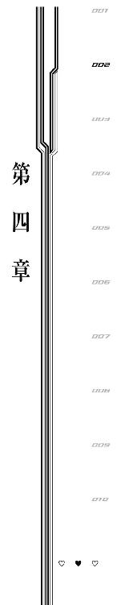
１
「信じらんないわ。まだ二年ぐらいなのよね、前に《集落》に負けたのは」
インド洋《集落》を撃墜へと向かう道すがら、リヒャルダはふと気付いた。
今は福岡県南西部まで向かう道すがらだ。日本列島上空を銃弾じみた速度で飛行しながら、《機巧士官》たちは飛んでいく。
海を渡る鳥のような、桜花をトップに据えた編隊飛行。底辺のない三角形のような陣形で光の尾をたなびかせながら少女たちは昼間の青空の中を突き進む。
リヒャルダにとっては信じがたい行軍だった。
二年前。......いや、まだ二年も経っていない、ほんの少し前。
リヒャルダは一度《集落》に挑んで手痛い敗北を喫した。
それから少しの間《機巧士官》や《異界人》から離れて生活していたのだが、何をしていてもふとした瞬間、地中海の豪雪が脳裏によぎってしまい、ダメだった。
だから引退してほどなくリヒャルダは《機巧士官》に復帰する。
そして今──あと二体というところまで、《集落》を追い詰めている。
「日本に配属されて、お台場で戦って......その時は《集落》を倒すなんて思ってもいなかったし、倒そうとも、思ってすらいなかったわ。......それがどうして、こっちが《集落》を追い詰めて侵攻してくるのを迎撃に向かってる」
「私のお陰ですよ」
横を飛ぶ桜花が独白に割り込んでくる。
というよりも、この瞬間までリヒャルダは思っていることが声に出ているなどと自覚していなかったので、大いに慌てて顔を真っ赤にした。
「なんで聞いてんのよ!?」
「通信回線がオープンなので」
《機巧士官》の会話、見ている景色などは記録される。
基本的に《機巧制服》をまとった彼女たちには本部のコンピューターへの同期を常に義務づけられていて、飛行中の内緒話は基本的に不可能なのだった。
もちろん本部のコンピューターよりも彼女たちの《機巧制服》の方が技術的には上（というよりも上下かどうかすら怪しいトンデモ技術）なので、本部との音声・映像同期をオフにすることは可能だが、下手すると始末書を書かされるので誰もやらない。
個人が自由に所有・運搬できる、たった一人で一国の軍隊と渡り合うことが可能な兵器ゆえに仕方ない措置とも言える。
それにしたってこんな独白、聞かないふりをしてくれてもよさそうなものなのに......
リヒャルダは桜花に『デリカシーが足りない』と突っ込んでやろうかとも思ったのだが、桜花がこういう性格なのはずっと前からなので、今さら言っても仕方ないか、とため息をついた。
その代わり、素直に桜花の言葉を受け止めようと思った。
だって、本当に桜花のお陰で、ここまで人類の未来が明るくなったのだから。
そうだ。因縁がある。地中海《集落》は是非とも撃墜したい相手だ。
今日の相手はインド洋《集落》だが、このあとに地中海《集落》へ、お台場の仲間とともに挑むことができるのは、桜花が最初の《集落》を撃墜してくれたからに他ならない。
一人ができればみんなができる。
一人の成功は次に続く者の確信となり、成功を確信することで《機巧制服》はより明確な奇跡を起こす。
リヒャルダは素直に感謝の言葉を口にしようと、大きく息を吸い込んで、
「別にあたしだって《集落》撃墜したんだし、桜花だけの手柄みたいに言われるのは気に入らないんだけど!?」
死にたい。
いつもこうだ。何も考えてないような時だけは素直にしゃべれるのだが、何か考えて、考えたことを口にしようとすると、真逆の言葉を口にしてしまう。
フォローを、早くフォローをしないといけない。
「......で、でも、桜花が一体目を倒したのは事実なんだし、まあ、自慢したい気持ちはわからなくもないけど」
「相変わらずで安心しますよ」
桜花が微笑ましそうに言う。
投身自殺したかった。
音速で飛び込む海はさぞ固かろう。頭をぶつけて記憶喪失になりたかった。
「リヒャルダは隠し事が下手で不器用ですよね......あと口以外が正直。つまり、体が正直なのです」
「その言い方やめてくれる!? なんかイヤなんだけど!?」
「体が正直なリヒャルダ」
「だからやめてよ！ 記録残るのに！ 本部の人が聞いたらどんな顔するのか怖い！」
「明日、地中海《集落》のトドメは、ゆずりましょうか？」
「──」
冗談めかして言われたけれど、その申し出は、聞き逃せないものだった。
「私は加減をする気がありませんし、昨日も言いましたけれど、この二体を倒して世界一の《機巧士官》になるつもりです。......しかし、地中海《集落》にトドメを刺すのは、あなたであるべきだとも、思うのです」
「......それは」
「感傷ではありませんよ。そんなもので《集落》を墜とすことはできませんから。ただ、そうですね、あなたにゆずろうと思ったのは......」
桜花が言葉を探している。
しかしなかなかふさわしい言葉を見つけられないようで、沈黙してしまった。
リヒャルダは、その不器用な沈黙に笑う。
「別にいいわよ」
笑って、言えた。
本当に二年前からは考えられない進歩だと、自分で思う。
「倒したかったら自分でトドメをかっさらうから。......今のあたしは《集落》にだって勝てる。もうあのころのあたしじゃない。それに──ホント、桜花は足元が見えてないわね。今日の相手は地中海《集落》じゃなくて、インド洋《集落》なのよ」
──前方。
次第に存在感を増す陰が見える。
それは空に浮いた、あまりにも大きすぎる島だった。
これまで相手にしていた《集落》も全長百メートルクラスという巨大なものばかりだったが、今回相手をするインド洋《集落》、《ウマシアシカビ》はそれらのゆうに十倍はあるようだ。
比較物のない空中。
雲一つない夏の昼空。
けれど、遠くからでもはっきりとその《集落》の大きさがわかってしまうのは、その《集落》が、かつてどこかの街の都市だったと思われる場所を、そのまま宙に浮かべたような姿をしているからだろう。
ビルがあり、道がある。
車があり、ヒトガタの何かが歩いている。
切り替わる信号。乱立するビルへ出入りする大量の人影。通行する車に、規則正しく横断していくヒトガタの何か。
......そうだ、その《集落》は、あろうことか『都市』ではなく『都市での人々の営み』とでも言うべき姿をしていた。
悪趣味にもほどがある。
さらに近付けば、ヒトガタはのっぺりとした白い物体であることがわかる。
その大量のヒトガタが、一斉に、顔のない顔面をこちらに向ける。
リヒャルダは脳髄からつま先へと駆け抜けていく悪寒を覚えた。
たやすい敵ではない。
今まで出会った《集落》も、多かれ少なかれ不気味で、生理的嫌悪感をもたらすようなものだったが、今回の敵は、サイズも不気味さも比較にならないほどの物体だ。
「明日のことは明日考えるわ」
《集落》接近について誰よりも悩み続けていたリヒャルダは、言う。
晴空と桜花を引き裂くべきか、座して《集落》を待ち、仲間の命を危険にさらすべきかを迷い続けた末に、全部自分が守ってやると決意した少女は言う。
「今は目の前のアレを墜とすことだけ、考える」
「......おっしゃる通りです」
桜花は笑った。
──交戦距離へと突入。
敵、《ウマシアシカビ》から大量の《異界人》が飛び立ち、こちらに向かってくる。
リヒャルダは大盾を展開。
「後ろからついてらっしゃい！」
そう叫んで、突撃を開始する。
２
これも市街戦と呼ぶべきなのだろうか。
侵攻していくのは五人の《機巧士官》。迎撃するのは都市型超巨大《集落》、《ウマシアシカビ》。
ビルや車、道路などの当たり前の都市に当たり前のようにある設備ばかりで、一見して《ウマシアシカビ》には《機巧士官》の侵攻に耐えうる用意はないように見える。
しかし相手は《異界人》。
道を渡る数多ののっぺりした真っ白いヒトガタや、ビルの窓や、道路に描かれた横断歩道の模様などに、赤い穴が空いたかと思えば、そこから光線が飛び出してくる。
桜花は上空からヒトガタを狙う。
しかし建物の陰に隠れてたり、車の陰に隠れたりして、なかなか狙いが定まらない。
《機巧士官》たちには市街戦の実戦経験はなく、また、訓練も市街戦を想定したものは存在しない。
侵攻を開始したものはただちに撃墜するべきで、人里に《異界人》があふれるような事態に陥ったのならばそれはもう『敗北』と呼ぶべき取り返しのつかない失敗なのである。
今なお日本の防空圏に迫っている地中海《集落》を放置し、市街地上空を通らせるがままにしている現状は、その《集落》が街に直接《異界人》を放たないからこそ許されているのだ。
だから市街戦に持ち込まれてしまうと、桜花はうまく戦うことができなかった。
──ここが本物の市街地ならば、だが。
桜花が狙いを変える。
照準に据えるのは街を形成するビル群そのもの。
《機巧士官》は不器用だ。建物や地形を巻き込まずに攻撃する手段が少ない。だって、今までの戦いはすべて空の上だったのだから、周囲に守るべきものがあるような状況での戦いには慣れていないし、そんな戦いができるような進化を重ねてもいない。
だから桜花ができる『市街戦』、それは、ビルごと敵を吹き飛ばす暴挙だった。
──弾丸を放つ。
桜花の右肩から撃ち出された弾丸は、狙いも何もなく仮想の市街地を形成するビルの一角に当たった。
爆発。
えぐり取られるビル。
《ウマシアシカビ》はあまりにも巨大で、上から見れば見渡す限りすべて敵というありさま。普通であればそのサイズを見ただけで心折れるような相手のはずが、桜花をはじめ、《機巧士官》たちの顔は明るい。
だって、見渡す限り敵なのだ。
「──どこに撃っても当たりますね、これは」
連続で放たれる桜花の弾丸。
そのたびに爆発が起こり、《ウマシアシカビ》の上にある市街地を削り取っていく。
基本は、普通の《異界人》戦と同じだ。
《集落》にも《核》があり、《核》を壊せば倒せるのは実証済み。
ならば《異界人》の《核》を晒す時に行う、至極基本的な戦法をとるのみ。
その戦法とは、外装を破壊して中身をさらけ出すこと。
つまり。
「アシュレイ、アレ、平らにできますか？」
「......変な感じ」
アシュレイが市街地に突撃していく。
そうして適当な位置につくと、肩の上に大量に浮かんだ兵器、その銃口を三百六十度、ハリネズミのように全方位に向けた。
放たれる一斉射撃。
削られていく《ウマシアシカビ》の外観。
ビルが崩れ、ヒトガタが吹き飛び、道が割れていく。
「......まるでこっちが《異界人》みたい」
弾丸を撃ちながら、アシュレイはつぶやいた。
見た目だけならばやっていることは完全に市街地の武力制圧である。違和感があるのだろう。まるで立場が逆ではないか、と。
しかし攻撃の手は緩めない。
リヒャルダが大盾を展開して突撃する。
シャーロットがヒトガタを掃討していく。
菖蒲の攻撃が地形を削っていく。
《ウマシアシカビ》もサーチライトのようにあらゆる場所から赤い光線を放って《機巧士官》たちを薙ぎ払おうとする。
けれど通じない。
すでに三体の《集落》を撃墜した事実が、《機巧士官》たちに揺るぎない自信を与えている。全員が疑いなく勝利を信じる精神状態ができあがっていて、疑いさえなければ《機巧士官》は負けない。
みるみる削られていく《ウマシアシカビ》の地形。
都市のような環境をかたちづくっていた設備群は、腐った肉のような茶褐色の断面を見せながら、どろどろと崩れていく。
もう最初に見た整然とした街並みは存在しない。《ウマシアシカビ》のサイズ自体もまた、主に菖蒲と桜花の攻撃によって削られていっており、今ではせいぜい当初の半分程度というところまで減少していた。
最初にサイズに気圧されていれば、また違った展開になっただろう──桜花は現在の優勢を冷静に分析する。
《ウマシアシカビ》の巨体に全員が臆さずに戦うことができているのは、リヒャルダが先陣を切ってくれたことが非常に大きい。
『自分が全員守ればいい』という結論にたどりつき、それを実行してのけるリヒャルダは、やはり本人が思っているよりもずっとずっと強いのだと、桜花は改めて感心する。
負けない性能はもとよりあった。
今はそこに、負けない心がそろっている。
だから、もう奇跡も必要ないぐらいに勝利は濃厚で、たしかに相手は巨大でまだ《核》をさらしてもいないけれど、このまま戦い続けていれば勝ちは時間の問題だった。
そして、その『時間の問題』も、地中海《集落》が来る明日まではかかるまい。
だから桜花をはじめ、《機巧士官》たちは当然の勝利を得るべく攻撃を続ける。
忘れていたのだ。
──この世界には、十年前から理不尽があふれている。
「......え？」
《ウマシアシカビ》の上をとっていた桜花に、ふと影が差す。
太陽に雲でもかかったのかと思って空を仰いだ桜花の視界に、ありえないものが飛び込んできた。
巨大な目玉。
数多の乗り物が突き刺さったような、巨大な全長百メートルはあろうかという目玉。
桜花の上には、まだ中国上空を通過中のはずの、地中海《集落》があった。
来るのは明日のはずで、今も各国の《機巧士官》から選抜されたメンバーが監視を続けているはずだった。
連戦だという話は聞いていたけれど、それは連日の戦いというだけで、そこまで余裕のないスケジュールではないはずだった。
情報と食い違う現実。
桜花の行動は、しかし停止しない。
前に同じような理不尽を突きつけられた時には動きが止まってしまったが、今は違う。攻略法が想像もつかない相手ではなく、すでに三度倒した相手の亜種にすぎない。
自信と実績が一挙手一投足に力をみなぎらせる。
桜花は眼下の《ウマシアシカビ》から照準をずらし、上空に来た地中海《集落》、《ミナカヌシ》へと右肩の砲を向けた。
《ウマシアシカビ》ほどではないが、《ミナカヌシ》も充分に大きい。狙いは違わず、《ミナカヌシ》の中央を爆裂させる位置で桜花の砲口はぴたりと止まる。
引き金を引く。
桜花の放つ弾丸は瞬時に着弾し、爆発を起こす。速度、威力、規模、どれをとっても一級品だが、その中でも特に弾速は他の追随を許さない。
耐える《集落》はあったが、当たらない《集落》は、今までに一体もなかった。
放てば当たる。それが常識。
だから桜花は、その自信をもった一撃を放って、理解させられる。
──刮目しろ。この存在はおまえの常識を塗りかえる異常識だ。
爆発。
桜花の放った弾丸が、《ミナカヌシ》のいた位置で真っ白く炸裂する。まるで太陽がもう一つ現れたような光。
規模は大きい。何せ心の調子がすこぶるいいのだ。すっぽり《ミナカヌシ》を吞み込むサイズの爆発が球状に広がり、それから収束していく。
収まった爆発の跡に、《ミナカヌシ》はいなかった。
──その代わり、真横に《ミナカヌシ》はいた。
「......!?」
今度こそ桜花の動きは止まった。理解が追いつかない。いや、失敗は『理解しようとしてしまったこと』そのものだ。
百メートルを超える物体が、目にもとまらぬ速度で移動する。
しかもその物体はこちらに害を成す天敵。
こんなもの──どう攻略したらいいのか。
答えなど出るはずもない疑問の袋小路。そもそも異常であることが《異界人》たるゆえんなのだから、起こった現象をあるがままに吞み込んでいれば動きの停止はなかった。
《ミナカヌシ》の眼球、その中央にある数多の乗り物の先端部が、虹色の光を放つ。
攻撃だ。その前兆に危機感を覚えたことで、ようやく桜花を縛り付けていた思考の呪縛は解ける。
動き出す桜花。
《ミナカヌシ》から放たれる光線。
「桜花っ!?」
耳に入る通信。リヒャルダの声。一瞬遅れてだが、桜花以外のメンバーも《ミナカヌシ》の出現に気付いたらしい。
虹色の光線が桜花の姿を吞み込む。
しかし桜花はこれに耐えた。《ミナカヌシ》の光線は威力のある太いレーザーで、正面から受ける衝撃はさながら岩のふんだんに混ざった鉄砲水という重圧だった。
いかに《機巧士官》と言えどこの衝撃を耐えきることは不可能。木の葉のように押し流される桜花は、しかしこの光線の質量に抗わなかった。
流される勢いを利用して背後へと全速後退。そのまま下方から光線を抜けた。
《機巧》が健在で、精神力が尽きていない限り、《機巧士官》のダメージはいくらでも回復する。
反撃だ。
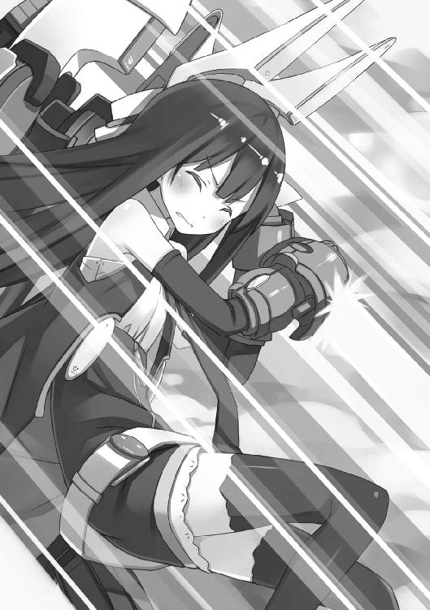
五人チームを分けて、それぞれの《集落》を同時に相手する必要がある。
桜花は瞬時に頭の中で二体の《集落》の特性と、各《機巧士官》の得意分野を比べ、チーム編成を完了。
「菖蒲、アシュレイはそのまま《ウマシアシカビ》の相手を。シャーロット、リヒャルダ、あなたたちは私と《ミナカヌシ》を──」
行動は的確だったけれど、《集落》の挙動が人間の対応できる範囲を超えた。
ふっ、と消え去る《ミナカヌシ》の巨体。
それだけではない。
「......《ウマシアシカビ》、ロストした」
アシュレイの報告を受けて桜花は下を見る。
そこには、あれほど巨大だった《ウマシアシカビ》の姿が、どこにもなかった。
雲一つない青空。
太陽がすべてを照らし出し、隠れるところなどどこにもないこの場所で──
《機巧士官》たちは、《集落》という脅威を、完全に見失ったのだ。
３
滅多にしないことだが、桜花は司令部に二体の《集落》の行方を問い合わせた。
司令部も二体の反応を完全にロストしていた。......信じがたいことだが、《ミナカヌシ》か《ウマシアシカビ》、あるいはその両方が『瞬間移動』としか呼べない能力を保持していたということになる。
おそらく《ミナカヌシ》の方がこの能力を持っていたのだろう、と桜花は分析する。
なぜならば《ウマシアシカビ》が瞬間移動できたのであれば、その能力を使うタイミングはいくらでもあった。それを一度も使用しなかったということは、つまり瞬間移動はあとから来た《ミナカヌシ》の能力だということだ。
今までゆったり進軍していたのになぜいきなり瞬間移動して来たのか。
司令部と会話しつつ、桜花はある仮説を立てた。
追い詰められた《ウマシアシカビ》から救難信号のようなものが出ており、それをキャッチしたため《ミナカヌシ》は瞬間移動で現れたのではないか──
また、瞬間移動か救難信号には限界距離があり、だから一昨日、バルト海《集落》である《タカミムスビ》を撃墜した際には現れなかったのではないか──
限界距離があるのは瞬間移動であってほしいと願うしかない。距離まで自在だともう手の出しようがないのだ。
希望的観測だった。
まさか《集落》に逃げられると思ってはいなかった桜花は、さすがにこれからの行動について司令部に指示を仰ぐ。
駐屯基地にて待機が言い渡された。
また、いくら瞬間移動しようとも、《集落》は一体が百メートルを超える空飛ぶ異常事態である。捜すのにそう時間はかからないだろう、とも言われる。
つまり、見つかるまで、休みの時間が降って湧いたわけだ。
「......まあ、《集落》も逃げ出すぐらい私たちが強かった、と思っておきましょう」
勝利でもなく、さりとて敗北でもない結果に戸惑う仲間たちに、桜花は言う。
ここで撤退されたのは正直痛い。
《機巧士官》の強さはモチベーションに直結するのだ。この肩すかし、タイミングずらしは少なからず《機巧士官》の出力を落とすだろう。
だから少しでも士気を高いまま維持しておこうと思ったのだが......
そこまで見越しての撤退なのか、と桜花は一瞬だけ考えて首を振る。
《集落》に心理戦を仕掛けてくるだけの知能はない。
では、なぜ撤退したのか。
その前に、あの行動は撤退なのだろうか。
《異界人》や《集落》が『逃げる』というのはどうにも違和感がある結論だ。そんなまっとうな生き物みたいな情緒をあの異常存在たちが持っているとは考えにくい。
では、なぜ目の前から消えた？
そもそも、《集落》は何を目指して移動をしていた？
──嫌な予感がした。
「各員、戦闘速度でお台場に向かってください」
それだけ告げて加速する。
不思議そうにしながら、仲間も付き合ってくれた。
桜花は嫌な汗が額を伝うのを感じる。
胸をおさえた。
《機巧》はここにある。
兄と分けていた《機巧》は、とっくに一つになって自分の胸の中にある。
だから、もしリヒャルダの──司令部の言う通りに、『桜花と晴空の中に二つに分けられて入っていた《機巧》が《集落》を呼び寄せている』のならば、《集落》は自分を狙ってくるはずだ。
けれど、実際にはどうだった。
本当に司令部の言う通りならば、《ウマシアシカビ》も《ミナカヌシ》も、撤退などしないで死ぬまで自分を追い詰めようとするはずだ。いや、攻撃が目的でなかったとしても、自分から離れるという選択はありえないはずだ。
記憶をあさって、嫌なことを思い出す。
二体目、カリブ海《集落》との戦いで、カリブ海《集落》は《機巧士官》ではなく、遠く離れた地上を狙ったことがなかっただろうか？
《機巧士官》の弱みが地上にあるとわかったうえでの行動？
そんなはずがない。そんな知能はない。戦いを繰り返して《異界人》や《集落》に知能と呼べるものがないことを、桜花はよく知っている。
まさか《集落》たちの狙いは、《機巧》──鹵獲された《核》ではなくて、もっと別なものだったのか。
だとすれば、その『別なもの』とは。
限界いっぱいまで速度を上げて、桜花はお台場駐屯基地を目指した。
時間があると嫌な考えばかりが浮かぶ。
停止していた《集落》が動き出したタイミングに、何があった。
動き出した《集落》は、最初、どこに向かっていた。
二体目の《集落》はなぜ真っ直ぐにお台場を目指していたのか。太平洋沿岸ならどこでも上陸できたはずなのに。そもそも、日本以外にも国はあるのに。
今まで『《異界人》だから』と考えることを放置していたすべての出来事に理由があったとするならば、その『理由』となるものとは──
──お台場に帰還する。
桜花は祈っていた。
たどりついた必然性のある解答などではなく、『理由はなく理解も不能な《異界人》の気まぐれ』というのが《集落》の行動原理であってほしいと祈っていた。
けれど、現実はこういう時ばかり必然性の上に成り立っている。
桜花が見たのは、変わり果てたお台場駐屯基地だった。
二体の《集落》が《異界人》を吐き出しながら、お台場駐屯基地を蹂躙している。
住居だった灰色の立方体の建物は、残らず桜の樹と化していた。
それも見慣れた桜ではない。
美しさなどまったくない、禍々しい赤紫色の花を散らす、ねじくれた巨大なサクラ。
とっくに《異界人》に制圧されたお台場駐屯基地。
けれど《異界人》も《集落》も都心へと侵攻することはなく、何かを捜すように、いつまでもお台場をうろうろしている。
──桜花の懸念が確信に変わる。
つまり、《集落》たちが目指していたのは、《機巧》などではない。
風早晴空。
たった一人の少年を目指して、《集落》は侵攻をしていたのだ。
呆然とお台場駐屯基地だった場所を見下ろしながら、桜花はつぶやく。
「......兄さん、あなたは──何者なんですか」
胸をかき抱く。
──十年前、この胸にもらった命を確かめる。
この中にあるのは、かつて晴空から半分だけ分けられた《機巧》。
そうだ、十年前の話なのだ。
なぜ、まだ《機巧士官》という概念もなく、《集落》はおろか《異界人》を鹵獲する技術もなかった時代に、晴空の胸には《機巧》が宿されていたのだろう？
４
「いやあ、これは忘れるわ......すっげぇ怖い」
自分や同級生たち『記憶喪失組』が記憶を喪った経緯に納得し、晴空はうなずいた。
変わり果てた桜の森に隠れ潜んで空を見上げる。
空を埋め尽くす二体の巨大な《集落》。
地上には《異界人》の手が入っており、先ほどから細かく場所を変えつつ晴空はどうにか逃げ延びていた。
運が良かった、と思う。
ハンガー入口上部にあるモニターで桜花たちの戦いを見ていたところ、《集落》の姿がふっと消えたシーンを目撃した。
まあなんでもアリな連中だし瞬間移動ぐらいするだろうな、と思いながら桜花が無事だったことにひとまず安堵していたところで、何やら外が騒がしいなというのを感じた。
実際に何か音がしたということではなく、空気がざわついているとか、肌がぴりぴりするとか、そういう直感的なものが晴空の体を動かした。
謎の悪寒に突き動かされるままハンガーの外に出たその瞬間、先ほどまでいたハンガーが、巨大なサクラの樹に変化していく様子を見せつけられることとなる。
ねじくれるコンクリート。
みしりみしりと自身の変化に耐えきれずに砕けていく外壁。
ヒビが入り、そこから枝が伸びて、花が咲く。
その花も変化に吞み込まれ、砕け、さらに新しい枝や花の礎となっていく。
次第にただの立方体だったはずの建物が、そびえ立つ歪な形状の樹木となっていった。
ぞっとする。......もしあの中にいたら、建物の形状変化に吞み込まれて押しつぶされていたか、あるいはあの醜悪な赤黒いサクラの花びらの一枚に変質していたかもしれない。
先ほどまで中にいた建物が変質するだけでここまでの怖気なのだ。この変質が家族に起これば心的衝撃は筆舌に尽くしがたいものがあるだろう。
それこそ、心が壊れるのを防ぐために、記憶を消去してしまうほどに。
状況の理解は自分でもおどろくほど速かった。
『ここにいたら危ない』
その程度の理解だったが、充分だった。
桜花のところで戦っていた《集落》がこちらに転移しただとか、なぜお台場駐屯基地が襲撃を受けているのだとか、そういうところまではさすがに頭が回らなかったが、力ない一般人でしかない晴空が『危ない』と感じた時にとる行動は、『逃走』一択なのだ。
全速力で逃げて、遮蔽物の多い桜の森へ入った。
森を薙ぎ払っていく《異界人》の光線。
美しかった薄桃色の花が、立派だった枝振りが、なめらかだった幹が、光線を受けた順番に変わり果てていく。
花は薄桃色から血のような黒赤色に。
枝はねじくれ拡散し、どことなく救いを求める人間の腕のように見える。
幹には歪な模様が描かれ、それは苦しみを訴える人面にも見えた。
しかし変質をもたらす光線は、木々に阻まれ晴空には当たらなかった。
──そして現在に至る。
桜の森を少しずつ移動して《異界人》から逃げつつ、桜花を待っている状況だ。
ちなみに桜花からもらったインカムは使用できなくなっている。
おそらく《機巧士官》とこのインカムとを中継する役割を担っていたハンガーの設備がサクラの樹に変質してしまったからだろう。
だからいつ助けが来るかは運次第というところだ。
「にしてもしつこいな......十年前もこんな執念深く人間を殲滅していってたのか」
だとしたらぞっとする。
言葉も通じず、そもそも意思があるのかすらわからない物体が、執念深く念入りにこちらを害する目的で捜しているのである。
今の晴空には予備知識があるから多少は恐怖を緩和できているけれど、十年前の《異界人》初襲来──法則更新日にいきなりこの状況に追い遣られた人間の恐怖はいかほどか。
「さてどうするか......」
自分がすべきことを考える。
装備を確認。
Ｔシャツ。カーゴパンツ。サンダル。
ハンカチ（二日物）。インカム（使用不可）。
携帯電話も財布もない。
胸には桜花と半分こにした《機巧》があるはずだが、《機巧制服》をまとうことはできない。男ではエネルギー量が少なすぎて戦う意思を物質化できないのだ。
アシュレイに訓練方法を教わってこっそり練習をしてはいるものの、こっちに《機巧士官》としての才能がないうえにあっちには教官としての才能があんまりなく、指示された練習方法は『できると信じて......がんばる』というものだけなので、成果は出ていない。
つまり、完全無欠に無力だった。
都心部に逃げるという選択肢はない。
あんなもの引き連れて都心に行くぐらいなら、ここで心中した方がマシである。
なぜか向こうは自分を捜しているようだし、時々姿を見せて存在をアピールしつつ可能な限りお台場に釘付けにしよう、というのが晴空の主な行動指針だった。
時間さえ稼げば桜花が絶対に戻ってくると信じている。
いつ戻るかが一番の問題なのだが──
晴空は、どうやら運がいいらしかった。
「......あれは」
遠く、赤黒いサクラの向こうの空に、《機巧士官》らしき集団が見える。
その集団はすさまじい速度でお台場に接近。そして、お台場駐屯基地の惨状を見下ろして一瞬だけ立ち止まったあと、散開して《異界人》掃討を開始した。
散らばっているのは倒すべき《異界人》の数が多いことと、たぶん、自分を捜してくれていることが理由だろうと晴空は考える。
大声を出して存在をアピールするという行動を思いついたが、あいにくとかなり近くまで、のっぺりとした、真っ白いヒトガタの《異界人》が隊列を組んで近付いてきている。
今、声を出して居場所を知らせるのは自殺行為だろう。
晴空は口を両手でふさいで息を殺し、樹の根元にしゃがみこんで様子をうかがう。
接近してくるのは桜花だった。
隊列を組んでいる《異界人》の列に突撃して、刀で一掃しては空中に戻るという行動を繰り返している。
右肩の砲を使わない理由は、自分を巻き込まないようにするためか、と晴空は考える。
となると、アシュレイやシャーロット、他の《機巧士官》の戦いも、自分の安否が確認できないせいでかなり制限してしまっているかもしれない。
近くに迫った《異界人》の隊列は、背後で味方がやられているのにも頓着せずに、桜の森へ侵入を開始した。
迫る足音は軍隊のように整然としていて、重い。
桜花は──近場にいるのだが、敵の数が多いのに刀しか使えないせいで、かなり苦労をしているようだ。
やり過ごすか、飛び出すか。
迷いながら桜花の様子をうかがう晴空の目に、映り込むものがあった。
数多の乗り物が突き刺さった巨大な目玉型の《異界人》──おそらく《集落》と思われるモノが、音もなく唐突に、桜花の頭上へと出現した。
「桜花、上だ！」
行動に迷いはなかった。
「兄さん!? ──今、助けます！」
ただ、桜花の方の反応に、計算違いがあった。
晴空の姿とその周囲にいる大量の《異界人》を見つけた桜花は、自分の頭上を気にするよりも先に、晴空の方へと刀をかまえて飛んでくる。
桜花が危険な目に遭いそうだから叫んだのに、結果として桜花を死地に飛び込ませることになってしまう。
──ただ、晴空はやっぱり、運がよかった。
目玉型の《集落》が、その瞳に突き刺さった数多の乗り物の先端部分を、一斉に晴空の方へ向けた。
目玉型《集落》が発光する。
一瞬あとで放たれる、人間を無機物に変質せしめる光線。
その光線が自分の方を──桜花ではなく自分の方を──向いているのを、晴空はしっかりと確認することができた。
「──よかった」
だから心から安堵しきった顔でつぶやいて。
濁流に吞まれる木の葉のように、晴空の姿は光線の中へ消えた。
５
意識が漂白される。
どこからか聞こえる声に、カレは耳をかたむけた。
やけに古ぼけてすり切れた声。
......だからきっと、現実ではないんだろうな、とカレは思った。
白すぎてまぶしい世界に、小さな女の子の声。
──しぬのは、いやだよ。
カレには理解ができなかった。
生きるとか死ぬとか、わからない。
ただ何か『やらなくちゃいけないこと』だけがあって、そのためだけに在ったから。
『それ』を達成することだけが、存在する理由だった。
でも、疑問に思った。
──どうして、死ぬのがイヤなの？
──わかんないけど、いやなの。
わからないけど拒絶する。
それはカレにとって新しい概念だった。
──じゃあ、イノチ、半分あげるよ。だから、わかったら教えて。
──わかったら？
──そう。死ぬのがイヤな理由。わかったら、教えて。
イノチの分け方は知っていた。
もとよりカレは数多のイノチを生産する存在だ。
それは『やらなくちゃいけないこと』のために必要な機能で、カレにとっては生まれた時から持ち合わせている、どんな感情も抱く価値がない、当たり前の生態。
けれどカレは感動する。
目の前のイノチを救った充足感。それを可能にした自分の生態への感謝。心が動く。心がある。心というものを初めて自分の中に感じて、カレは感動したのだ。
──はい、これでおしまい。半分もあげたんだから、大事にしてほしいな。
──おにいちゃん、ありがとう。
──死ぬのがイヤな理由、わかった？
女の子が黙る。
カレは辛抱強く答えを待った。
──わかんない。けど......
──けど？
──もういちど、きれいなあおいおそら、みたかったの。
カレは生きることに理由があるのだと知った。
だからきっと、そのことに気付いた瞬間、カレは産まれた。
一人の女の子に晴れた青い空を見せたいという願いが、自分の産声だったのだ。
６
「兄さん！ 兄さん!?」
「ん、あ、ああ......ね、寝てませんよ......」
首を振りながら晴空は意識を覚醒させる。
ここは──桜の樹海だろうか。
お台場を囲む桜の森の大部分は、歪で不気味な姿に変質させられてしまっている。
しかし《機巧士官》たちが『桜の樹海』と呼ぶこの場所だけは、まだ《集落》の魔の手が及んでいないらしい。......妙な話だった。この桜の樹海だって、かつては人工建造物で、《異界人》侵攻の爪痕のはずなのに。
「兄さん、無事──なんですね」
「ええと、どうなったんだっけ......」
どうやら自分は桜花に膝枕してもらっている状態だとわかる。
桜花は《機巧制服》に搭乗している。
春の花々が咲き乱れる八月の昼下がり。妹の膝枕で眠りこける。
そんな穏やかな状況だっただろうか、と意識を失う前のことを思い出そうと努める。
どうにも頭がうまく回らない。まるで誰かに憑依でもされていた気分だ。自分が自分じゃないような錯覚。
状況の把握に努める。
無事なんですね、と桜花が言うからには、無事ではないであろう事態が起こったんだとは思う。
しかし──気になるのは表情だ。
なぜ桜花は、自分が無事で悲しそうな顔をしているのだろうか──
「..................なるほど」
思い出す。
自分は目玉型《集落》の光線に真正面から吞み込まれたのだと。
人工建造物を樹木に変え、人間を無機物に変えてしまう光線に、言い訳のしようもなく正々堂々真っ正面から吞み込まれて──生きているのだと、思い出した。
「さすがに、ありえないな」
「あ、ありえないって、そんな──いえ。兄さんが冷静で安心しました」
「桜花の方は、あんまり冷静じゃなさそうだけどな。......あのさ、聞いていいか？」
「どうぞ」
「前にさ、ペンダントしてたじゃん、俺たち」
「......はい」
「それって本当に、俺たちの両親からもらった物？」
「......」
桜花は黙る。
沈黙で、だいたいわかった。桜花の言葉には、噓があると。
「......いや、ごめん。まだ何も片付いてないんだろ？ 話はあとでもできるもんな。まずは戦ってる仲間を助けないと。だろ？」
「兄さん」
桜花が震える声を出す。
顔に髪がかかって、表情がよく見えない。
「私は、迷っています。だって、私はずっと、兄さんのためだけに戦ってきました。それ以外のことを考えるのを、放棄してきました。......一緒だと思ってたんです。『兄さんのために戦うこと』と、『人類のために戦うこと』が」
「......うん」
「もしもこの二つがまったく別で、それどころか両立できないようなものだったら、私はきっと──」
「たぶん桜花は、俺自身よりも、俺が『何』なのか見当ついてるんだと思う。俺はまださっぱりだ。とりあえずまっとうな人間じゃないことはわかったし、この世界で『まっとうな人間じゃないクセに人間のふりできそうな存在』なんて、一つしか思いつかない。だから、『それ』かな？ とは思ってる」
「......そんな、ことは」
「無理に否定しなくてもいい。......いや、俺のためだったら否定しなくてもいい」
起き上がって、立ち上がる。
桜花は顔を上げて晴空を見上げる。
表情は不安そうだった。
泣きそうに唇をわななかせている。
「もし俺が人類の敵だったら俺を撃て。──なんては言わない。たぶんそんなの耐えきれないだろ、おまえ」
「......はい」
「じゃあ、俺の仲間になって人間を撃て。──っていうのも言わない。正直よくわかんないし、そんな気分でもないんだ。だって、どっちにしたって桜花はつらいだろ？」
「でも、私は兄さんのためにがんばってきましたから」
「知ってる。聞いたよ。だから──今度は俺ががんばる番だよな」
膝をついて桜花の手を握る。
震える肩。揺れる瞳。
晴空は、空いている手を伸ばして、桜花の頭を撫でて、笑った。
「俺が『何』でも、俺は桜花の味方だよ」
「......！」
「当たり前だろ、お兄ちゃんなんだからさ。自分の存在なんかに負けないよ。俺が『何か』であることより、俺が桜花の兄であることの方が、俺の中では重いんだ。だからさ」
晴空は空を見上げた。
遠く、目玉型の《集落》と、空に浮かぶ巨大な都市が見える。
いつしか駐屯基地一帯の空は虹色の分厚い雲に覆われていた。
はらはら舞い散る虹色の雪。
異界の景色へと変わり果てた八月の空。
それを見上げて晴空は、
「もう一度、綺麗な青い空を見せてくれよ」
腕を引いて立ち上がらせる。
大した妹だった。途中までは膝に力が入らない様子だったのに、いざ立ち上がればその姿はしゃんとしている。
力強い。いや《機巧士官》風に言えば『かわいい』と言うべきなんだろう。
だから、ちょっとだけ照れるけれど。
「『かわいい』桜花なら、あの空を覆う雲を撃ち抜くぐらい、簡単だろ？」
「......はい！」
桜花は笑う。
そして、空へゆっくりと浮上していく。
見送ろうとする晴空。
しかし桜花は、腕を離してくれない。
「桜花？」
「兄さん、私の隣、空いてますよ。──特等席です」
桜花の笑顔。
晴空も、笑った。
苦笑いに近かったけれど。
「......ほんと、すごい妹だよおまえは」
ぐっと桜花とつないだ腕を引く。
意思はそれで伝わった。
引き上げられる体。
桜花の右側に誘導される。
抱き合うように桜花の横にぴたりとくっつく。
温かな体温と柔らかな感触。それから、いいにおい。
生きている感じが鼓動のリズムで伝わってくる。
ゆったりと浮上。
高く高く、異界の雲に覆われた空へとのぼっていく。
「見下ろすとひどいですね。......まったく、私たちの家をこんなにしてくれて」
変わり果てたお台場駐屯基地を見て桜花は嘆く。
晴空は笑った。
「また造ればいいさ。幸いにも木材はいっぱいある。時間だっていっぱいある」
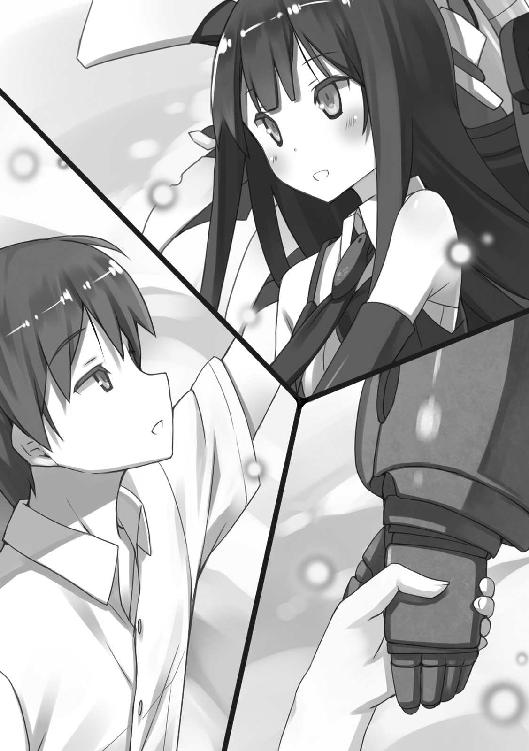
「残念ながら木材はたぶん、なくなってしまうと思いますよ」
問いかけようと桜花の顔を見たら、目の前に砲身が降りてきた。
《機巧士官》風早桜花のメインウエポン。炸薬狙撃砲。
「兄さん、引き金に手を」
桜花の顔の前にバイザーのような物が出現している。
晴空は言われるまま、桜花の右手と重ねるように、左手で狙撃砲の引き金を握った。
──目玉型《集落》と空飛ぶ巨大な都市のような《集落》が、こちらに気付いた。
放たれる無数の光線。
目玉からは極太のレーザーが、都市からは数限りない、細い赤い筋が。
真っ直ぐにこちらを目指してくるけれど、怖くはなかった。
隣に誰かがいて、その鼓動を感じ取れること。
それがこんなにも心強いのだと、晴空は今日、初めて知った。
桜花と見つめ合う。
そして、うなずき合った。
──引き金を引く。
狙撃砲の弾丸は真っ直ぐに飛んでいく。
空気を引き裂き。
無数の赤い筋を吹き飛ばし。
太い虹色の光線を貫いて。
空の向こうにいる二体の、大きな大きな《集落》へと届く。
まず都市型《集落》を貫く。
次に目玉型《集落》を貫くところで、目玉型《集落》の姿がかき消える。
瞬間移動だ。
けれど──もう、空のどこにも、《集落》や《異界人》が存在していい場所はない。
弾丸が、爆発した。
映像越しではなく晴空が見るのは二回目になる。あまりに巨大な純白の爆発。太陽が落ちてきたかのような美しい光。
それは広く広く空を覆って、瞬間移動なんて無意味なほどの広範囲に広がり、目玉型《集落》を吞み込む。
吹き散らされる曇天。
地上にまだ跋扈していた《異界人》すら消えて、あとには何も残らない。
......なるほど、『木材がいっぱいある』というこちらの発言に対し、桜花が『なくなってしまう』と言った理由がわかった。
あまりの規模の爆発に、お台場の地形がえぐれている。
相変わらず派手にやるな、と晴空は笑って、
「やったな」
「いいえ、残念な結果ですよ。──上を見てください」
まさかまだ生きているのか、と晴空は空を見る。
しかしそこには雲一つない夏の夕暮れ。
何が残念なのかと桜花を見れば、桜花は困ったように肩をすくめる。
「だって兄さんは『青い空』を見たがっていたのに、もう夕暮れなんですよ？ ......残念です。私に時間を戻す力があればよかったんですが」
冗談なのか本気なのかわかりにくい。
まあどっちでもいいや、と晴空は改めて肩の力を抜いて言う。
「別に急がなくってもいいんじゃないか？ 明日があるんだしさ」
「予定が前倒しでオフですしね」
桜花が微笑み、二人してしばらく空にとどまる。
夕日が沈んでいく。
いつか誰かが見たいと言っていた青空は取り戻せたかな、と晴空は思った。
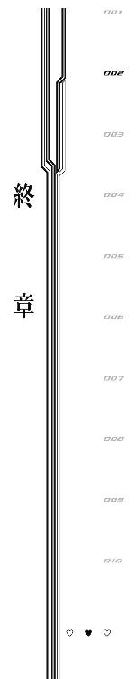
他のメンバーで残党がいないかどうか見てまわる間、桜花と晴空はつかの間の休憩をもらった。
「しかし世界を救ったのか滅ぼしたのかわからない光景ですね、コレ」
桜花が静かに感想を漏らす。
夕暮れに染まるお台場駐屯基地──もはや跡地と言うべきかもしれないが──は、隕石でも衝突したのかよというクレーターと、駐屯基地外周に桜の森が残るだけで、あとは綺麗さっぱり何もない廃墟と化していた。
もうすでに桜花も晴空も地面に降りているけれど、桜の樹海から見える景色はすっかり見通しがよくなってしまっていて、地上で見てこのありさまなのだから、空中から見たらもっとひどい惨状になっているだろうことが容易に想像できた。
桜花と晴空はひときわ大きい桜の樹の幹に背をあずけて座っている。
晴空はひどいけだるさを感じる。
体中から力が抜けていた。
「《機巧士官》はこれからどうなるんでしょうね」
桜花がつぶやく。
晴空は目を閉じて大きく息をついた。
「さあな......日常生活に戻るのか、新しい任務が来るのか、それとも《異界人》のいた世界──異界にでも攻め込むつもりなのか」
「兄さん、記憶は？」
唐突な話題転換──ではなく。
異界という話が出たがゆえの、至極当然な質問だった。
晴空は頭上を見上げながら考え込む。
「記憶はないな。断片すらも思い出せない。というか、今だから思うんだけど──最初っから、俺の中に十年より前の記憶はなかったんじゃないかと」
「どういうことですか？」
「いや、なんとなく」
《異界人》の光線を浴びた時に、何かがフラッシュバックした気はする。
けれど思い出そうとするたびにひどく気分が悪くなる。......まるで他人の記憶を無理矢理頭の中にねじ込まれたかのようだった。
記憶をさぐるたび、サイズの合わない、しかも誰かよく知らないやつの体温がまだ残っている服に体を通そうとするかのような気持ち悪さと窮屈さを感じる。
けれど断片的な印象から判断するに、どうにも十年より前のことは『忘れた』のではなく『なかった』んじゃないかというふうに思う。
これをどうかみ砕いて桜花に伝えようか、と晴空は頭を悩ませて、
「......俺は十年前に産まれたんじゃないかなって思うんだ」
「そんな、そんな、それじゃあ......」
隣の桜花がわなわなと肩を震わせる。
想定できた反応だったな、と晴空は思う。
十年前に産まれたんじゃないか──この言葉は、晴空が人間以外の何かであると自白しているも同然である。
今まで兄のためにがんばっていたのに、兄が何者かわからない。
この事実が桜花と自分の心理的距離を遠いものにしたとしても、桜花を責めたり桜花に絶望したりするべきではないのだから。
だから晴空は、ある程度の軽蔑とか、あるいは憤慨とか、突き放すような言葉とかを覚悟して桜花の次なる言葉を待って、
「それじゃあ兄さんは兄さんじゃなくて弟かもしれないということですか......!?」
桜花の発言に、幹にあずけている背中がずるずるとすべるほど脱力した。
「そうじゃないだろ！ 今の俺の言葉は、そんな軽い話じゃないはずだ！」
思わず食ってかかる晴空。
しかし桜花は『何を言っているんだろうこの人は』という顔で首をかしげる。
「兄さんが『何』であるかはそこまで重要ではないのです。そもそも私は兄さんを人間だと思ったことは一度もありません。兄さんは『兄さん類兄さん目兄さん科の兄さん』という生き物で、人類とは一線を画しているのですから」
「今の俺が言えた立場じゃないけど、可能なら人間として見ていてほしかったな......」
桜花の言う通りの生物は、『兄さん』以外の生き方が許されない感じである。
もっと色々なことして生きていきたい。
「ですが兄さん......ああ、いえ、わかりました。わかりましたよ。そうですよね。兄さんにも兄さん以外の人生がありますものね」
「そうだよ......」
「私のことを『お姉ちゃん』と呼んでもいいですよ？」
「そうじゃねぇよ！」
「じゃあ私のことを結局どのように呼びたいんですか!?」
「俺の人生の選択肢全部に無理矢理関係しようとするのやめないか!?」
「やめません！ だって兄さんがいない人生は無理ですから！」
はっきり、真顔で言い切られてしまった。
晴空は言葉に詰まる。
「私は《機巧士官》として生きてきました」
桜花が静かな声で告げる。
「《機巧士官》を続けるモチベーションは、もちろん兄さんのことでしたけれど、やっていくうちに仲間もできて、使命感も芽生えました。『人類の天敵である《異界人》を倒す』という使命感です」
「......立派に成し遂げたよな」
「はい。それでですね、兄さんが《異界人》かもしれないじゃないですか」
「俺がさんざん明言を避けてきたのに、はっきり言うのな......」
「言わないと面倒くさいですからね。......それで、私は天秤にかけたんです。《機巧士官》としての使命感と、兄さんとを」
殺すか、殺さないか。
晴空が本当に《異界人》なら《機巧士官》としては殺すべきだけれど、どうすべきかを考えたのだと、桜花はあっさり告白した。
少しだけ微妙な気持ちだ。《異界人》だとした時の自分の処遇は真っ先に考えるべきことではあったけれど、実際に考えられるほど晴空は自分に冷たくなれなかった。
桜花は冷静に考えたうえでの結論を語る。
「保留にしました」
「......え、ここは兄妹の絆でたとえ《異界人》でも受け入れるとか、そういうんじゃ」
「そう言おうと思っていたんですが、私はここで自分でもおどろくほどのことを閃いたのです。その閃きは、ここで兄さんに甘くして好感度を稼ぐよりも、私たちの未来を明るくする可能性の高いものでした」
ふふん、と自慢げな顔をする桜花。
嫌な予感しかしなかった。
「私がこれから、一生、兄さんを保護観察します」
「......」
「《機巧士官》ですからね。兄さんが何であろうと、私なら止められます」
「止められるのか。......おまえにならってはっきり言うけど、殺せるのか、俺を」
「殺せませんけど、心中ならできますよ」
すがすがしいまでにはっきり言われて、晴空は鼻白む。
妹がひどいヤンデレだった。......そういえば駐屯基地に招かれたその日に、椅子に縛り付けられたりしたっけな、とトラウマがフラッシュバックする。
「だから兄さん、私を死なせたくなかったら兄さんでいてください」
「......ひどい楔だ。そうやって簡単に命を賭けるのはよくないと思うぞ」
「賭けるんじゃありません。そんな一方的なものではなく、言うなれば──」
桜花が言葉を探すように空を見上げる。
晴空も釣られて上を見た。
夜空。
いつかここで見たような星くずが、空一面にちりばめられている。
フレームのように視界を覆う桜の花の隙間に、いつか投げ捨てたペンダントを探す。
しかし見当たらなかった。......自分にまっとうな両親がいないっぽいので、アレも尋常なシロモノではなさそうだし、桜花の砲撃の余波で蒸発したのかもしれない。
かつて自分と家族をつないでいた大事な物も、このように儚く消え去る。
桜花はようやく言葉を見つけた、というように晴空の頰を引っ張った。
「にゃんだよ」
「共存です」
「はい？」
「私だけが命を賭けるのではなく、私も兄さんも、一つの命を共有するんです。昔は難しくってわからなかったから、ペンダントというかたちにしてもらいましたけど、今なら見えなくても同じ命を持っているって確信できるでしょう？」
なんて物騒な共存関係だろう、と晴空は苦笑いする。
でも最初からそうだった。この妹は物騒で不器用なのだ。
強さ以外に自分の魅力を示す手段を知らないし、あと常識も知らない。
自分がどうにかしなければ、と強く思う。
自分の存在についてどうこう思うのは、ひとまず置いておこう。
今はそれよりも、『記念祭』までにこの危なっかしい妹に常識を教えなければ。
「明日からは俺の方が忙しくなりそうだな」
「どういう意味ですか!?」
「なんていうか......そう、桜花がただただ普通に生きていくのは、大変だって話だよ」
世界も救わず人類も助けず、空も飛ばず銃も撃たない。
そんな生活はきっと桜花に合わないだろうなあ、と晴空は思う。
「でも、俺がどうにかするよ。お兄ちゃんだからさ」
「......はい！」
腕に抱きつく桜花。
晴空はふりほどく気力もなくて、目を閉じた。
このまま眠りに落ちてしまえば、目覚めたころには夜も明けているだろう。
そうすればきっと、見えるはずだ。
かつて誰かが望み、いつしか世界中の誰しもが望むようになった、何もない普通の空。
奇跡も悪夢もない、普通で尊い青の景色が。
あとがき
こんにちは。
ここ最近は胃腸の調子を崩したり筋トレしたり高熱出したり凍った地面ですべって頭を打ちそうになったりと、地味に死にそうな日々だった冬木冬樹です（二月末の話）。
今回は《集落》の名前についてちょっと解説。
あんまり聞き覚えがない名前だと思いますが、これは日本神話からとっています。
《集落》は世界各国に同時出現した設定なのになんで日本神話やねんという話ですが、冬木は《集落》的な『人類がまだ遭ったことのない概念』についての名前付けは基本、早い者勝ちだと思っています。新しい星の名前はその星の発見者がつけていい的な話です。
なので日本人が最初に名前をつけたから全世界でこの浸透しにくそうな名前が使われているというふうになっています。世界それぞれで別な名前がある、みたいなことはありません。
実は最初、《集落》に名前をつけるという発想がなかったのですが、これも担当さんからいただいて結果的につけてよかったなと思っているところです。
自然な流れで謝辞へ。
ポコ様。前回に引き続き素敵なイラストをありがとうございます。シャワールームのシーンのラフをいただいた時は『これから何が始まるんだこのシーン!?』と驚愕いたしました。本当素敵です。
新担当様。引き継ぎからこっち、修正指示その他もろもろ支えてくださって本当にありがとうございます。自分で言うのもなんですが色々ムラのある冬木の相手は大変だったと思います。ごめんなさい。
そして読者のみなさま。
『ストライク・プリンセス』はこの巻で終了です。
短い間でしたが、ツイッターなどで『読んだよ！』みたいなお声もいただきまして、本当にありがとうございます。ブランクあって色々不安でしたが二巻を書くモチベーションをいただきました。
また、この本にかかわってくださったすべてのみなさまにも感謝を。
また次のシリーズでお会いできるようにがんばります。
冬木冬樹
カバー・口絵・本文イラスト／ポコ
カバーデザイン／ビィピィ
お台場駐屯基地の妖精
ストライク・プリンセス２
冬木冬樹
平成26年4月1日 発行
(C) 2014 Fuyuki Fuyuki, poco
本電子書籍は下記にもとづいて制作しました
角川スニーカー文庫『お台場駐屯基地の妖精 ストライク・プリンセス２』
平成26年4月1日初版発行
発行者 山下直久
発行所 株式会社ＫＡＤＯＫＡＷＡ
〒102-8177 東京都千代田区富士見2-13-3
03-3238-8745（営業）
編集 角川書店
〒102-8078 東京都千代田区富士見1-8-19
03-3238-8694（編集部）
http://www.kadokawa.co.jp/